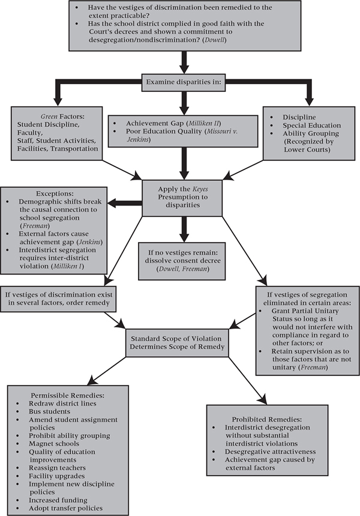

Equality rests at the center of the challenges and commitments of modern education law. The issues it raises are far from settled. As a general matter, much of the law of equality is relatively recent and may not have had a full opportunity to mature. Yet some limitations in equality may have little to do with the passage of time and more to do with the fact that equality law—more than any other area of law—poses an institutional challenge to school systems and their culture. This tension has dominated education law over the past four decades, with the law vacillating between extending and retracting equality.
The Supreme Court’s decision in Brown v. Board of Education, 347 U.S. 483 (1954), is the foundation of modern education law and its various equality frameworks. The direct impact of Brown was on racial segregation in schools, but the case also triggered a shift in the nation’s commitment to public education and its understanding of equality of educational opportunity. This shift still reverberates more than half a century later. Its ripple effects now extend far beyond just racial equality and include equality based on ethnicity, poverty, gender, disability, language status, and homelessness. Each of these substantive equality paradigms is indebted in some way to Brown. Before Brown, equality for most disadvantaged groups was not even a consideration, but Brown created a concept and an expectation of racial equality that could be naturally extended to other disadvantaged groups. Since then, numerous statutes and judicial rationales for equality in areas other than race have been modeled on or adapted from racial equality standards.
Brown also altered the nation’s basic concept of public education itself. Prior to and immediately following Brown, courts and the national culture did not fully acknowledge a duty to deliver a quality education to children, or grasp the notion that education was a public good that citizens could demand. For instance, the requirement that all children attend school on a regular basis through high school was a principle that only slowly evolved and was met with resistance continuing into the 1960s. Operating within this tradition, the Court wrote in Brown that “the opportunity of an education, where the state has undertaken to provide it, is a right which must be made available to all on equal terms.” This statement was not historical semantics but a carefully crafted acknowledgment that the state need not offer children an education at all. Thus, it was only upon offering education that equal protection was triggered.
Over time, the basic right to education has been cemented and is no longer something that the state might simply “choose” to provide; the public now expects the state to provide it. Few can see it any other way. Although Brown did speak directly to this change, subsequent courts have identified Brown as the intellectual and moral grounding for an affirmative state duty to educate students. In fact, Brown may be more often quoted for its simple articulation of what education means to our society than its condemnation of segregation. To serve any number of differing ends, courts, scholars, and legislatures frequently reiterate Brown’s pronouncement that
[t]oday, education is perhaps the most important function of state and local governments. “Compulsory school attendance” laws and the great expenditures for education both demonstrate our recognition of the importance of education to our democratic society. It is required in the performance of our most basic public responsibilities, even service in the armed forces. It is the very foundation of good citizenship. Today it is a principal instrument in awakening the child to cultural values, in preparing him for later professional training, and in helping him to adjust normally to his environment. In these days, it is doubtful that any child may reasonably be expected to succeed in life if he is denied the opportunity of an education.
347 U.S. 483, 493 (1954).
Notwithstanding its primacy in modern education law, Brown was not the first Supreme Court’s first major pronouncement of education law. Most cite Pierce v. Society of Sisters, 268 U.S. 510 (1925), as the first foundational case dealing with education. The Court in Pierce recognized two crucial principles. First, parents have a right to control the upbringing and education of their children. Second, the state has the power to reasonably regulate both public and private schools to further a public welfare interest in ensuring children are appropriately educated. In doing so, Pierce affirmed the state’s central role in the delivery of education and parents’ concurrent right to opt out of public education. Important as these principles are to the structure of education and parental participation in it, they did not spark an educational revolution. Rather, the primary importance was to validate the competing interests of the state and people. But it did nothing to obligate the state or individual. In contrast, Brown awakened a legal commitment to equality and a societal commitment to education. Thus, it is with Brown that this casebook begins.
A. MANDATORY SCHOOL DESEGREGATION
1. Prohibiting Racial Segregation
The evolution of race discrimination law begins with the simple prohibition in Brown v. Board of Education against racial segregation in schools. In 1896, the Supreme Court in Plessy v. Ferguson, 163 U.S. 537, held that state-sanctioned segregation did not violate the Constitution so long as the segregation was
separate but equal. Working within this precedent, the civil rights strategy prior to Brown was not to challenge segregation, but to enforce equality. In a series of Supreme Court cases, the National Association for the Advancement of Colored People (NAACP) demonstrated that states were not affording African Americans equal education. The most obvious instances of inequality were in higher education. Some states did not even operate separate schools of higher education for African Americans. Missouri, for instance, paid for African Americans to attend law school outside the state. In Missouri ex rel. Gaines v. Canada, 305 U.S. 337 (1938), however, the Court held that Missouri must provide African Americans educational opportunities within the state. Thus, the state’s only choices were to build separate institutions of higher education for African Americans or admit African Americans to the traditionally white schools. The NAACP pursued a similar successful strategy in Sipuel v. University of Oklahoma, 332 U.S. 631 (1948). While the Court ordered the admission of African Americans to traditionally white schools in both cases, neither case challenged segregation directly. Segregated schools were constitutional. The violation was the failure to offer African Americans any form of higher educational opportunity, segregated or otherwise.
Prior to Brown, the closest the Court came to directly challenging segregation was in Sweatt v. Painter, 339 U.S. 629 (1950). There, the state of Texas had complied with the principles established in Missouri ex rel. Gaines and Sipuel by creating a separate law school for African Americans. The plaintiffs, however, argued that the separate school was qualitatively unequal to the University of Texas School of Law, and thus African Americans must be admitted. The Court did not hold that segregation was per se unconstitutional, but it found that, given the intangible benefits of attending the state’s flagship law school, the separate school for African Americans was not equal. This rationale provided a crack in the principle of separate but equal by indicating that under certain circumstances segregated schools could not be made equal. Yet, this crack was relatively small in comparison to the entrenched segregation that relied on Plessy. In short, the Court in Brown confronted not only the dominant legal principle of separate but equal, but the dominant cultural norm of segregation. In reading Brown, pay close attention to the extent to which Brown, if at all, overturns Plessy, and how it rationalizes its decision to an audience beyond the legal system.
Brown v. Board of Education (Brown I)
347 U.S. 483 (1954)
Chief Justice Warren delivered the opinion of the Court.
These cases come to us from the States of Kansas, South Carolina, Virginia, and Delaware. They are premised on different facts and different local conditions, but a common legal question justifies their consideration together in this consolidated opinion.
In each of the cases, minors of the Negro race, through their legal representatives, seek the aid of the courts in obtaining admission to the public schools of their community on a nonsegregated basis. In each instance, they have been denied admission to schools attended by white children under laws requiring or permitting segregation according to race. This segregation was alleged to deprive the plaintiffs of the equal protection of the laws under the Fourteenth Amendment. In each of the cases other than the Delaware case, a three-judge federal district court denied relief to the plaintiffs on the so-called “separate but equal” doctrine announced by this Court in Plessy v. Ferguson, 163 U.S. 537 (1896). Under that doctrine, equality of treatment is accorded when the races are provided substantially equal facilities, even though these facilities be separate. In the Delaware case, the Supreme Court of Delaware adhered to that doctrine, but ordered that the plaintiffs be admitted to the white schools because of their superiority to the Negro schools.
The plaintiffs contend that segregated public schools are not “equal” and cannot be made “equal,” and that hence they are deprived of the equal protection of the laws. Because of the obvious importance of the question presented, the Court took jurisdiction. Argument was heard in the 1952 Term, and reargument was heard this Term on certain questions propounded by the Court.
Reargument was largely devoted to the circumstances surrounding the adoption of the Fourteenth Amendment in 1868. It covered exhaustively consideration of the Amendment in Congress, ratification by the states, then existing practices in racial segregation, and the views of proponents and opponents of the Amendment. This discussion and our own investigation convince us that, although these sources cast some light, it is not enough to resolve the problem with which we are faced. At best, they are inconclusive. The most avid proponents of the post-War Amendments undoubtedly intended them to remove all legal distinctions among “all persons born or naturalized in the United States.” Their opponents, just as certainly, were antagonistic to both the letter and the spirit of the Amendments and wished them to have the most limited effect. What others in Congress and the state legislatures had in mind cannot be determined with any degree of certainty.
An additional reason for the inconclusive nature of the Amendment’s history, with respect to segregated schools, is the status of public education at that time. In the South, the movement toward free common schools, supported by general taxation, had not yet taken hold. Education of white children was largely in the hands of private groups. Education of Negroes was almost nonexistent, and practically all of the race were illiterate. In fact, any education of Negroes was forbidden by law in some states. Today, in contrast, many Negroes have achieved outstanding success in the arts and sciences as well as in the business and professional world. It is true that public school education at the time of the Amendment had advanced further in the North, but the effect of the Amendment on Northern States was generally ignored in the congressional debates. Even in the North, the conditions of public education did not approximate those existing today. The curriculum was usually rudimentary; ungraded schools were common in rural areas; the school term was but three months a year in many states; and compulsory school attendance was virtually
unknown. As a consequence, it is not surprising that there should be so little in the history of the Fourteenth Amendment relating to its intended effect on public education.
In the first cases in this Court construing the Fourteenth Amendment, decided shortly after its adoption, the Court interpreted it as proscribing all state-imposed discriminations against the Negro race. The doctrine of “separate but equal” did not make its appearance in this court until 1896 in the case of Plessy, involving not education but transportation.1 American courts have since labored with the doctrine for over half a century. In this Court, there have been six cases involving the “separate but equal” doctrine in the field of public education. In Cumming v. Board of Education of Richmond County, 175 U.S. 528 (1899) and Gong Lum v. Rice, 275 U.S. 78 (1927), the validity of the doctrine itself was not challenged. In more recent cases, all on the graduate school level, inequality was found in that specific benefits enjoyed by white students were denied to Negro students of the same educational qualifications. In none of these cases was it necessary to re-examine the doctrine to grant relief to the Negro plaintiff. And in Sweatt v. Painter, 339 U.S. 629 (1950), the Court expressly reserved decision on the question whether Plessy should be held inapplicable to public education.
In the instant cases, that question is directly presented. Here, unlike Sweatt v. Painter, there are findings below that the Negro and white schools involved have been equalized, or are being equalized, with respect to buildings, curricula, qualifications and salaries of teachers, and other “tangible” factors. Our decision, therefore, cannot turn on merely a comparison of these tangible factors in the Negro and white schools involved in each of the cases. We must look instead to the effect of segregation itself on public education.
In approaching this problem, we cannot turn the clock back to 1868 when the Amendment was adopted, or even to 1896 when Plessy was written. We must consider public education in the light of its full development and its present place in American life throughout the Nation. Only in this way can it be determined if segregation in public schools deprives these plaintiffs of the equal protection of the laws.
Today, education is perhaps the most important function of state and local governments. Compulsory school attendance laws and the great expenditures for education both demonstrate our recognition of the importance of education to our democratic society. It is required in the performance of our most basic public responsibilities, even service in the armed forces. It is the very foundation of good citizenship. Today it is a principal instrument in awakening the child to cultural values, in preparing him for later professional training, and in helping him to adjust normally to his environment. In these days, it is doubtful that any child may reasonably be expected to succeed in life if he is denied the opportunity of an education. Such an opportunity, where the state has undertaken to provide it, is a right which must be made available to all on equal terms.
We come then to the question presented: Does segregation of children in public schools solely on the basis of race, even though the physical facilities and other “tangible” factors may be equal, deprive the children of the minority group of equal educational opportunities? We believe that it does.
In Sweatt v. Painter in finding that a segregated law school for Negroes could not provide them equal educational opportunities, this Court relied in large part on “those qualities which are incapable of objective measurement but which make for greatness in a law school.” In McLaurin v. Oklahoma State Regents, 339 U.S. 637 (1950), the Court, in requiring that a Negro admitted to a white graduate school be treated like all other students, again resorted to intangible considerations: “his ability to study, to engage in discussions and exchange views with other students, and, in general, to learn his profession.” Such considerations apply with added force to children in grade and high schools. To separate them from others of similar age and qualifications solely because of their race generates a feeling of inferiority as to their status in the community that may affect their hearts and minds in a way unlikely ever to be undone. The effect of this separation on their educational opportunities was well stated by a finding in the Kansas case by a court which nevertheless felt compelled to rule against the Negro plaintiffs: “Segregation of white and colored children in public schools has a detrimental effect upon the colored children. The impact is greater when it has the sanction of the law; for the policy of separating the races is usually interpreted as denoting the inferiority of the negro group. A sense of inferiority affects the motivation of a child to learn. Segregation with the sanction of law, therefore, has a tendency to (retard) the educational and mental development of Negro children and to deprive them of some of the benefits they would receive in a racial[ly] integrated school system.”
Whatever may have been the extent of psychological knowledge at the time of Plessy, this finding is amply supported by modern authority.2 Any language in Plessy contrary to this finding is rejected.
We conclude that in the field of public education the doctrine of “separate but equal” has no place. Separate educational facilities are inherently unequal. Therefore, we hold that the plaintiffs and others similarly situated for whom the actions have been brought are, by reason of the segregation complained of, deprived of the equal protection of the laws guaranteed by the Fourteenth Amendment. This disposition makes unnecessary any discussion whether such segregation also violates the Due Process Clause of the Fourteenth Amendment.
Because these are class actions, because of the wide applicability of this decision, and because of the great variety of local conditions, the formulation of decrees in these cases presents problems of considerable complexity. On
reargument, the consideration of appropriate relief was necessarily subordinated to the primary question—the constitutionality of segregation in public education. We have now announced that such segregation is a denial of the equal protection of the laws. In order that we may have the full assistance of the parties in formulating decrees, the cases will be restored to the docket, and the parties are requested to present further argument on [two questions: first, whether “Negro children should forthwith be admitted to schools of their choice,” or “this Court, in the exercise of its equity powers, permit an effective gradual adjustment to be brought about from existing segregated systems to a system not based on color distinctions;” and second, assuming “this Court will exercise its equity powers to the end described in” the prior question, “should this Court formulate detailed decrees in these cases” and “if so, what specific issues should the decrees reach” or “should this Court appoint a special master to hear evidence with a view to recommending specific terms for such decrees].”
NOTES AND QUESTIONS
1. Does the Court’s emphasis on education as the most important function of local government and its centrality to children’s entry into society change your response to the problem in Chapter 1 regarding the meaning of equality of educational opportunity? Did the fact that the challenge was based on educational segregation make it easier and more compelling for the Court to intervene?
2. The Court’s holding in Plessy v. Ferguson created a number of legal and social barriers for the Court in Brown to overcome in ruling for the plaintiffs. Did Brown reverse Plessy? Did it address any of the societal norms that Plessy had affirmed?
3. The Court initially heard Brown in 1953, but ordered additional briefing and rehearing to address specific issues. In particular, the Court asked the litigants to address the extent to which the legislative history of the Fourteenth Amendment spoke to issues of school segregation. The Court indicates that the legislative history is inconclusive. In what way, if at all, is that history relevant to the resolution of the case? If many of the drafters of the Fourteenth Amendment would have sanctioned school segregation, should Brown have been decided the other way? Is the plain language of the amendment of any assistance?
Some scholars have indicated that the historical record was not inconclusive and that the framers would have sanctioned segregation. Raoul Berger, The Fourteenth Amendment: Light from the Fifteenth, 74 Nw. U. L. Rev. 311, 326-331 (1979); Mark V. Tushnet, Following the Rules Laid Down: A Critique of “Interpretivism,” and Neutral Principles, 96 Harv. L. Rev. 781, 800 (1983). Michael Klarman writes that based on “text, original intent, precedent and custom, Brown should have been an easy case—for sustaining school segregation.” Michael J. Klarman, From Jim Crow to Civil Rights: The Supreme Court and the Struggle for Racial Equality 447 (2004).
Alexander Bickel reaches a similar conclusion about the historical record, but still offers a compelling defense of the Court’s opinion. He emphasizes that “the clock cannot be turned back” and the framers’ original understanding is an aid, just as it is with statutory interpretation, but it is not a definitive source. Alexander M. Bickel, The Original Understanding and the Segregation Decision, 69 Harv. L. Rev. 1, 2-6 (1955). “The original understanding forms the starting link in the chain of continuity which is a source of the Court’s authority,” yet “finding the original understanding, like applying the Constitution itself, is, at best, ‘not a mechanical exercise but a function of statecraft.’” Id. Thus, Bickel argues that the Court’s task is to fit original understanding within the line of growth of constitutional law.
What is the proper way to interpret the Constitution, and to what extent is history relevant?
4. How did the plaintiffs claim the Court’s decision in Brown differed from all of the cases that preceded it? What support did Sweatt v. Painter provide for the outcome in Brown?
5. The social science on which the Court relied for the proposition that school segregation causes a psychological harm to African Americans has since been discredited and criticized for methodological problems, of which the Court was surely not entirely ignorant. Why might the Court have chosen to rely on this social science harm rather than some other rationale? Could the Court have struck down school segregation without any evidence of a psychological harm? Were there any harms to white students?
Referring to the Court’s citation of social science sources, John Hart Ely writes that the famous “doll study”:
consisted of showing African-American and white children brown and white dolls and asking them which they’d like to play with, which “looked bad,” and related questions. Disturbingly large percentages of the black children tested expressed a preference for the white doll. However, other variables were notoriously not controlled for. Indeed, the implications of the Clark study for Brown appear to be worse than indeterminate, in that a substantially larger percentage of black children attending integrated schools (in the north) had an aversive reaction to the brown doll than did black children attending racially segregated schools.…Heaven knows what all this means, but one thing is clear: The Clark study did not lend credence to the proposition—true as it might be on other grounds—that desegregating the schools was likely to increase black self-respect.
John Hart Ely, If at First You Don’t Succeed, Ignore the Question Next Time? Group Harm in Brown v. Board of Education and Loving v. Virginia, 15 Const. Commentary 215, 217 n.9 (1998).
Regardless of the underlying merits of the social science in Brown, the Court brought social science to the forefront of educational rights. As you will see throughout this casebook, litigants and courts routine rely on social science to answer key education questions. Like Brown, they argue that the state is denying students equal protection or some other right based on social science that shows a particular educational policy is harming or benefiting students. In school segregation, the issues become whether segregation harms student achievement and whether integration improves it. In school finance, the issue is whether
school expenditures have an impact on student achievement and school quality. With English Language Learner programs, the question will be whether a school’s pedagogical choices are improving or impeding student achievement. The answers to all these questions remain contested in many respects and dependent on social science.
Should social science play such an important role in education litigation? Is there any alternative way to resolve the cases? Is there any other basis on which Brown could have been decided?
6. Chief Justice Warren delayed the decision in Brown to seek unanimity in the decision. The opinion itself is concise and general. Sources indicate this was necessary to secure a unanimous vote. Richard Kluger, Simple Justice 682-699 (1977). How important was unanimity, and would a more explanatory decision that lacked unanimity have been of any benefit?
7. The Court decided Bolling v. Sharpe, 347 U.S. 497 (1954), on the same day as Brown I. Bolling involved segregation in the District of Columbia’s schools. Because the District is not a state, the Fifth Amendment rather than the Fourteenth Amendment applies to its actions. The Fifth Amendment, however, does not include an equal protection clause. Thus, the claim in Bolling was brought under the Due Process Clause of the Fifth Amendment. The Court reasoned that due process also prohibits discrimination and segregation:
[T]he concepts of equal protection and due process, both stemming from our American ideal of fairness, are not mutually exclusive. The “equal protection of the laws” is a more explicit safeguard of prohibited unfairness than “due process of law,” and, therefore, we do not imply that the two are always interchangeable phrases. But, as this Court has recognized, discrimination may be so unjustifiable as to be violative of due process. Classifications based solely upon race must be scrutinized with particular care, since they are contrary to our traditions and hence constitutionally suspect. As long ago as 1896, this Court declared the principle “that the constitution of the United States, in its present form, forbids, so far as civil and political rights are concerned, discrimination by the general government, or by the states, against any citizen because of his race.” And in Buchanan v. Warley, 245 U.S. 60, the Court held that a statute which limited the right of a property owner to convey his property to a person of another race was, as an unreasonable discrimination, a denial of due process of law. Although the Court has not assumed to define “liberty” with any great precision, that term is not confined to mere freedom from bodily restraint. Liberty under law extends to the full range of conduct which the individual is free to pursue, and it cannot be restricted except for a proper governmental objective. Segregation in public education is not reasonably related to any proper governmental objective, and thus it imposes on Negro children of the District of Columbia a burden that constitutes an arbitrary deprivation of their liberty in violation of the Due Process Clause.
347 U.S. at 499-500.
8. The Court was careful to limit its holding to education, but the decision had wide-ranging effects outside of education. In separate cases following Brown, the Court outlawed segregated golf courses, public parks, libraries, buses, airport restaurants, municipal auditoriums, and courtrooms. Brown v. Louisiana, 383 U.S. 131 (1966); Schiro v. Bynum, 375 U.S. 395 (1964); Johnson v. Virginia, 373 U.S. 61 (1963); Turner v. City of Memphis, 369 U.S. 350 (1962); New Orleans City Park Improvement Ass’n v. Detiege, 358 U.S. 54
(1958) (per curiam), aff’g 252 F.2d 122 (5th Cir. 1958); Gayle v. Browder, 352 U.S. 903 (1956); Holmes v. City of Atlanta, 350 U.S. 879 (1955).
9. One key aspect of the decision relating to education has been construed more narrowly. As noted above, maybe the most oft-quoted text in Brown, or any Supreme Court opinion, is its statement regarding the importance of education to our society and the individual. In nondesegregation cases, you will see litigants cite to this language to support the principle that education is a fundamental right under the federal Constitution. The Court later rejected this argument in San Antonio Independent School District v. Rodriguez, 411 U.S. 1, 35 (1973). Interestingly, however, early versions of the opinion in Brown and Bolling would have based the outcome on the notion that education is a fundamental right under the federal Constitution. Hans J. Hacker, The Neutrality Principle: The Hidden Yet Powerful Legal Axiom at Work in Brown versus Board of Education, 8 Berkeley J. Afr.-Am. L. & Pol’y 5, 46-50 (2006). Apparently, Justices Frankfurter and Jackson objected to this reasoning because of concerns with recognizing substantive rights that are not explicitly enumerated in the Constitution.
Brown v. Board of Education (Brown II)
349 U.S. 294 (1955)
Chief Justice Warren delivered the opinion of the Court.
These cases were decided on May 17, 1954. The opinions of that date, declaring the fundamental principle that racial discrimination in public education is unconstitutional, are incorporated herein by reference. All provisions of federal, state, or local law requiring or permitting such discrimination must yield to this principle. There remains for consideration the manner in which relief is to be accorded.
Because these cases arose under different local conditions and their disposition will involve a variety of local problems, we requested further argument on the question of relief. These presentations were informative and helpful to the Court in its consideration of the complexities arising from the transition to a system of public education freed of racial discrimination. The presentations also demonstrated that substantial steps to eliminate racial discrimination in public schools have already been taken, not only in some of the communities in which these cases arose, but in some of the states appearing as amici curiae, and in other states as well.
Full implementation of these constitutional principles may require solution of varied local school problems. School authorities have the primary responsibility for elucidating, assessing, and solving these problems; courts will have to consider whether the action of school authorities constitutes good faith implementation of the governing constitutional principles. Because of their proximity to local conditions and the possible need for further hearings, the courts which originally heard these cases can best perform this judicial appraisal. Accordingly, we believe it appropriate to remand the cases to those courts.
In fashioning and effectuating the decrees, the courts will be guided by equitable principles. Traditionally, equity has been characterized by a practical flexibility in shaping its remedies and by a facility for adjusting and reconciling public and private needs. These cases call for the exercise of these traditional attributes of equity power. At stake is the personal interest of the plaintiffs in admission to public schools as soon as practicable on a nondiscriminatory basis. To effectuate this interest may call for elimination of a variety of obstacles in making the transition to school systems operated in accordance with the constitutional principles set forth in [Brown I]. Courts of equity may properly take into account the public interest in the elimination of such obstacles in a systematic and effective manner. But it should go without saying that the vitality of these constitutional principles cannot be allowed to yield simply because of disagreement with them.
While giving weight to these public and private considerations, the courts will require that the defendants make a prompt and reasonable start toward full compliance with [Brown I]. Once such a start has been made, the courts may find that additional time is necessary to carry out the ruling in an effective manner. The burden rests upon the defendants to establish that such time is necessary in the public interest and is consistent with good faith compliance at the earliest practicable date. To that end, the courts may consider problems related to administration, arising from the physical condition of the school plant, the school transportation system, personnel, revision of school districts and attendance areas into compact units to achieve a system of determining admission to the public schools on a nonracial basis, and revision of local laws and regulations which may be necessary in solving the foregoing problems. They will also consider the adequacy of any plans the defendants may propose to meet these problems and to effectuate a transition to a racially nondiscriminatory school system. During this period of transition, the courts will retain jurisdiction of these cases.
The judgments below, except that in the Delaware case, are accordingly reversed and the cases are remanded to the District Courts to take such proceedings and enter such orders and decrees consistent with this opinion as are necessary and proper to admit to public schools on a racially nondiscriminatory basis with all deliberate speed the parties to these cases. The judgment in the Delaware case—ordering the immediate admission of the plaintiffs to schools previously attended only by white children—is affirmed, but the case is remanded for such further proceedings as that Court may deem necessary in light of this opinion.
NOTES AND QUESTIONS
1. What, if anything, did Brown II decide and hold? Did it order schools to desegregate? Did it provide any standards by which to effectuate or gauge desegregation?
2. What does “all deliberate speed” mean? Should the Court have used other language? Advocates and scholars have roundly criticized this language as undercutting the force that the opinion otherwise would have had. For instance, Paul Gewirtz argues:
The phrase “all deliberate speed” is an unusual rhetorical construction: The words “deliberate” and “speed” connote different things, and “all” only intensifies the ambiguity. Style in this case is inseparable from substance. Internal documents now available confirm that the Court intended to signal flexibility, and this apparently was how the opinion was perceived by the Court’s various publics. The Court was not requiring immediate desegregation. [T]he Court was allowing delay and a gradual transition to a nondiscriminatory school system.
Paul Gewirtz, Remedies and Resistance, 92 Yale L.J. 585, 610 (1983). When you read the opinion, did you interpret it as dilatory, neutral, or aggressive? The Court was clearly attempting to balance various interests and concerns. What were they? Were each of them valid considerations?
Almost no desegregation occurred in the decade following Brown I and Brown II. Ten years after Brown, less than 2 percent of African American students in the South attended schools with whites. U.S. Comm’n on Civil Rights, Fulfilling the Letter and Spirit of the Law: Desegregation of the Nation’s Public Schools 4 (1976). Schools did not begin to desegregate in earnest until after the enactment of the Civil Rights Act of 1964 and the Court’s aggressive opinions that followed. Would a more forceful standard in Brown II have resulted in quicker and more sustainable desegregation, or would it have just engendered more resistance and slowed the process? Was the Court implicitly recognizing and responding to its limited capacity to force change?
The Court’s decisions in Brown I and Brown II were followed by public outcry and “a fierce political campaign of ‘massive resistance’ to court-ordered desegregation.” See Kevin M. Kruse, The Paradox of Massive Resistance: Political Conformity and Chaos in the Aftermath of Brown v. Board of Education, 48 St. Louis U. L.J. 1009 (2004); see also Southern Manifesto, 102 Cong. Rec. 4515-16, 84th Cong. (1956) (proclamation by 101 of the South’s 128 congressional leaders that the Court had exceeded its authority and that they would resist it).
James Ryan, however, reveals a more complex story. For instance, while Richmond, Virginia, initially favored massive resistance, middle-class whites there eventually turned against the idea and consented to desegregation. Five Miles Away, A World Apart 42-44 (2010). Ryan explains that they preferred integrated schools to undermining or destroying public education all together. Id.
3. The lack of desegregation did not go entirely unnoticed by the Court. Some lower courts issued desegregation orders only to have both private individuals and public officials interfere with and refuse to implement those orders. The Court in Cooper v. Aaron, 358 U.S. 1 (1958), held that school officials were obliged to comply with lower court orders. The decision itself made no mention of how a school district should desegregate or district courts should proceed, but the Court made it clear that noncompliance with court orders, regardless of their substance, would not be tolerated: “The constitutional rights of respondents are
not to be sacrificed or yielded to the violence and disorder which have followed upon the actions of the Governor and Legislature.…No state legislator or executive or judicial officer can war against the Constitution without violating his undertaking to support it.” Id. at 16, 18.
4. Some states indirectly, rather than directly, subverted integration. The Virginia legislature, for instance, authorized school districts to close their public schools and fund private tuition grants instead. Prince Edward County Schools (one of the original districts whose case was consolidated in Brown I) pursued this route and closed their schools. The Supreme Court in Griffin v. Prince Edward County, 377 U.S. 218 (1964), held that this too was unconstitutional and violated equal protection.
PROBLEM
Clinton City School District operates two elementary schools, one middle school, and one high school. In total, 2,000 students attend these schools, but state law and local district policy prohibit African American students from doing so. Instead, 52 African American students of ages 5 to 14 attend a common school, in which students of all grades are taught in a one-room school by one teacher. This school is located on a hill less than half a mile behind the white high school. The district transports older African American children who wish to pursue a high school education 25 miles away to an all-African American high school in another county. A group of African American students from Clinton files suit in federal district court in 1955, arguing that the district is violating the Court’s holdings in Brown I and II.
What arguments will each side likely make? What order would you enter if you were the judge?
2. The Affirmative Duty to Desegregate
The Court’s conciliatory opinion in Brown II placed no immediate requirements on courts or schools to act and thus permitted desegregation to proceed slowly, if at all. A decade later, the Court in Green v. New Kent County finally took an aggressive stance. In Green, the Court expressed impatience with the pace of desegregation and established an immediate mandate for schools to not only stop discriminating, but to affirmatively integrate their schools. This directive alone did not necessarily answer the question of how schools should integrate or how courts should evaluate them. The Court in Green went one step further and indicated it would examine schools’ desegregation efforts based on their effectiveness. Desegregation plans that did not create an immediate and meaningful change in racially segregated attendance patterns would be unconstitutional. The Court also indicated it would look at discrete aspects of school operations beyond student assignment, such as faculty, staff, facilities, transportation, and extracurricular activities. Continuing inequalities in these areas would be treated as indicia of continuing segregation and require remedies.
The facts of Green also bear significant modern relevance on a practical level. The student assignment plan at issue involved freedom of choice. Although expressing significant skepticism, the Court refrained from striking down choice plans as per se unconstitutional. In the decades following Green, parental demand for choice only grew, both within and outside the context of desegregation. You will see issues of educational choice resurface in the chapters on gender, religion, and alternatives to traditional public schools.
Green v. County School Board of New Kent County
391 U.S. 430 (1968)
Justice Brennan delivered the opinion of the Court.
The question for decision is whether respondent School Board’s adoption of a “freedom-of-choice” plan which allows a pupil to choose his own public school constitutes adequate compliance with the Board’s responsibility “to achieve a system of determining admission to the public schools on a non-racial basis.” Brown v. Board of Education II, 349 U.S. 294 (1955).
New Kent County is a rural county in Eastern Virginia. About one-half of its population of some 4,500 are Negroes. There is no residential segregation in the county; persons of both races reside throughout. The school system has only two schools, the New Kent school on the east side of the county and the George W. Watkins school on the west side. In a memorandum filed May 17, 1966, the District Court found that the “school system serves approximately 1,300 pupils, of which 740 are Negro and 550 are White. The School Board operates one white combined elementary and high school (New Kent), and one Negro combined elementary and high school (George W. Watkins). There are no attendance zones. Each school serves the entire county.” The record indicates that 21 school buses—11 serving the Watkins school and 10 serving the New Kent school—travel overlapping routes throughout the county to transport pupils to and from the two schools.
The segregated system was initially established and maintained under the compulsion of Virginia constitutional and statutory provisions mandating racial segregation in public education. The respondent School Board continued the segregated operation of the system after the Brown decisions, presumably on the authority of several statutes enacted by Virginia in resistance to those decisions. Some of these statutes were held to be unconstitutional on their face or as applied. One statute, the Pupil Placement Act, Va. Code Ann. §22-232.1 et seq. (1964), not repealed until 1966, divested local boards of authority to assign children to particular schools and placed that authority in a State Pupil Placement Board. Under that Act children were each year automatically reassigned to the school previously attended unless upon their application the State Board assigned them to another school; students seeking enrollment for the first time were also assigned at the discretion of the State Board. To September 1964, no Negro pupil had applied for admission to the New Kent school under this statute and no white pupil had applied for admission to the Watkins school.
On August 2, 1965, five months after the suit was brought, respondent School Board, in order to remain eligible for federal financial aid, adopted a “freedom-of-choice” plan for desegregating the schools. Under that plan, each pupil, except those entering the first and eighth grades, may annually choose between the New Kent and Watkins schools and pupils not making a choice are assigned to the school previously attended; first and eighth grade pupils must affirmatively choose a school.
The pattern of separate “white” and “Negro” schools in the New Kent County school system established under compulsion of state laws is precisely the pattern of segregation to which Brown I and Brown II were particularly addressed, and which Brown I declared unconstitutionally denied Negro school children equal protection of the laws. Racial identification of the system’s schools was complete, extending not just to the composition of student bodies at the two schools but to every facet of school operations—faculty, staff, transportation, extracurricular activities and facilities. In short, the State, acting through the local school board and school officials, organized and operated a dual system, part “white” and part “Negro.”
It was such dual systems that 14 years ago Brown I held unconstitutional and a year later Brown II held must be abolished; school boards operating such school systems were required by Brown II “to effectuate a transition to a racially nondiscriminatory school system.” It is of course true that for the time immediately after Brown II the concern was with making an initial break in a long-established pattern of excluding Negro children from schools attended by white children. The principal focus was on obtaining for those Negro children courageous enough to break with tradition a place in the “white” schools. Under Brown II that immediate goal was only the first step, however. The transition to a unitary, nonracial system of public education was and is the ultimate end to be brought about; it was because of the “complexities arising from the transition to a system of public education freed of racial discrimination” that we provided for “all deliberate speed” in the implementation of the principles of Brown I.
It is against this background that 13 years after Brown II commanded the abolition of dual systems we must measure the effectiveness of respondent School Board’s “freedom-of-choice” plan to achieve that end. The School Board contends that it has fully discharged its obligation by adopting a plan by which every student, regardless of race, may “freely” choose the school he will attend. The Board attempts to cast the issue in its broadest form by arguing that its “freedom-of-choice” plan may be faulted only by reading the Fourteenth Amendment as universally requiring “compulsory integration,” a reading it insists the wording of the Amendment will not support. But that argument ignores the thrust of Brown II. In the light of the command of that case, what is involved here is the question whether the Board has achieved the “racially nondiscriminatory school system” Brown II held must be effectuated in order to remedy the established unconstitutional deficiencies of its segregated system. In the context of the state-imposed segregated pattern of long standing, the fact that in 1965 the Board opened the doors of the former “white” school to Negro children and of the “Negro” school to white children merely begins, not ends, our inquiry whether the Board has taken steps adequate to abolish its dual,
segregated system. Brown II was a call for the dismantling of well-entrenched dual systems tempered by an awareness that complex and multifaceted problems would arise which would require time and flexibility for a successful resolution. School boards such as the respondent then operating state-compelled dual systems were nevertheless clearly charged with the affirmative duty to take whatever steps might be necessary to convert to a unitary system in which racial discrimination would be eliminated root and branch. The constitutional rights of Negro school children articulated in Brown I permit no less than this; and it was to this end that Brown II commanded school boards to bend their efforts.
In determining whether respondent School Board met that command by adopting its “freedom-of-choice” plan, it is relevant that this first step did not come until some 11 years after Brown I was decided and 10 years after Brown II directed the making of a “prompt and reasonable start.” This deliberate perpetuation of the unconstitutional dual system can only have compounded the harm of such a system. Such delays are no longer tolerable, for “the governing constitutional principles no longer bear the imprint of newly enunciated doctrine.” Moreover, a plan that at this late date fails to provide meaningful assurance of prompt and effective disestablishment of a dual system is also intolerable. “The time for mere ‘deliberate speed’ has run out, the context in which we must interpret and apply this language (of Brown II) to plans for desegregation has been significantly altered.” The burden on a school board today is to come forward with a plan that promises realistically to work, and promises realistically to work now.
The obligation of the district courts, as it always has been, is to assess the effectiveness of a proposed plan in achieving desegregation. There is no universal answer to complex problems of desegregation; there is obviously no one plan that will do the job in every case. The matter must be assessed in light of the circumstances present and the options available in each instance. It is incumbent upon the school board to establish that its proposed plan promises meaningful and immediate progress toward disestablishing state-imposed segregation. It is incumbent upon the district court to weigh that claim in light of the facts at hand and in light of any alternatives which may be shown as feasible and more promising in their effectiveness. Where the court finds the board to be acting in good faith and the proposed plan to have real prospects for dismantling the state-imposed dual system “at the earliest practicable date,” then the plan may be said to provide effective relief. Of course, the availability to the board of other more promising courses of action may indicate a lack of good faith; and at the least it places a heavy burden upon the board to explain its preference for an apparently less effective method. Moreover, whatever plan is adopted will require evaluation in practice, and the court should retain jurisdiction until it is clear that state-imposed segregation has been completely removed.
We do not hold that “freedom of choice” can have no place in such a plan. We do not hold that a “freedom-of-choice” plan might of itself be unconstitutional, although that argument has been urged upon us. Rather, all we decide today is that in desegregating a dual system a plan utilizing “freedom of choice” is not an end in itself. As Judge Sobeloff has put it, “[f]reedom of choice is not a
sacred talisman; it is only a means to a constitutionally required end—the abolition of the system of segregation and its effects. If the means prove effective, it is acceptable, but if it fails to undo segregation, other means must be used to achieve this end. The school officials have the continuing duty to take whatever action may be necessary to create a ‘unitary, nonracial system.’”
Although the general experience under “freedom of choice” to date has been such as to indicate its ineffectiveness as a tool of desegregation, there may well be instances in which it can serve as an effective device. Where it offers real promise of aiding a desegregation program to effectuate conversion of a state-imposed dual system to a unitary, non-racial system there might be no objection to allowing such a device to prove itself in operation. On the other hand, if there are reasonably available other ways, such for illustration as zoning, promising speedier and more effective conversion to a unitary, nonracial school system, “freedom of choice” must be held unacceptable.
The New Kent School Board’s “freedom-of-choice” plan cannot be accepted as a sufficient step to “effectuate a transition” to a unitary system. In three years of operation not a single white child has chosen to attend Watkins school and although 115 Negro children enrolled in New Kent school in 1967 (up from 35 in 1965 and 111 in 1966) 85% of the Negro children in the system still attend the all-Negro Watkins school. In other words, the school system remains a dual system. Rather than further the dismantling of the dual system, the plan has operated simply to burden children and their parents with a responsibility which Brown II placed squarely on the School Board. The Board must be required to formulate a new plan and, in light of other courses which appear open to the Board, such as zoning, fashion steps which promise realistically to convert promptly to a system without a “white” school and a “Negro” school, but just schools.
The judgment of the Court of Appeals is vacated insofar as it affirmed the District Court and the case is remanded to the District Court for further proceedings consistent with this opinion. It is so ordered.
NOTES AND QUESTIONS
1. What, if any, unconstitutional action did the school board engage in subsequent to Brown? Were any students assigned by race to a school or prohibited from attending a school based on race? Why was integration not occurring?
2. What obligation does the Court place on this school district? Is that obligation the natural extension of Brown I, or did the Court create new law? Did Brown order schools to stop segregating or to start integrating? Is there a difference between these two concepts?
3. The Court holds that schools have an affirmative duty to eliminate segregation and its effects, root and branch, which includes steps that would result in African American students attending schools with white students and vice versa. If, however, African American students are no longer prohibited from
attending white schools and vice versa, what is the violation to be remedied? Is the failure to reverse segregation a continuing constitutional violation?
4. The Court in Green uses the term “unitary” in describing what segregated school districts must become. As you will see, “unitary” becomes a term of art on which subsequent courts frequently rely. What is a “unitary” school district? Courts use the terms “dual” school systems or “formerly dual” school systems to describe districts that are under court order.
5. The Court in Green suggests that particular aspects of the New Kent County schools signaled that they were still racially identifiable and, thus, not unitary. The Court identifies student assignments, faculty, staff, transportation, extracurricular activities, and facilities as the most important areas of inquiry. 391 U.S. at 435. Subsequent courts refer to these areas of school operations as simply the “Green factors.” See, e.g., Freeman v. Pitts, 503 U.S. 467 (1992). These six factors serve as the touchstone of courts’ evaluation of school systems for the next 40 years. Disparities in regard to any of the Green factors are evidence of a school system’s failure to remedy segregation and, thus, a basis for continuing court supervision or remedies.
6. What does the Court indicate will be the measure or standard for whether a school district’s desegregation plan is constitutionally sufficient?
7. In many respects, Green represents the height of the Court’s desegregation jurisprudence. Brown obviously is the most famous and marked a clear shift in equal protection to an antidiscrimination and antisegregation model, but as a practical matter, it had no immediate effect on school operations and organization. Green marks the Court’s insistence that Brown be more than just symbolic. It goes further than Brown and answers questions that Brown left open. Brown left open the possibility that schools might come into constitutional compliance by simply ending the practice of excluding students of color from white schools. Green holds that schools must do far more than that. They must reverse the effects of the history of segregation, which means integrating schools and measuring that integration in some discrete areas of school operations. The Court’s efforts were made easier by the federal executive and legislative branches, which had by this time begun taking steps to end segregation and advance integration. These forces will combine for a short time to increase integration sharply. Is this more aggressive approach to desegregation in Green constitutionally warranted? On what basis?
3. Methods to Achieve Desegregation and the Judicial Authority to Compel Them
The cases that follow Green develop the details and process by which schools should transition to racially integrated schools and the remedies that lower courts can implement. The most important of those decisions was Swann v. Charlotte-Mecklenburg Board of Education, which involved a large metropolitan school district that encompassed both an inner city and surrounding suburbs in the county. In Swann, the Court recognized that when school districts fail to come
forward with plans that will effectively desegregate schools, lower courts have the authority to order appropriate desegregation plans. Courts need not tolerate the dilatory tactics of schools. In fashioning a desegregation plan, the Court indicated that the scope of the violation should determine the scope of the remedy. Where the violation was broad, as in Swann, so too is the equitable power of the district court. Thus, the Court specifically approved of measures such as redrawing school attendance zones, reassigning students and teachers, and using buses to facilitate the reassignment of students. The Court further noted that racial balance, in some rough sense, would be an appropriate goal and measure of a plan’s effectiveness. Plans that retained individual schools that were racially isolated would be presumptively insufficient.
Beyond its doctrine, Swann is also important in the debate it sparked over neighborhood schools. As the notes following the case will further describe, significant opposition arose to busing and assignment to out-of-neighborhood schools. That sentiment has continued ever since and routinely surfaces in both desegregation and nondesegregation contexts, including current policy debates over voluntary desegregation, charter schools, vouchers, transfer programs, school consolidation, and school finance. In effect, the debate over neighborhood schools is the crucible through which many current school policies must pass.
Swann v. Charlotte-Mecklenburg Board of Education
402 U.S. 1 (1971)
Chief Justice Burger delivered the opinion for a unanimous Court.
I
The Charlotte-Mecklenburg school system, the 43d largest in the Nation, encompasses the city of Charlotte and surrounding Mecklenburg County, North Carolina. During the 1968-1969 school year the system served more than 84,000 pupils in 107 schools. Approximately 71% of the pupils were found to be white and 29% Negro. Two-thirds of Negro students attended 21 schools which were either totally Negro or more than 99% Negro. [The District Court found the school district’s proposed desegregation plan insufficient and ordered it implement far more aggressive rezoning, grouping, and pairing techniques so as to ensure that “student bodies throughout the system would range from 9% to 38% Negro.”] On appeal the Court of Appeals affirmed the District Court’s order as to faculty desegregation and the secondary school plans, but vacated the order respecting elementary schools[, fearing] that the pairing and grouping of elementary schools would place an unreasonable burden on the board and the system’s pupils.
III
The objective today remains to eliminate from the public schools all vestiges of state-imposed segregation. If school authorities fail in their affirmative obligations under [the holdings in Brown v. Board of Education and Green v. New Kent County], judicial authority may be invoked. Once a right and a violation have been shown, the scope of a district court’s equitable powers to remedy past wrongs is broad, for breadth and flexibility are inherent in equitable remedies. In seeking to define even in broad and general terms how far this remedial power extends it is important to remember that judicial powers may be exercised only on the basis of a constitutional violation. Remedial judicial authority does not put judges automatically in the shoes of school authorities whose powers are plenary. Judicial authority enters only when local authority defaults.
School authorities are traditionally charged with broad power to formulate and implement educational policy and might well conclude, for example, that in order to prepare students to live in a pluralistic society each school should have a prescribed ratio of Negro to white students reflecting the proportion for the district as a whole. To do this as an educational policy is within the broad discretionary powers of school authorities; absent a finding of a constitutional violation, however, that would not be within the authority of a federal court. As with any equity case, the nature of the violation determines the scope of the remedy. In default by the school authorities of their obligation to proffer acceptable remedies, a district court has broad power to fashion a remedy that will assure a unitary school system.
V
The central issue in this case is that of student assignment, and there are essentially four problem areas: (1) to what extent racial balance or racial quotas may be used as an implement in a remedial order to correct a previously segregated system; (2) whether every all-Negro and all-white school must be eliminated as an indispensable part of a remedial process of desegregation; (3) what the limits are, if any, on the rearrangement of school districts and attendance zones, as a remedial measure; and (4) what the limits are, if any, on the use of transportation facilities to correct state-enforced racial school segregation.
(1) Racial Balances or Racial Quotas
In this case it is urged that the District Court has imposed a racial balance requirement of 71%-29% on individual schools. If we were to read the holding of the District Court to require, as a matter of substantive constitutional right, any particular degree of racial balance or mixing, that approach would be disapproved and we would be obliged to reverse. The constitutional command to desegregate schools does not mean that every school in every community must always reflect the racial composition of the school system as a whole.
[T]he predicate for the District Court’s use of the 71%-29% ratio was twofold: first, its express finding that a dual school system had been maintained
by the school authorities at least until 1969; second, its finding that the school board had totally defaulted in its acknowledged duty to come forward with an acceptable plan of its own, notwithstanding the patient efforts of the District Judge who, on at least three occasions, urged the board to submit plans.
We see therefore that the use made of mathematical ratios was no more than a starting point in the process of shaping a remedy, rather than an inflexible requirement. From that starting point the District Court proceeded to frame a decree that was within its discretionary powers, as an equitable remedy for the particular circumstances. As we said in Green, a school authority’s remedial plan or a district court’s remedial decree is to be judged by its effectiveness. Awareness of the racial composition of the whole school system is likely to be a useful starting point in shaping a remedy to correct past constitutional violations. In sum, the very limited use made of mathematical ratios was within the equitable remedial discretion of the District Court.
(2) One-Race Schools
The record in this case reveals the familiar phenomenon that in metropolitan areas minority groups are often found concentrated in one part of the city. In some circumstances certain schools may remain all or largely of one race until new schools can be provided or neighborhood patterns change. Schools all or predominantly of one race in a district of mixed population will require close scrutiny to determine that school assignments are not part of state-enforced segregation.
In light of the above, it should be clear that the existence of some small number of one-race, or virtually one-race, schools within a district is not in and of itself the mark of a system that still practices segregation by law. The district judge or school authorities should make every effort to achieve the greatest possible degree of actual desegregation and will thus necessarily be concerned with the elimination of one-race schools. No per se rule can adequately embrace all the difficulties of reconciling the competing interests involved; but in a system with a history of segregation the need for remedial criteria of sufficient specificity to assure a school authority’s compliance with its constitutional duty warrants a presumption against schools that are substantially disproportionate in their racial composition. Where the school authority’s proposed plan for conversion from a dual to a unitary system contemplates the continued existence of some schools that are all or predominately of one race, they have the burden of showing that such school assignments are genuinely nondiscriminatory. The court should scrutinize such schools, and the burden upon the school authorities will be to satisfy the court that their racial composition is not the result of present or past discriminatory action on their part.
(3) Remedial Altering of Attendance Zones
The maps submitted in these cases graphically demonstrate that one of the principal tools employed by school planners and by courts to break up the dual school system has been a frank—and sometimes drastic—gerrymandering of
school districts and attendance zones. An additional step was pairing, “clustering,” or “grouping” of schools with attendance assignments made deliberately to accomplish the transfer of Negro students out of formerly segregated Negro schools and transfer of white students to formerly all-Negro schools. More often than not, these zones are neither compact nor contiguous; indeed they may be on opposite ends of the city. As an interim corrective measure, this cannot be said to be beyond the broad remedial powers of a court.
Absent a constitutional violation there would be no basis for judicially ordering assignment of students on a racial basis. All things being equal, with no history of discrimination, it might well be desirable to assign pupils to schools nearest their homes. But all things are not equal in a system that has been deliberately constructed and maintained to enforce racial segregation. The remedy for such segregation may be administratively awkward, inconvenient, and even bizarre in some situations and may impose burdens on some; but all awkwardness and inconvenience cannot be avoided in the interim period when remedial adjustments are being made to eliminate the dual school systems.
No fixed or even substantially fixed guidelines can be established as to how far a court can go, but it must be recognized that there are limits. The objective is to dismantle the dual school system. “Racially neutral” assignment plans proposed by school authorities to a district court may be inadequate; such plans may fail to counteract the continuing effects of past school segregation resulting from discriminatory location of school sites or distortion of school size in order to achieve or maintain an artificial racial separation. When school authorities present a district court with a “loaded game board,” affirmative action in the form of remedial altering of attendance zones is proper to achieve truly non-discriminatory assignments. In short, an assignment plan is not acceptable simply because it appears to be neutral.
We hold that the pairing and grouping of noncontiguous school zones is a permissible tool.
(4) Transportation of Students
The scope of permissible transportation of students as an implement of a remedial decree has never been defined by this Court and by the very nature of the problem it cannot be defined with precision. No rigid guidelines as to student transportation can be given for application to the infinite variety of problems presented in thousands of situations. Bus transportation has been an integral part of the public education system for years, and was perhaps the single most important factor in the transition from the one-room schoolhouse to the consolidated school. Eighteen million of the Nation’s public school children, approximately 39% were transported to their schools by bus in 1969-1970 in all parts of the country.
The importance of bus transportation as a normal and accepted tool of educational policy is readily discernible in this and the companion case Davis v. Bd. of Sch. Comm’r of Mobile Cnty., 402 U.S. 33 (1971). The Charlotte school authorities did not purport to assign students on the basis of geographically drawn zones until 1965 and then they allowed almost unlimited transfer
privileges. The District Court’s conclusion that assignment of children to the school nearest their home serving their grade would not produce an effective dismantling of the dual system is supported by the record.
Thus the remedial techniques used in the District Court’s order were within that court’s power to provide equitable relief; implementation of the decree is well within the capacity of the school authority.
The decree provided that the buses used to implement the plan would operate on direct routes. Students would be picked up at schools near their homes and transported to the schools they were to attend. The trips for elementary school pupils average about seven miles and the District Court found that they would take “not over 35 minutes at the most.” This system compares favorably with the transportation plan previously operated in Charlotte under which each day 26,600 students on all grade levels were transported an average of 15 miles one way for an average trip requiring over an hour. In these circumstances, we find no basis for holding that the local school authorities may not be required to employ bus transportation as one tool of school desegregation. Desegregation plans cannot be limited to the walk-in school.
An objection to transportation of students may have validity when the time or distance of travel is so great as to either risk the health of the children or significantly impinge on the educational process. District courts must weigh the soundness of any transportation plan in light of what is said in subdivisions (1), (2), and (3) above. It hardly needs stating that the limits on time of travel will vary with many factors, but probably with none more than the age of the students. The reconciliation of competing values in a desegregation case is, of course, a difficult task with many sensitive facets but fundamentally no more so than remedial measures courts of equity have traditionally employed.
NOTES AND QUESTIONS
1. The Court in Swann pays close attention to the institutional powers and responsibilities of both courts and school districts. Whose initial responsibility is it to devise a plan for desegregating schools? What overriding principle should guide courts as they consider whether a specific remedy is within their power to order? A continuing theme throughout desegregation law is the tension over who should control educational decisions and policy. At the most general level, the state, parents, and individuals can make competing claims to the right to control education. In the context of desegregation, however, these broad constituencies are fractured even further. The state would include local government, federal government, and the courts, all of which had differing views regarding the future of school segregation and each institution’s authority to intervene. Parents likewise are fractured. Many minority parents asserted the right to send their children to schools on a nonsegregated basis while many white parents asserted the right to be free from attending integrated schools or schools outside their neighborhood. The continued struggle between these various constituencies became a dominant consideration for courts in the later
years of school desegregation. What role, if any, do these differing interests play in Swann?
2. In evaluating desegregation plans, the Court in Swann indicates that certain facts signal a violation of a school district’s duty to desegregate. What are these indicia of a violation?
3. The most significant principles of Swann are those relating to the remedial power and tools of district courts. What tools or methods does the Court indicate are available to district courts as they shape desegregation plans? Are there any limitations on the extent to which courts can employ these methods?
4. The Supreme Court took up Davis v. Board of School Commissioners, 402 U.S. 33 (1971), as a companion case to Swann. In Davis, the Court affirmed the court of appeals’ holding that “with respect to faculty and staff desegregation the board had ‘almost totally failed to comply’ with earlier orders, and directed the District Court to require the board to establish a faculty and staff ratio in each school ’substantially the same’ as that for the entire district.” Id. at 35. Speaking of the lower court’s failure to come up with a district-wide remedy that integrated schools notwithstanding residential segregation, the Court further indicated that
“neighborhood school zoning,” whether based strictly on home-to-school distance or on “unified geographic zones,” is not the only constitutionally permissible remedy; nor is it per se adequate to meet the remedial responsibilities of local boards. Having once found a violation, the district judge or school authorities should make every effort to achieve the greatest possible degree of actual desegregation, taking into account the practicalities of the situation. A district court may and should consider the use of all available techniques including restructuring of attendance zones and both contiguous and noncontiguous attendance zones. The measure of any desegregation plan is its effectiveness.
Id. at 37 (emphasis added).
5. What, if any, justification is there for adopting school desegregation plans that respond to and overcome residential segregation? john powell writes:
Twenty-five years ago [in Swann], the Supreme Court recognized that the quality of schools has a profound impact on housing choices.…Housing and schools have been central factors in creating our segregated society. The relationship between where we live and where we go to school (or choose to send our children) is clear to most people. One of the most important factors behind a parent’s choice of neighborhood is the quality of the local public school. More often than not, the public schools considered the best are in middle-class and upper middle-class neighborhoods. This link between housing and schools can also maintain segregation. For example, the return to neighborhood schools, for which many policy makers are now calling, may, in fact, maintain or increase the racial segregation of communities that are segregated and isolated by race and class.
john a. powell, Living and Learning: Linking Housing and Education, 80 Minn. L. Rev. 749, 755-756 (1996). He chides subsequent courts and policymakers for ignoring this connection and perpetuating rather than limiting segregation. Id. at 755-761. What role, if any, should neighborhood schools play in today’s student assignment policies?
PROBLEM
The student assignment and transportation policies authorized by Swann are the same basic tools used in one way or another in a large percentage of both mandatory and voluntary desegregation plans, although many have been abandoned or moderated over the years. Visit the website of the school district you attended or a major metropolitan district with which you are familiar and, if available, download the map of the district’s student assignment zones. Next, collect the racial demographics for each of the schools and write them on the map. If possible, download the census map for the school district that details the racial demographics of the neighborhoods. Do you see a connection between residential segregation and school segregation in the district? Does the school segregation appear to be better or worse than the residential segregation? Do you understand why the district has drawn its attendance zones in their current fashion? Can you identify any school assignment policies or changes that might reduce the school segregation? Do you think reducing school segregation would have any effect on the residential segregation in the district? Also consider the long-term sustainability of this plan, whether it will engender resentment, and whether transportation is feasible.
4. The Limits of Desegregation
a. De Jure versus De Facto Segregation
While the Court issued unanimous decisions in the previous cases and consistently expanded the scope of desegregation, in the 1970s the Court began to focus more on the limits than the mandates of integration. The first limitation was to require proof of intentional segregation. In the South, an intentional segregation standard bore little initial relevance because schools had been segregated by law. Thus, intentional discrimination necessarily existed. In the North, however, most jurisdictions did not have explicit laws that required segregation. Rather, local school districts had, on a case by case basis, developed assignment plans or school attendance zones that intentionally segregated students. The Court in Keyes v. School District No. 1, Denver, Colorado held that plaintiffs must demonstrate this intentional discrimination to justify desegregation. Because intentional segregation was not obvious in all instances, this requirement posed a significant evidentiary burden on plaintiffs and marked the outer limits of desegregation. The immediate impact of this holding was felt most directly in the North, but the distinction between intentional (or de jure) segregation and de facto segregation, which was not a result of intentional state actions, would later become a limiting principle of desegregation remedies in all cases.
The Court in Keyes, however, mitigated the full impact of requiring plaintiffs to demonstrate intentional discrimination by creating an evidentiary presumption. The Court held that plaintiffs do not have to establish intentional discrimination in every aspect of a school district. If plaintiffs establish intentional
discrimination in a substantial portion of a school district, all other segregation in the district will be presumed to be a result of intentional segregation. This “Keyes presumption” would be vital in assisting plaintiffs in establishing constitutional violations in the years that followed.
As you read Keyes, consider whether the distinction between de jure and de facto segregation is a meaningful one, whether all school segregation is attributable to the state and requires a remedy, and whether it is enough that the state operates schools that are racially segregated regardless of its purpose. Also consider whether, as a practical matter, it makes sense to place the burden of demonstrating intentional discrimination on plaintiffs and whether it makes sense to afford plaintiffs the benefit of a presumption once they establish segregation. Should there be any limits to this presumption? Keep in mind that the answers to these questions will affect not only the result in Keyes, but will structure what is permissible in all future school district policies.
Keyes v. School District No. 1, Denver, Colorado
413 U.S. 189 (1973)
Justice Brennan delivered the opinion of the Court.
This school desegregation case concerns the Denver, Colorado, school system. That system has never been operated under a constitutional or statutory provision that mandated or permitted racial segregation in public education. Rather, the gravamen of this action is that respondent School Board alone, by use of various techniques such as the manipulation of student attendance zones, school site selection and a neighborhood school policy, created or maintained racially or ethnically (or both racially and ethnically) segregated schools throughout the school district, entitling petitioners to a decree directing desegregation of the entire school district.
II
Petitioners apparently concede that in the case of a school system like Denver’s, where no statutory dual system has ever existed, plaintiffs must prove not only that segregated schooling exists but also that it was brought about or maintained by intentional state action. Petitioners proved that for almost a decade after 1960 respondent School Board had engaged in an unconstitutional and undeviating policy of deliberate racial segregation in the [northeast zone of the school district that] isolate[d] Negro students’ in segregated schools ‘while preserving the Anglo character of (other) schools.’” In addition, there was uncontroverted evidence that teachers and staff had [also been segregated] throughout the school system. Respondent argues, however, that even if state-imposed segregation does exist in a substantial part of the Denver school system, it does not follow that the District Court could predicate on that fact a finding that the entire school system is a dual system. We do not agree. We have never suggested that plaintiffs in school desegregation cases must bear the burden of proving the elements of de jure segregation as to
each and every school or each and every student within the school system. Rather, we have held that where plaintiffs prove that a current condition of segregated schooling exists within a school district where a dual system was compelled or authorized by statute at the time of our decision in Brown v. Bd. of Educ., 347 U.S. 483 (1954) (Brown I), the State automatically assumes an affirmative duty “to effectuate a transition to a racially nondiscriminatory school system,” Brown v. Bd. of Educ., 349 U.S. 294 (1955) (Brown II), that is, to eliminate from the public schools within their school system “all vestiges of state-imposed segregation.” Swann v. Charlotte-Mecklenburg Bd. of Educ., 402 U.S. 1, 15 (1971).
This is not a case, however, where a statutory dual system has ever existed. Nevertheless, where plaintiffs prove that the school authorities have carried out a systematic program of segregation affecting a substantial portion of the students, schools, teachers, and facilities within the school system, it is only common sense to conclude that there exists a predicate for a finding of the existence of a dual school system. Several considerations support this conclusion. First, it is obvious that a practice of concentrating Negroes in certain schools by structuring attendance zones or designating “feeder” schools on the basis of race has the reciprocal effect of keeping other nearby schools predominantly white. Similarly, the practice of building a school to a certain size and in a certain location, “with conscious knowledge that it would be a segregated school,” has a substantial reciprocal effect on the racial composition of other nearby schools. So also, the use of mobile classrooms, the drafting of student transfer policies, the transportation of students, and the assignment of faculty and staff, on racially identifiable bases, have the clear effect of earmarking schools according to their racial composition, and this, in turn, together with the elements of student assignment and school construction, may have a profound reciprocal effect on the racial composition of residential neighborhoods within a metropolitan area, thereby causing further racial concentration within the schools. We recognized this in Swann.
In short, common sense dictates the conclusion that racially inspired school board actions have an impact beyond the particular schools that are the subjects of those actions. This is not to say, of course, that there can never be a case in which the geographical structure of, or the natural boundaries within, a school district may have the effect of dividing the district into separate, identifiable and unrelated units. Such a determination is essentially a question of fact to be resolved by the trial court in the first instance, but such cases must be rare. In the absence of such a determination, proof of state-imposed segregation in a substantial portion of the district will suffice to support a finding by the trial court of the existence of a dual system. Of course, where that finding is made, as in cases involving statutory dual systems, the school authorities have an affirmative duty “to effectuate a transition to a racially nondiscriminatory school system.” Brown II, 394 U.S. at 301.
III
Although petitioners had already proved the existence of intentional school segregation in the [northeastern portion of the district], this crucial finding was totally ignored when attention turned to the core city schools. Plainly, a finding
of intentional segregation as to a portion of a school system is not devoid of probative value in assessing the school authorities’ intent with respect to other parts of the same school system. On the contrary where, as here, the case involves one school board, a finding of intentional segregation on its part in one portion of a school system is highly relevant to the issue of the board’s intent with respect to the other segregated schools in the system. This is merely an application of the well-settled evidentiary principle that “the prior doing of other similar acts, whether clearly a part of a scheme or not, is useful as reducing the possibility that the act in question was done with innocent intent.” 2 J. Wigmore, Evidence 200 (3d ed. 1940). “Evidence that similar and related offenses were committed…tend(s) to show a consistent pattern of conduct highly relevant to the issue of intent.” Nye & Nissen v. United States, 336 U.S. 613, 618 (1949). Similarly, a finding of illicit intent as to a meaningful portion of the item under consideration has substantial probative value on the question of illicit intent as to the remainder.
Applying these principles in the special context of school desegregation cases, we hold that a finding of intentionally segregative school board actions in a meaningful portion of a school system, as in this case, creates a presumption that other segregated schooling within the system is not adventitious. It establishes, in other words, a prima facie case of unlawful segregative design on the part of school authorities, and shifts to those authorities the burden of proving that other segregated schools within the system are not also the result of intentionally segregative actions. This is true even if it is determined that different areas of the school district should be viewed independently of each other because, even in that situation, there is high probability that where school authorities have effectuated an intentionally segregative policy in a meaningful portion of the school system, similar impermissible considerations have motivated their actions in other areas of the system. We emphasize that the differentiating factor between de jure segregation and so-called de facto segregation to which we referred in Swann is purpose or intent to segregate. Where school authorities have been found to have practiced purposeful segregation in part of a school system, they may be expected to oppose system-wide desegregation, as did the respondents in this case, on the ground that their purposefully segregative actions were isolated and individual events, thus leaving plaintiffs with the burden of proving otherwise. But at that point where an intentionally segregative policy is practiced in a meaningful or significant segment of a school system, as in this case, the school authorities cannot be heard to argue that plaintiffs have proved only “isolated and individual” unlawfully segregative actions. In that circumstance, it is both fair and reasonable to require that the school authorities bear the burden of showing that their actions as to other segregated schools within the system were not also motivated by segregative intent.
In discharging that burden, it is not enough, of course, that the school authorities rely upon some allegedly logical, racially neutral explanation for their actions. Their burden is to adduce proof sufficient to support a finding that segregative intent was not among the factors that motivated their actions. The courts below attributed much significance to the fact that many of the
Board’s actions in the core city area antedated our decision in Brown. We reject any suggestion that remoteness in time has any relevance to the issue of intent. If the actions of school authorities were to any degree motivated by segregative intent and the segregation resulting from those actions continues to exist, the fact of remoteness in time certainly does not make those actions any less “intentional.”
This is not to say, however, that the prima facie case may not be met by evidence supporting a finding that a lesser degree of segregated schooling in the core city area would not have resulted even if the Board had not acted as it did. In Swann, we suggested that at some point in time the relationship between past segregative acts and present segregation may become so attenuated as to be incapable of supporting a finding of de jure segregation warranting judicial intervention. We made it clear, however, that a connection between past segregative acts and present segregation may be present even when not apparent and that close examination is required before concluding that the connection does not exist. Intentional school segregation in the past may have been a factor in creating a natural environment for the growth of further segregation. Thus, if respondent School Board cannot disprove segregative intent, it can rebut the prima facie case only by showing that its past segregative acts did not create or contribute to the current segregated condition of the core city schools.
IV
In summary, the District Court on remand will afford the School Board the opportunity to prove its contention that the [northeastern part of the district] is a separate, identifiable and unrelated section of the school district that should be treated as isolated from the rest of the district. If respondent School Board fails to prove that contention, the District Court, will determine whether respondent School Board’s conduct over almost a decade after 1960 in carrying out a policy of deliberate racial segregation in the [northeastern] schools constitutes the entire school system a dual school system. If the District Court determines that the Denver school system is a dual school system, respondent School Board has the affirmative duty to desegregate the entire system “root and branch.” If the District Court determines, however, that the Denver school system is not a dual school system, the court, will afford respondent School Board the opportunity to rebut petitioners’ prima facie case of intentional segregation in the core city schools raised by the finding of intentional segregation in the [other] schools. There, the Board’s burden is to show that its policies and practices with respect to schoolsite location, school size, school renovations and additions, student-attendance zones, student assignment and transfer options, mobile classroom units, transportation of students, assignment of faculty and staff, etc., considered together and premised on the Board’s so-called “neighborhood school” concept, either were not taken in effectuation of a policy to create or maintain segregation in the core city schools, or, if unsuccessful in that effort, were not factors in causing the existing condition of segregation in these schools. Considerations of “fairness” and “policy” demand no less in light of the Board’s intentionally segregative actions. If respondent Board fails to rebut
petitioners’ prima facie case, the District Court must, as in the case of Park Hill, decree all-out desegregation of the core city schools.
Justice Powell, concurring in part and dissenting in part.
The great contribution of Brown I was its holding in unmistakable terms that the Fourteenth Amendment forbids state-compelled or state-authorized segregation of public schools. [T]he holding in Brown I was essentially negative: It was impermissible under the Constitution for the States to force children to attend segregated schools. The forbidden action was de jure, and the opinion in Brown I was construed—for some years—as requiring only state neutrality, allowing “freedom of choice” as to schools to be attended so long that the choice was genuinely free of official restraint.
But the doctrine of Brown I did not retain its original meaning. In a series of decisions extending from 1954 to 1971 the concept of state neutrality was transformed into the present constitutional doctrine requiring affirmative state action to desegregate school systems. The keystone case was Green v. County School Board, where school boards were declared to have “the affirmative duty to take whatever steps might be necessary to convert to a unitary system in which racial discrimination would be eliminated root and branch.” [Thus, the Court in Swann made clear that this duty applied in all contexts, including large cities, and regardless of whether the segregation was a result of state-imposed de jure school segregation or private residential segregation.]
I would not perpetuate the de jure/de facto distinction nor would I leave to petitioners the initial tortuous effort of identifying “segregative acts” and deducing “segregative intent.” I would hold, quite simply, that where segregated public schools exist within a school district to a substantial degree, there is a prima facie case that the duly constituted public authorities are sufficiently responsible to warrant imposing upon them a nationally applicable burden to demonstrate they nevertheless are operating a genuinely integrated school system.
Public schools are creatures of the State, and whether the segregation is state-created or state-assisted or merely state-perpetuated should be irrelevant to constitutional principle. It makes little sense to find prima facie violations and the consequent affirmative duty to desegregate solely in those States with state-imposed segregation at the time of the Brown decision. The history of state-imposed segregation is more widespread in our country than the de jure/de facto distinction has traditionally cared to recognize.
NOTES AND QUESTIONS
1. Keyes was the first case to address school desegregation in a northern school. Southern schools were segregated by law, but northern schools were generally segregated in practice, with no explicit legal mandate. The debate between the majority opinion and the concurrences is largely over whether this matters and what standard should apply. The majority holds that, in a school system with no statutory requirement of segregation, a plaintiff must
demonstrate that the state or school district intentionally segregated its schools. Thus, the court distinguishes between statutorily dual school systems and those with no such history. Is this distinction sound? Is requiring plaintiffs to demonstrate intentional discrimination in school systems that lack a history of statutorily dual schools consistent with Brown and other precedent, or can Brown and its progeny be read to prohibit all forms of school segregation?
The Fifth Circuit in Cisneros v. Corpus Christi Independent School District, 467 F.2d 142 (5th Cir. 1972), reasoned that, “regardless of motive, the children that suffer from segregation suffer the same deprivation of educational opportunity that Brown condemns.” Id. at 150. Thus, “discriminatory motive and purpose…are not necessary ingredients of constitutional violations in the field of public education.” Id. at 149. Frank Goodman wrote that, although “Brown left the legal issue of de facto segregation undecided, it may have gone far toward foreclosing a critical factual issue. In finding that ‘[s]eparated educational facilities are inherently unequal’ and separation of the races in school ‘has a detrimental effect upon the colored children,’ the Court may have supplied the central empirical premise for the argument that de facto segregation amounts to a constitutional denial of equal educational opportunity.” Frank Goodman, De Facto School Segregation: A Constitutional and Empirical Analysis, 60 Cal. L. Rev. 275, 278 (1972).
2. In the absence of a statute, how can a plaintiff establish intentional segregation? What sorts of factors do you think are relevant?
3. The Court’s decision in Keyes both hurt and helped plaintiffs. The requirement of demonstrating intentional segregation placed a significant burden on those who challenge segregation in many nonsouthern schools (and eventually became the basis for limiting and bringing desegregation orders to an end across the nation), but the Court in Keyes adopted an evidentiary device, or presumption, to assist plaintiffs who overcome this initial burden. What is the justification for this presumption? How does this presumption work? What must a school district show to overcome the presumption? Does the passage of time bear any consequence on whether the presumption applies or the defendant has rebutted it?
4. Presumptions are particularly powerful devices. They require a court to make certain factual findings even in the absence of evidence. Of course, the Court in Keyes does not assume intentional segregation in the first instance, but once intentional segregation is established in some substantial portion of the schools, other segregation is presumed to be intentional as well. Courts apply the presumption in statutory dual school districts as well. But there, the presumption can be even more powerful. The history of statutory segregation alone justifies the application of the presumption. Courts have used it to presume that various forms of inequity are the result of past segregation or discrimination, including racial disparities in the Green factors (student assignments, staff and faculty, transportation, extracurricular activities, and facilities). See, e.g., NAACP, Jacksonville Branch v. Duval Cnty. Sch., 273 F.3d 960, 967 (11th Cir. 2001). The Green factors, however, are not exclusive. Courts have also looked at student discipline, ability grouping, special education, and other areas for disparities, and applied the presumption when
disparities exist. Thomas Cnty. Branch of NAACP v. City of Thomasville Sch. Dist., 299 F. Supp. 2d 1340, 1366 (M.D. Ga. 2004).
5. The Court in Washington v. Davis, 426 U.S. 229 (1976), relying on Keyes, adopted the intentional discrimination standard for discrimination claims under the Fifth Amendment. In Village of Arlington Heights v. Metropolitan Housing Development, 429 U.S. 252 (1977), the Court adopted the same standard for all race discrimination claims under the Fourteenth Amendment. The intentional discrimination standard has dominated ever since and has become the primary standard for adjudicating almost all forms of discrimination, whether it be based on race, gender, disability, or some other basis (although there are significant exceptions in some statutory claims). Michael Selmi, Proving Intentional Discrimination: The Reality of Supreme Court Rhetoric, 86 Geo. L.J. 279, 285 (1997).
6. Interestingly, the Court almost reached a different result in Keyes regarding intentional discrimination. The Court’s final opinion includes Justice Powell’s powerful critique of the standard. According to Powell’s biographer, four other justices would have agreed to reject a distinction between de jure and de facto segregation. A disagreement, however, over the remedy and the way that Powell framed his opinion prevented the alliance. John C. Jefferies, Jr., Justice Lewis F. Powell, Jr.: A Biography 302-306 (1994). Given what appeared to be a strong desire to shift the general course of antidiscrimination law in Washington v. Davis and Arlington Heights v. Metropolitan Housing Development, the Court most likely would have adopted the intentional discrimination standard at some point regardless of the opinion in Keyes. But the desire to change the course of desegregation in education was not as clear in Keyes. One could imagine that desegregation might have proceeded under its own standards, which were already specialized.
PROBLEM
Halifax Public School District includes both a relatively densely populated city and the surrounding suburbs of the county. Most African American and Latino families in the district live in the city. Several whites live in the city as well, but most send their children to private schools. The county suburbs are sparsely populated and predominantly white. Overall, 70 percent of the students enrolled in the district are white and 30 percent are minority.
Until 1985, the schools in the district were racially balanced, but when court-ordered desegregation ended, the district began assigning students to schools based on proximity, which produces significant racial imbalance in the schools. Minority families are upset that their inner city schools are predominantly minority, predominantly poor, and have lower achievement scores than the suburban schools. They also complain of larger class sizes and less qualified teachers. White suburban families complain that there are not enough schools in the suburbs, which makes bus rides and commutes too long.
Intending to make changes to its assignment policy and/or build new schools soon, the district recently held a series of community meetings. The first meeting was to discuss potential locations for two new schools. The meeting
was held in the suburbs. The attendees were more than 90 percent white. The strong preference of the parents who spoke was to have both new schools built in the suburbs. A second meeting in the suburbs generated similar results. A third hearing to discuss the student assignment plan was held at the district’s central office in the city. The attendees were approximately 60 percent white and 40 percent minority. Most white parents who spoke expressed a strong preference for maintaining a neighborhood student assignment plan, while minority parents advocated making alternations to attendance zones to better integrate the schools. A few minority parents attempted to revisit the issue of school construction, but the district cut off discussion, indicating that the topic was fully discussed at prior meetings.
Two months later, the district announced it would build two new schools in the suburbs and adopted a transfer plan that would allow a student to transfer out of any neighborhood school that was low performing as long as sufficient space was available to accommodate the student elsewhere.
Members of the African American community want to challenge the district’s policy. Advise them on the viability of doing so.
b. Intradistrict versus Interdistrict Segregation
The initial impact of Keyes was significant, but not enormous. The fact that schools were segregated by law in the South, and so many northern districts had acted with obvious racial motivations in the past, meant that most plaintiffs in the 1970s were still in a position to establish the existence of unconstitutional segregation. But intentional discrimination as a requirement clearly marked the scope of permissible desegregation, which the Court shortly thereafter used to drastically halt the expansion of desegregation.
Prior to Milliken v. Bradley, all of the desegregation cases that had come to the Court had involved segregation within individual school districts. Some of the districts were small or rural. Others like Swann v. Charlotte-Mecklenburg Board of Education involved large school districts encompassing nearly the entire metropolitan area. The existence of a single school district responsible for all of a region’s or county’s schools makes meaningful desegregation possible. First, the district’s student population tends to be more racially diverse. Second, there is no other school district to which whites might easily flee to avoid desegregation. Third, the district cannot easily blame other factors or actors for the segregation in their schools, nor can they easily assert that integration is impossible.
Many metropolitan areas, particularly in the north, do not follow this norm. Multiple school districts may exist in a single metropolitan area, and the individual districts may be racially monolithic or isolated. Charles T. Clotfelter, After Brown: The Rise and Retreat of School Desegregation 71 (2004) (estimating that 69 percent of segregation in metropolitan areas is due to segregation between districts). Thus, meaningful desegregation cannot occur within individual districts, and meaningful metropolitan desegregation requires desegregation across district lines. Prior to Milliken, some advocates and courts had assumed that metropolitan areas could be desegregated in a manner similar
to Swann, with the only difference being that students would be bused across school district lines. See, e.g., Bradley v. Sch. Bd. of the City of Richmond, 462 F.2d 1058 (4th Cir. 1972), aff’d, 412 U.S. 92 (1973) (affirmed on grounds distinct from Milliken); see also James E. Ryan, Five Miles Away, A World Apart 110-112 (2010). They did not assume that school district lines were sacrosanct.
The Court in Milliken, however, viewed each school district as an independent entity disconnected from surrounding school districts, and even the state in some respects. For the Court, the key question was the presence of intentional discrimination within individual school districts, not the feasibility of desegregation. Courts could order desegregation only in those districts that had engaged in intentional segregation and remedies for that segregation could not extend beyond the school district’s boundaries or impinge on any other school district that had not engaged in substantial intentional segregation itself.
This holding by the Court solidified an educational structure that has shaped the demographics of public schools ever since. Current segregation in public schools is largely attributable to the fact that after Milliken parents were free to exit desegregating school districts for neighboring ones with no threat of being brought back. Those parents with the least resources, however, lacked the option of leaving. The result was twofold: to make desegregation practically impossible in many places as early as 1974 and to facilitate the further fragmentation of housing markets and school districts into the haves and have-nots. The latter presents problems for both school finance and desegregation policy.
Milliken v. Bradley
418 U.S. 717 (1974)
Chief Justice Burger delivered the opinion of the Court.
We granted certiorari in these consolidated cases to determine whether a federal court may impose a multidistrict, areawide remedy to a single-district de jure segregation problem absent any finding that the other included school districts have failed to operate unitary school systems within their districts, absent any claim or finding that the boundary lines of any affected school district were established with the purpose of fostering racial segregation in public schools, absent any finding that the included districts committed acts which effected segregation within the other districts, and absent a meaningful opportunity for the included neighboring school districts to present evidence or be heard on the propriety of a multidistrict remedy or on the question of constitutional violations by those neighboring districts.
I
On September 27, 1971, [t]he District Court found that the Detroit Board of Education created and maintained optional attendance zones within Detroit neighborhoods undergoing racial transition and between high school attendance areas of opposite predominant racial compositions. These zones, the court found, [were designed to produce intentionally segregated schools. In
addition, “the Detroit Board…bused Negro Detroit pupils to predominantly Negro schools which were beyond or away from closer white schools with available space. This practice was found to have continued in recent years despite the Detroit Board’s avowed policy, adopted in 1967, of utilizing transportation to increase desegregation.” Yet, with “one exception (necessitated by the burning of a white school), defendant Board has never bused white children to predominantly black schools,” where ample space was available. The Detroit Board of Education’s actions were no better in regard to school construction, “with the great majority of schools being built in either overwhelmingly all-Negro or all-white neighborhoods so that the new schools opened as predominantly one-race schools”].
The District Court also found that the State of Michigan had committed several constitutional violations with respect to the exercise of its general responsibility for, and supervision of, public education. [The State refused to authorize transportation funds for Detroit students until 1971, delayed a desegregation plan adopted by the Detroit School Board, and encouraged neighborhood schools and freedom of choice plans, all with the purpose of maintaining segregation.] The District Court also held that the acts of the Detroit Board of Education, as a subordinate entity of the State, were attributable to the State of Michigan, thus creating a vicarious liability on the part of the State.
[T]he District Court rejected the state defendants’ arguments that no state action caused the segregation of the Detroit schools, and the intervening suburban districts’ contention that interdistrict relief was inappropriate unless the suburban districts themselves had committed violations. The court concluded: “[I]t is proper for the court to consider metropolitan plans directed toward the desegregation of the Detroit public schools as an alternative to the present intra-city desegregation plans before it and, in the event that the court finds such intra-city plans inadequate to desegregate such schools, the court is of the opinion that it is required to consider a metropolitan remedy for desegregation.” [T]he District Court held that it “must look beyond the limits of the Detroit school district for a solution to the problem,” and that “[s]chool district lines are simply matters of political convenience and may not be used to deny constitutional rights.” [T]he District Court designated 53 of the 85 suburban school districts plus Detroit as the “desegregation area” and appointed a panel to prepare and submit “an effective desegregation plan” for the Detroit schools that would encompass the entire desegregation area.
[The Court of Appeals affirmed, holding that] “[T]he State has committed de jure acts of segregation and…the State controls the instrumentalities whose action is necessary to remedy the harmful effects of the State acts.”
II
Viewing the record as a whole, it seems clear that the [lower courts] shifted the primary focus from a Detroit remedy to the metropolitan area only because of their conclusion that total desegregation of Detroit would not produce the racial balance which they perceived as desirable. Both courts proceeded on an assumption that the Detroit schools could not be truly desegregated unless the
racial composition of the student body of each school substantially reflected the racial composition of the population of the metropolitan area as a whole. The metropolitan area was then defined as Detroit plus 53 of the outlying school districts.
Here the District Court’s approach to what constituted “actual desegregation” raises the fundamental question…as to the circumstances in which a federal court may order desegregation relief that embraces more than a single school district. The court’s analytical starting point was its conclusion that school district lines are no more than arbitrary lines on a map drawn “for political convenience.” Boundary lines may be bridged where there has been a constitutional violation calling for interdistrict relief, but the notion that school district lines may be casually ignored or treated as a mere administrative convenience is contrary to the history of public education in our country. No single tradition in public education is more deeply rooted than local control over the operation of schools; local autonomy has long been thought essential both to the maintenance of community concern and support for public schools and to quality of the educational process. Thus, in San Antonio Indep. Sch. Dist. v. Rodriguez (1973), we observed that local control over the educational process affords citizens an opportunity to participate in decision making, permits the structuring of school programs to fit local needs, and encourages “experimentation, innovation, and a healthy competition for educational excellence.”
The Michigan educational structure involved in this case, in common with most States, provides for a large measure of local control, and a review of the scope and character of these local powers indicates the extent to which the interdistrict remedy approved by the two courts could disrupt and alter the structure of public education in Michigan. The metropolitan remedy would require, in effect, consolidation of 54 independent school districts historically administered as separate units into a vast new super school district. Entirely apart from the logistical and other serious problems attending large-scale transportation of students, the consolidation would give rise to an array of other problems in financing and operating this new school system.
It may be suggested that all of these vital operational problems are yet to be resolved by the District Court, and that this is the purpose of the Court of Appeals’ proposed remand. But it is obvious from the scope of the interdistrict remedy itself that absent a complete restructuring of the laws of Michigan relating to school districts the District Court will become first, a de facto “legislative authority” to resolve these complex questions, and then the “school superintendent” for the entire area. This is a task which few, if any, judges are qualified to perform and one which would deprive the people of control of schools through their elected representatives.
Of course, no state law is above the Constitution. School district lines and the present laws with respect to local control, are not sacrosanct and if they conflict with the Fourteenth Amendment federal courts have a duty to prescribe appropriate remedies. But our prior holdings have been confined to violations and remedies within a single school district. We therefore turn to address, for the first time, the validity of a remedy mandating cross-district or interdistrict consolidation to remedy a condition of segregation found to exist in only one district.
The controlling principle consistently expounded in our holdings is that the scope of the remedy is determined by the nature and extent of the constitutional violation. Before the boundaries of separate and autonomous school districts may be set aside by consolidating the separate units for remedial purposes or by imposing a cross-district remedy, it must first be shown that there has been a constitutional violation within one district that produces a significant segregative effect in another district. Specifically, it must be shown that racially discriminatory acts of the state or local school districts, or of a single school district have been a substantial cause of interdistrict segregation. Thus an interdistrict remedy might be in order where the racially discriminatory acts of one or more school districts caused racial segregation in an adjacent district, or where district lines have been deliberately drawn on the basis of race. In such circumstances an interdistrict remedy would be appropriate to eliminate the interdistrict segregation directly caused by the constitutional violation. Conversely, without an interdistrict violation and interdistrict effect, there is no constitutional wrong calling for an interdistrict remedy.
The record before us, voluminous as it is, contains evidence of de jure segregated conditions only in the Detroit schools; indeed, that was the theory on which the litigation was initially based and on which the District Court took evidence. With no showing of significant violation by the 53 outlying school districts and no evidence of any interdistrict violation or effect, the court went beyond the original theory of the case as framed by the pleadings and mandated a metropolitan area remedy. To approve the remedy ordered by the court would impose on the outlying districts, not shown to have committed any constitutional violation, a wholly impermissible remedy based on a standard not hinted at in Brown I and II or any holding of this Court.
In dissent, Mr. Justice White and Mr. Justice Marshall undertake to demonstrate that agencies having statewide authority participated in maintaining the dual school system found to exist in Detroit. They are apparently of the view that once such participation is shown, the District Court should have a relatively free hand to reconstruct school districts outside of Detroit in fashioning relief. Our assumption, arguendo, that state agencies did participate in the maintenance of the Detroit system, should make it clear that it is not on this point that we part company. The difference between us arises instead from established doctrine laid down by our cases. Brown, Green, Swann, United States v. Scotland Neck Bd. of Educ., 407 U.S. 484 (1972), and Wright v. Council of the City of Emporia, 407 U.S. 451 (1972), each addressed the issue of constitutional wrong in terms of an established geographic and administrative school system populated by both Negro and white children. In such a context, terms such as “unitary” and “dual” systems, and “racially identifiable schools,” have meaning, and the necessary federal authority to remedy the constitutional wrong is firmly established. But the remedy is necessarily designed, to restore the victims of discriminatory conduct to the position they would have occupied in the absence of such conduct. Disparate treatment of white and Negro students occurred within the Detroit school system, and not elsewhere, and on this record the remedy must be limited to that system.
III
We recognize that the six-volume record presently under consideration contains language and some specific incidental findings thought by the District Court to afford a basis for interdistrict relief. However, these comparatively isolated findings and brief comments concern only one possible interdistrict violation and are found in the context of a proceeding that, as the District Court conceded, included no proof of segregation practiced by any of the 85 suburban school districts surrounding Detroit. [The sole violation was limited to a contract between a suburban district and Detroit, whereby African American high school students in that suburban district would be sent to a Detroit High School. While the Court of Appeals found that this agreement occurred with the tacit or express approval of the state, an “isolated instance affecting two of the school districts would not justify the broad metropolitanwide remedy contemplated by the District Court and approved by the Court of Appeals, particularly since it embraced potentially 52 districts having no responsibility for the arrangement and involved 503,000 pupils in addition to Detroit’s 276,000 students.” Likewise, the state’s action to “rescind Detroit’s voluntary desegregation plan” and “to supervise schoolsite selection and to approve building construction” may cause segregation within Detroit city schools, the evidence does not establish it caused segregation outside of Detroit.]
IV
We conclude that the relief ordered by the District Court and affirmed by the Court of Appeals was based upon an erroneous standard and was unsupported by record evidence that acts of the outlying districts effected the discrimination found to exist in the schools of Detroit. Accordingly, the judgment of the Court of Appeals is reversed and the case is remanded.
Justice Douglas, dissenting.
Here the Michigan educational system is unitary, maintained and supported by the legislature and under the general supervision of the State Board of Education. The State controls the boundaries of school districts. The State supervises schoolsite selection. The construction is done through municipal bonds approved by several state agencies. Education in Michigan is a state project with very little completely local control, except that the schools are financed locally, not on a statewide basis. Indeed the proposal to put school funding in Michigan on a statewide basis was defeated at the polls in November 1972. Yet the school districts by state law are agencies of the State. State action is indeed challenged as violating the Equal Protection Clause. Whatever the reach of that claim may be, it certainly is aimed at discrimination based on race.
Justice Marshall, with whom Justice Douglas, Justice Brennan, and Justice White join, dissenting.
After 20 years of small, often difficult steps toward [remedying decades of segregation], the Court today takes a giant step backwards. Notwithstanding a
record showing widespread and pervasive racial segregation in the educational system provided by the State of Michigan for children in Detroit, this Court holds that the District Court was powerless to require the State to remedy its constitutional violation in any meaningful fashion. Ironically purporting to base its result on the principle that the scope of the remedy in a desegregation case should be determined by the nature and the extent of the constitutional violation, the Court’s answer is to provide no remedy at all for the violation proved in this case, thereby guaranteeing that Negro children in Detroit will receive the same separate and inherently unequal education in the future as they have been unconstitutionally afforded in the past.
Our precedents, in my view, firmly establish that where, as here, state-imposed segregation has been demonstrated, it becomes the duty of the State to eliminate root and branch all vestiges of racial discrimination and to achieve the greatest possible degree of actual desegregation. [T]his duty cannot be fulfilled unless the State of Michigan involves outlying metropolitan area school districts in its desegregation remedy. Furthermore, I perceive no basis either in law or in the practicalities of the situation justifying the State’s interposition of school district boundaries as absolute barriers to the implementation of an effective desegregation remedy.
The rights at issue in this case are too fundamental to be abridged on grounds as superficial as those relied on by the majority today. We deal here with the right of all of our children, whatever their race, to an equal start in life and to an equal opportunity to reach their full potential as citizens. Those children who have been denied that right in the past deserve better than to see fences thrown up to deny them that right in the future. Our Nation, I fear, will be ill served by the Court’s refusal to remedy separate and unequal education, for unless our children begin to learn together, there is little hope that our people will ever learn to live together.
I
The District Court’s consideration of this case began with its finding, which the majority accepts, that the State of Michigan, through its instrumentality, the Detroit Board of Education, engaged in widespread purposeful acts of racial segregation in the Detroit School District. Without belaboring the details, it is sufficient to note that the various techniques used in Detroit were typical of methods employed to segregate students by race in areas where no statutory dual system of education has existed. Exacerbating the effects of extensive residential segregation between Negroes and whites, the school board consciously drew attendance zones along lines which maximized the segregation of the races in schools as well. Optional attendance zones were created for neighborhoods undergoing racial transition so as to allow whites in these areas to escape integration. Negro students in areas with overcrowded schools were transported past or away from closer white schools with available space to more distant Negro schools. Grade structures and feeder-school patterns were created and maintained in a manner which had the foreseeable and actual effect of keeping Negro and white pupils in separate schools. Schools were also constructed in locations
and in sizes which ensured that they would open with predominantly one-race student bodies. In sum, the evidence adduced below showed that Negro children had been intentionally confined to an expanding core of virtually all-Negro schools immediately surrounded by a receding band of all-white schools.
What we confront here is “a systematic program of segregation affecting a substantial portion of the students, schools…and facilities within the school system.…” The constitutional violation found here was not some de facto racial imbalance, but rather the purposeful, intentional, massive, de jure segregation of the Detroit city schools, which under our decision in Keyes, forms “a predicate for a finding of the existence of a dual school system,” and justifies “all-out desegregation.”
The State’s creation, through de jure acts of segregation, of a growing core of all-Negro schools inevitably acted as a magnet to attract Negroes to the areas served by such schools and to deter them from settling either in other areas of the city or in the suburbs. By the same token, the growing core of all-Negro schools inevitably helped drive whites to other areas of the city or to the suburbs.
The State must also bear part of the blame for the white flight to the suburbs which would be forthcoming from a Detroit-only decree and would render such a remedy ineffective. Having created a system where whites and Negroes were intentionally kept apart so that they could not become accustomed to learning together, the State is responsible for the fact that many whites will react to the dismantling of that segregated system by attempting to flee to the suburbs. Indeed, by limiting the District Court to a Detroit-only remedy and allowing that flight to the suburbs to succeed, the Court today allows the State to profit from its own wrong and to perpetuate for years to come the separation of the races it achieved in the past by purposeful state action.
NOTES AND QUESTIONS
1. What exactly is the constitutional violation in Milliken? Based on the Court’s previous school desegregation cases, would the integration of Detroit’s schools have flowed from the constitutional violation here? What does it mean to eliminate the vestiges of segregation: achieve desegregation, integration, or equality?
2. Why does the majority find that a remedy including both the urban and suburban school districts is beyond the Court’s power? What did the holdings in Green, Swann, and Keyes suggest about the Court’s understanding of the scope of remedial power?
3. A change in the composition of the Supreme Court had occurred between Green and Milliken, which seemingly caused a shift in the values and concerns with which the Court approached desegregation. Bob Woodward & Scott Armstrong, The Brethren: Inside the Supreme Court 260-268 (1979). What do you see as being the Court’s primary concerns in Milliken? Do those concerns, rather than doctrine, explain the decision, or do those concerns simply coincide with and bolster the Court’s doctrinal stance?
4. In what ways was the plaintiffs’ evidence insufficient to justify an interdistrict remedy? What must future plaintiffs demonstrate to justify an interdistrict desegregation decree? If a plaintiff can establish a substantial interdistrict violation, how broad of an interdistrict remedy could a court order?
5. The majority and dissenting opinions do not necessarily disagree over the facts regarding the state’s role in segregation, but rather disagree as to the legal effect of the facts. Whose interpretation is the most sensible? Are school district boundaries “simply matters of political convenience” or something more important? How would an interdistrict desegregation plan interfere with local control? Is this interference warranted?
The state’s control over education has varied significantly over time. In many states, legislatures mandated school segregation during the late nineteenth and early twentieth centuries and, on this basis, have been included as defendants in desegregation suits, often bearing most of the cost of a local school district’s desegregation plan. See, e.g., Missouri v. Jenkins, 515 U.S. 70 (1995); United States v. Georgia, 171 F.3d 1344, 1345-1346 (11th Cir. 1999). However, states have traditionally exercised little control over local policy and the day-to-day education of students. With changes to school finance structures over the past four decades and standards-based reform starting in the 1980s, the role of the state has slowly changed. In many instances, states now supply well over half of school districts’ budgets, set standards for the hiring of teachers, and mandate curriculum. Derek W. Black, Unlocking the Power of State Constitutions with Equal Protection: The First Step Toward Education as a Federally Protected Right, 51 Wm. & Mary L. Rev. 1343, 1399-1405 (2010). Thus, the Court was likely accurate in its assessment of the structure of education at the time of Milliken, but it does not automatically follow that Michigan’s situation was distinct from other states or that it justified the limitation on an interdistrict remedy.
6. Justice Marshall argues that the actions of school districts and the state are a cause of the residential segregation, which itself is a primary cause of school segregation. Similarly, scholars and advocates argue that school segregation cannot be entirely resolved without housing policies that address discrimination and segregation in that market. Michelle Adams, Radical Integration, 94 Cal. L. Rev. 261, 279-280 (2006); Nancy A. Denton, The Persistence of Segregation: Links Between Residential Segregation and School Segregation, 80 Minn. L. Rev. 795, 812-822 (1996); john a. powell, Living and Learning: Linking Housing and Education, 80 Minn. L. Rev. 749, 755-756 (1996). That the two are related and have reciprocal effects on one another is generally accepted. The point of dispute is the extent to which schools can be held responsible for private housing choices. The problem is one of actual and proximate cause. How strong should the causal connection be to justify holding schools responsible? What role, if any, do you think the history of school segregation plays in consumers’ housing decisions? Is school segregation a but-for cause or substantial factor in housing segregation? Some scholars argue that not only did schools physically separate students by race, but they also taught students values about race that conditioned them to exercise race preferences in their decision making. Kevin Brown, Has the Supreme Court Allowed the Cure for De Jure Segregation to Replicate the Disease?, 78 Cornell L. Rev. 1, 11 (1992).
7. Detroit city schools were not entirely minority. About a third of the students in the district were white. Milliken, 418 U.S. at 801 (Marshall, J., dissenting). The lower court’s fear was that, if white students were reassigned to schools where they would become even smaller minorities, it would just lead to more whites leaving the school system. The ultimate result would be a system where all of the schools were 75 to 90 percent minority. Id. The movement of whites out of schools and districts that are in the process of desegregating is often termed “white flight.” Should courts take the potential for white flight into account in implementing remedies? If so, is the practical effect to assign disproportionate value to the interests of whites? If not, is the practical effect to simply create more one-race minority schools than would otherwise exist? Are the schools, the state, and/or the courts in any way responsible for white flight?
Some courts have relied on the potential of white flight as a basis to limit the scope of desegregation. When choosing between white flight that might result in a one-race school district and a plan that is likely to retain whites in the district but leave schools within it imbalanced, some courts have opted for the latter. See, e.g., Bradley v. Milliken, 540 F.2d 229, 239 (6th Cir. 1976); Mapp v. Bd. of Educ., 525 F.2d 169 (6th Cir. 1975); Crawford v. Los Angeles Bd. of Educ., 551 P.2d 28, 47 (Cal. 1976). Others have ordered desegregation plans even though they would likely result in one-race schools. Lee v. Macon Cnty. Bd. of Educ., 465 F.2d 369, 370 (5th Cir. 1972).
8. In retrospect, the result in Milliken may appear to be a foregone conclusion, but at the time it was not. As noted in the introduction to Milliken, both the Sixth Circuit and Fourth Circuit had authorized interdistrict remedies without premising them on an interdistrict violation. Bradley v. Milliken, 484 F.2d 215 (6th Cir. 1973); Bradley v. Sch. Bd. of the City of Richmond, 462 F.2d 1058 (4th Cir. 1972).
c. Demographic Shifts
After the Court’s holding in Milliken, desegregation was limited almost entirely to within individual districts. In few rare instances, plaintiffs were able to secure interdistrict relief, but even then the remedies did not include metropolitan-wide desegregation of the sort contemplated in Milliken. Rather, the remedies were generally limited to interdistrict transfer programs or injunctions against neighboring districts that otherwise might receive transfer students who were fleeing from desegregation in their home district. United States v. Bd. of Sch. Comm’rs of City of Indianapolis, 637 F.2d 1101, 1112-1114 (7th Cir. 1980); Lee v. Eufaula City Bd. of Educ., 573 F.2d 229, 233 n.10 (5th Cir. 1978); see also Evans v. Buchanan, 393 F. Supp. 428 (D. Del. 1975). In a series of cases following Milliken, the Court began to limit intradistrict desegregation as well. In Pasadena Board of Education v. Spangler, 427 U.S. 424 (1976), the Court held that a district court lacked the authority to readjust school assignments annually so as to maintain racial balance, reasoning that yearly fluctuations in school populations are a result of demographic shifts rather than school policy. The Court also indicated that once the segregation attributable to the district’s actions had been remedied,
court supervision should end. Whereas prior intradistrict desegregation cases had emphasized the affirmative desegregative obligation of districts and the wide expanse of district courts’ authority in enforcing this obligation, Pasadena emphasized the limits of school districts’ obligations and courts’ authority.
The opinion in Pasadena, however, did not disturb the basic doctrines of desegregation. Its focus was directed more toward micro-supervision of desegregation. But the next year in Dayton Board of Education v. Brinkman, 433 U.S. 406 (1977), the Court spoke to the core of desegregation doctrine, the Keyes presumption in particular. In Dayton, the Court found the district court had failed to justify a system-wide desegregation remedy with evidence of a system-wide violation. The Court remanded with instructions that the district court determine the incremental effects of past segregation on current segregation and limit its order to remedying those effects. While not overruling Keyes, the requirement of incremental effects represented a different standard and the Court’s reluctance to assume that system-wide segregation is causally connected to proven intentional segregation. Thus, the Court placed the burden of proving the incremental effect of past discrimination on plaintiffs rather than requiring defendants to rebut the connection. Subsequent courts, however, narrowed interpreted this holding, treating the incremental effects requirement as limited to the unusual situation where plaintiffs demonstrate intentional segregation, but not substantial segregation.
Having firmly established that only de jure and intentional segregation warranted judicial remedies, that interdistrict segregation was largely beyond judicial remedy, and that lower courts should refrain from strict control of districts and move toward the end of judicial supervision, the Court did not announce any significant decisions in the 1980s. It left matters largely to the lower courts. But in the 1990s, the Court announced two significant cases that signaled the end of intradistrict desegregation in most districts, and thus desegregation in general. In Board of Education of Oklahoma City v. Dowell, 498 U.S. 237 (1991), and Freeman v. Pitts, 503 U.S. 467 (1992), the Court focused on the passage of time since the end of de jure segregation, as well as the length of time that school districts had been under court supervision, in suggesting that desegregation was in its final stages.
By the 1990s, some lower courts were justifying the continuance of desegregation decrees because, in the absence of such decrees, schools would quickly resegregate. The Supreme Court in Dowell paid no attention to resegregation and instead focused on returning control of school districts to local authorities. The Court held that the test for whether a district had reached “unitary status” was not whether the district would remain integrated in the future, but whether “the Board had complied in good faith with the desegregation decree since it was entered, and whether the vestiges of past discrimination had been eliminated to the extent practicable.” 498 U.S. at 249-250. If a lower court finds that a school district has reached its integrative goals and maintained them for “a period of years,” there is no basis to retain supervision. The Court further emphasized that a district’s good faith compliance offers reasonable assurance that it will not take discriminatory action in the future and that any resegregation would not be of its doing. Id. at 249.
The Court in Dowell articulated the generally applicable standard for assessing unitary status and emphasized courts should return control to local districts, but the facts of Dowell potentially limited its immediate impact. In Dowell, the school district had achieved racial balance in its schools a decade before the case came to the Court. On this basis, the district court had declared it unitary in 1977, but had refrained from formally dissolving its consent decree and supervision. Id. at 246. In contrast, many other school districts had never achieved lasting racial balance and were still in the midst of carrying out consent decrees that defendants and plaintiffs continued to vigorously contest. Thus, in two important respects, Dowell’s push for the end of court supervision was distinguishable.
The Court’s decision in Freeman, however, squarely addressed the prevailing circumstances in most districts and announced two principles that would hasten the end of court supervision, regardless of the extent of desegregation achieved or districts’ efforts toward it. First, the Court held that school districts have no obligation to remedy segregation that is attributable to demographic shifts and that the failure to achieve racial balance or integration is not by itself a basis for ordering additional student assignment remedies. Because strictly separating segregation caused by discrimination from segregation caused by demographic shifts is virtually impossible, the Court effectively offered districts an affirmative defense, which is readily available to almost all districts given that demographic shifts inevitably occur over time. Second, the Court held that, even if a district has not eliminated the vestiges of discrimination in all the aspects of its operations or Green factors, lower courts should grant districts partial unitary status in regard to those areas where discrimination has been eliminated.
Freeman v. Pitts
503 U.S. 467 (1992)
Justice Kennedy delivered the opinion of the Court.
I
A
[“DeKalb County, Georgia, is a major suburban area of Atlanta. This case involves a court-ordered desegregation decree for the DeKalb County School System (DCSS).” DCSS did not develop its first real desegregation plan until it was sued in the late 1960s. In June 1969, the district court approved that plan in a consent order.] The order abolished the freedom of choice plan and adopted a neighborhood school attendance plan. Under the plan all of the former de jure black schools were closed, and their students were reassigned among the remaining neighborhood schools. The District Court retained jurisdiction.
Between 1969 and 1986, respondents sought only infrequent and limited judicial intervention into the affairs of DCSS. In 1986, petitioners filed a motion for declaration that the school system had achieved unitary status. The District
Court approached the question by asking whether DCSS was unitary with respect to each of the factors identified in Green [v. New Kent Cnty]. The court considered an additional factor that is not named in Green: the quality of education being offered to the white and black student populations. It found that DCSS is a unitary system with regard to student assignments, transportation, physical facilities, and extracurricular activities, and ruled that it would order no further relief in those areas. The District Court stopped short of dismissing the case, however, because it found that DCSS was not unitary in every respect. The court said that vestiges of the dual system remain in the areas of teacher and principal assignments, resource allocation, and quality of education. DCSS was ordered to take measures to address the remaining problems.
B
In the extensive record that comprises this case, one fact predominates: Remarkable changes in the racial composition of the county presented DCSS and the District Court with a student population in 1986 far different from the one they set out to integrate in 1969. Between 1950 and 1985, DeKalb County grew from 70,000 to 450,000 in total population, but most of the gross increase in student enrollment had occurred by 1969, the relevant starting date for our purposes. Although the public school population experienced only modest changes between 1969 and 1986 (remaining in the low 70,000’s), a striking change occurred in the racial proportions of the student population. The school system that the District Court ordered desegregated in 1969 had 5.6% black students; by 1986 the percentage of black students was 47%.
To compound the difficulty of working with these radical demographic changes, the northern and southern parts of the county experienced much different growth patterns. The District Court found that “[a]s the result of these demographic shifts, the population of the northern half of DeKalb County is now predominantly white and the southern half of DeKalb County is predominantly black.” During the relevant period, the black population in the southern portion of the county experienced tremendous growth while the white population did not, and the white population in the northern part of the county experienced tremendous growth while the black population did not.
Concerned with racial imbalance in the various schools of the district, respondents presented evidence that during the 1986-1987 school year DCSS had the following features: (1) 47% of the students attending DCSS were black; (2) 50% of the black students attended schools that were over 90% black; (3) 62% of all black students attended schools that had more than 20% more blacks than the system-wide average; (4) 27% of white students attended schools that were more than 90% white; (5) 59% of the white students attended schools that had more than 20% more whites than the systemwide average; (6) of the 22 DCSS high schools, five had student populations that were more than 90% black, while five other schools had student populations that were more than 80% white; and (7) of the 74 elementary schools in DCSS, 18 are over 90% black, while 10 are over 90% white.
Respondents argued in the District Court that this racial imbalance in student assignment was a vestige of the dual system, rather than a product of independent demographic forces. [R]espondents contended that DCSS had not used all available desegregative tools in order to achieve racial balancing. Respondents pointed to the following alleged shortcomings in DCSS’ desegregative efforts: (1) DCSS did not break the county into subdistricts and racially balance each subdistrict; (2) DCSS failed to expend sufficient funds for minority learning opportunities; (3) DCSS did not establish community advisory organizations; (4) DCSS did not make full use of the freedom of choice plan; (5) DCSS did not cluster schools, that is, it did not create schools for separate grade levels which could be used to establish a feeder pattern; (6) DCSS did not institute its magnet school program as early as it might have; and (7) DCSS did not use busing to facilitate urban to suburban exchanges.
[T]he District Court examined the interaction between DCSS policy and demographic shifts in DeKalb County. The District Court noted that DCSS had taken specific steps to combat the effects of demographics on the racial mix of the schools[, including making 170 attendance zone changes, starting a majority to minority transfer program, instituting a magnet school program, and operating an integrated experience program. It found that the district had accomplished the maximum practical desegregation and that additional desegregative techniques would have had little effect. Thus, no constitutional violation existed in student assignments.]
[T]he District Court next considered the other Green factors, [finding that DCSS was not yet unitary in regard to teachers and principals or the quality of education offered across its schools].
II
Two principal questions are presented. The first is whether a district court may relinquish its supervision and control over those aspects of a school system in which there has been compliance with a desegregation decree if other aspects of the system remain in noncompliance. As we answer this question in the affirmative, the second question is whether the Court of Appeals erred in reversing the District Court’s order providing for incremental withdrawal of supervision in all the circumstances of this case.
A
The concept of unitariness has been a helpful one in defining the scope of the district courts’ authority, for it conveys the central idea that a school district that was once a dual system must be examined in all of its facets, both when a remedy is ordered and in the later phases of desegregation when the question is whether the district courts’ remedial control ought to be modified, lessened, or withdrawn. But, as we explained last Term in Bd. of Educ. of Oklahoma City Pub. Sch. v. Dowell, 498 U.S. 237 (1991), the term “unitary” is not a precise concept: “[I]t is a mistake to treat words such as ‘dual’ and ‘unitary’ as if they were actually found in the Constitution.…Courts have used the terms ‘dual’ to
denote a school system which has engaged in intentional segregation of students by race, and ‘unitary’ to describe a school system which has been brought into compliance with the command of the Constitution.” Id. at 245-46. The term “unitary” does not confine the discretion and authority of the District Court in a way that departs from traditional equitable principles.
That the term “unitary” does not have fixed meaning is not inconsistent with the principles that control the exercise of equitable power. The essence of a court’s equity power lies in its inherent capacity to adjust remedies in a feasible and practical way to eliminate the conditions or redress the injuries caused by unlawful action. Equitable remedies must be flexible if these underlying principles are to be enforced with fairness and precision.
Today, we make explicit that [a] federal court in a school desegregation case has the discretion to order an incremental or partial withdrawal of its supervision and control. This discretion derives both from the constitutional authority which justified its intervention in the first instance and its ultimate objectives in formulating the decree. The authority of the court is invoked at the outset to remedy particular constitutional violations. A remedy is justifiable only insofar as it advances the ultimate objective of alleviating the initial constitutional violation.
We have said that the court’s end purpose must be to remedy the violation and, in addition, to restore state and local authorities to the control of a school system that is operating in compliance with the Constitution. Partial relinquishment of judicial control, where justified by the facts of the case, can be an important and significant step in fulfilling the district court’s duty to return the operations and control of schools to local authorities. Just as a court has the obligation at the outset of a desegregation decree to structure a plan so that all available resources of the court are directed to comprehensive supervision of its decree, so too must a court provide an orderly means for withdrawing from control when it is shown that the school district has attained the requisite degree of compliance. A transition phase in which control is relinquished in a gradual way is an appropriate means to this end.
We hold that, in the course of supervising desegregation plans, federal courts have the authority to relinquish supervision and control of school districts in incremental stages, before full compliance has been achieved in every area of school operations. While retaining jurisdiction over the case, the court may determine that it will not order further remedies in areas where the school district is in compliance with the decree. That is to say, upon a finding that a school system subject to a court-supervised desegregation plan is in compliance in some but not all areas, the court in appropriate cases may return control to the school system in those areas where compliance has been achieved, limiting further judicial supervision to operations that are not yet in full compliance with the court decree. In particular, the district court may determine that it will not order further remedies in the area of student assignments where racial imbalance is not traceable, in a proximate way, to constitutional violations.
Among the factors which must inform the sound discretion of the court in ordering partial withdrawal are the following: whether there has been full and satisfactory compliance with the decree in those aspects of the system where
supervision is to be withdrawn; whether retention of judicial control is necessary or practicable to achieve compliance with the decree in other facets of the school system; and whether the school district has demonstrated, to the public and to the parents and students of the once disfavored race, its good-faith commitment to the whole of the court’s decree and to those provisions of the law and the Constitution that were the predicate for judicial intervention in the first instance.
In considering these factors, a court should give particular attention to the school system’s record of compliance. A school system is better positioned to demonstrate its good-faith commitment to a constitutional course of action when its policies form a consistent pattern of lawful conduct directed to eliminating earlier violations. And, with the passage of time, the degree to which racial imbalances continue to represent vestiges of a constitutional violation may diminish, and the practicability and efficacy of various remedies can be evaluated with more precision.
B
In the case before us the District Court designed a comprehensive plan for desegregation of DCSS in 1969, one that included racial balance in student assignments. The desegregation decree was designed to achieve maximum practicable desegregation. Its central remedy was the closing of black schools and the reassignment of pupils to neighborhood schools, with attendance zones that achieved racial balance. The plan accomplished its objective in the first year of operation, before dramatic demographic changes altered residential patterns. For the entire 17-year period respondents raised no substantial objection to the basic student assignment system, as the parties and the District Court concentrated on other mechanisms to eliminate the de jure taint.
That there was racial imbalance in student attendance zones was not tantamount to a showing that the school district was in noncompliance with the decree or with its duties under the law. Racial balance is not to be achieved for its own sake. It is to be pursued when racial imbalance has been caused by a constitutional violation. Once the racial imbalance due to the de jure violation has been remedied, the school district is under no duty to remedy imbalance that is caused by demographic factors. If the unlawful de jure policy of a school system has been the cause of the racial imbalance in student attendance, that condition must be remedied. The school district bears the burden of showing that any current imbalance is not traceable, in a proximate way, to the prior violation.
The findings of the District Court that the population changes which occurred in DeKalb County were not caused by the policies of the school district, but rather by independent factors, are consistent with the mobility that is a distinct characteristic of our society. The effect of changing residential patterns on the racial composition of schools, though not always fortunate, is somewhat predictable. Studies show a high correlation between residential segregation and school segregation. The District Court in this case heard evidence tending to show that racially stable neighborhoods are not likely to emerge because whites prefer a racial mix of 80% white and 20% black, while blacks prefer a 50-50 mix.
Where resegregation is a product not of state action but of private choices, it does not have constitutional implications. It is beyond the authority and beyond the practical ability of the federal courts to try to counteract these kinds of continuous and massive demographic shifts. To attempt such results would require ongoing and never-ending supervision by the courts of school districts simply because they were once de jure segregated. Residential housing choices, and their attendant effects on the racial composition of schools, present an ever-changing pattern, one difficult to address through judicial remedies.
In one sense of the term, vestiges of past segregation by state decree do remain in our society and in our schools. Past wrongs to the black race, wrongs committed by the State, are a stubborn fact of history. [But a]s the de jure violation becomes more remote in time and these demographic changes intervene, it becomes less likely that a current racial imbalance in a school district is a vestige of the prior de jure system. The causal link between current conditions and the prior violation is even more attenuated if the school district has demonstrated its good faith.
We next consider whether retention of judicial control over student attendance is necessary or practicable to achieve compliance in other facets of the school system. Racial balancing in elementary and secondary school student assignments may be a legitimate remedial device to correct other fundamental inequities that were themselves caused by the constitutional violation. We have long recognized that the Green factors may be related or interdependent. Two or more Green factors may be intertwined or synergistic in their relation, so that a constitutional violation in one area cannot be eliminated unless the judicial remedy addresses other matters as well. We have observed, for example, that student segregation and faculty segregation are often related problems. As a consequence, a continuing violation in one area may need to be addressed by remedies in another.
There was no showing that racial balancing was an appropriate mechanism to cure other deficiencies in this case. It is true that the school district was not in compliance with respect to faculty assignments, but the record does not show that student reassignments would be a feasible or practicable way to remedy this defect. To the contrary, the District Court suggests that DCSS could solve the faculty assignment problem by reassigning a few teachers per school.
Justice Scalia, concurring.
Identifying and undoing the effects of some violations of the law is easy. Where, for example, a tax is found to have been unconstitutionally imposed, calculating the funds derived from that tax (which must be refunded), and distinguishing them from the funds derived from other taxes (which may be retained), is a simple matter. That is not so with respect to the effects of unconstitutionally operating a legally segregated school system; they are uncommonly difficult to identify and to separate from the effects of other causes. We have never sought to describe how one identifies a condition as the effluent of a violation, or how a “vestige” or a “remnant” of past discrimination is to be recognized. Indeed, we have not even betrayed an awareness that these tasks are considerably more difficult than calculating the amount of taxes
unconstitutionally paid. It is time for us to abandon our studied disregard of that obvious truth and to adjust our jurisprudence to its reality.
Racially imbalanced schools are the product of a blend of public and private actions, and any assessment that they would not be segregated, or would not be as segregated, in the absence of a particular one of those factors is guesswork. It is similarly guesswork, of course, to say that they would be segregated, or would be as segregated, in the absence of one of those factors. Only in rare cases, where the racial imbalance had been temporarily corrected after the abandonment of de jure segregation, can it be asserted with any degree of confidence that the past discrimination is no longer playing a proximate role. Thus, allocation of the burden of proof foreordains the result in almost all of the “vestige of past discrimination” cases. If, as is normally the case under our equal protection jurisprudence (and in the law generally), we require the plaintiffs to establish the asserted facts entitling them to relief—that the racial imbalance they wish corrected is at least in part the vestige of an old de jure system—the plaintiffs will almost always lose. Conversely, if we alter our normal approach and require the school authorities to establish the negative—that the imbalance is not attributable to their past discrimination—the plaintiffs will almost always win.
Our post Green cases provide that, once state-enforced school segregation is shown to have existed in a jurisdiction in 1954, there arises a presumption, effectively irrebuttable (because the school district cannot prove the negative), that any current racial imbalance is the product of that violation, at least if the imbalance has continuously existed. [But] the rational basis for the extraordinary presumption of causation simply must dissipate as the de jure system and the school boards who produced it recede further into the past. We must soon revert to the ordinary principles of our law, of our democratic heritage, and of our educational tradition: that plaintiffs alleging equal protection violations must prove intent and causation and not merely the existence of racial disparity.
Justice Blackmun, with whom Justice Stevens and Justice O’Connor join, concurring in the judgment.
It is almost 38 years since this Court decided Brown v. Bd. of Educ. In those 38 years the students in DeKalb County, Ga., never have attended a desegregated school system even for one day. The majority of “black” students never have attended a school that was not disproportionately black. Ignoring this glaring dual character of the DeKalb County School System (DCSS), part “white” and part “black,” the District Court relinquished control over student assignments, finding that the school district had achieved “unitary status” in that aspect of the system. No doubt frustrated by the continued existence of duality, the Court of Appeals ordered the school district to take extraordinary measures to correct all manifestations of this racial imbalance. Both decisions, in my view, were in error, and I therefore concur in the Court’s decision to vacate the judgment and remand the case.
DCSS claims that it need not remedy the segregation in DeKalb County schools because it was caused by demographic changes for which DCSS has no responsibility. It is not enough, however, for DCSS to establish that demographics exacerbated the problem; it must prove that its own policies did not
contribute. Such contribution can occur in at least two ways: DCSS may have contributed to the demographic changes themselves, or it may have contributed directly to the racial imbalance in the schools.
To determine DCSS’ possible role in encouraging the residential segregation, the court must examine the situation with special care. “[A] connection between past segregative acts and present segregation may be present even when not apparent and…close examination is required before concluding that the connection does not exist.” Keyes v. Sch. Dist. No. 1, 413 U.S. 189, 211 (1973). Close examination is necessary because what might seem to be purely private preferences in housing may in fact have been created, in part, by actions of the school district.
In addition to exploring the school district’s influence on residential segregation, the District Court here should examine whether school-board actions might have contributed to school segregation. Actions taken by a school district can aggravate or eliminate school segregation independent of residential segregation. School-board policies concerning placement of new schools and closure of old schools and programs such as magnet classrooms and majority-to-minority (M-to-M) transfer policies affect the racial composition of the schools. A school district’s failure to adopt policies that effectively desegregate its schools continues the violation of the Fourteenth Amendment. See Columbus Bd. of Educ., 443 U.S. at 458-459; Dayton Bd. of Educ., 443 U.S. at 538. The Court many times has noted that a school district is not responsible for all of society’s ills, but it bears full responsibility for schools that have never been desegregated.
NOTES AND QUESTIONS
1. What changes occurred in DeKalb County following the Court’s decision in Brown and the initiation of desegregation in DeKalb County? Are these changes abnormal?
2. Do you agree that the district had eliminated the vestiges of discrimination to the extent practicable? Is there anything the district previously should have done or should be ordered to do in the future? Can a school district that is roughly half white and half minority be unitary in student assignments when many of its schools are predominantly white or minority?
3. Do schools have any legal responsibility to respond to the demographic changes that occur during the period of desegregation? Do they have a democratic, pedagogical, or ethical responsibility to respond?
4. Do districts have the burden of demonstrating that demographic shifts are not the result of past or present discrimination, or is the existence of demographic shifts itself evidence that rebuts the presumption that current school segregation is caused by discrimination? Can demographic shifts fairly be said to be an explanation for segregation when a district has failed to implement the more aggressive desegregation measures authorized in Swann? As a matter of equity, one might block such a district from raising demographic shifts as an explanation for segregation. It is only speculation to assume that a district would
have been demographically more integrated had the district been more aggressive in implementing desegregation, but it is likewise speculative to assume things would have been no different because demographic shifts would have overwhelmed the district. Who gets the benefit of the doubt on this issue?
5. Is there any reason to think that in a district that was formerly 95 percent white that all incoming African American families would naturally move to South DeKalb and the only whites who would stay are in North DeKalb?
6. Demographic shifts exist in most school systems, creating a continual cycle of change. Assuming that a school district has achieved an appropriate level of integration in student assignments, how long should a court require the district to maintain this level of integration? The Fifth Circuit has indicated that the minimum period of time is three years. United States v. Tex. Educ. Agency, 647 F.2d 504, 508-509 (5th Cir. 1981). Suppose the schools, although racially balanced in a particular year, were moving in transition from predominantly white to predominantly black. Thus, the balance is only momentary and an incidental result of whites leaving a particular school and/or minorities newly enrolling there. Should such a district be declared unitary in student assignments?
7. Freeman v. Pitts holds that a district court can grant a school district partial unitary status when the school district has eliminated the vestiges of discrimination as to one or more Green factors but not others. What is the Court’s rationale for granting partial unitary status? When deciding whether to grant partial unitary status, what additional analysis must a district court conduct?
8. What does the Court indicate is the relevance of the passage of time since the original constitutional violation? Has the Court’s position on this issue changed since Keyes? The Keyes Court indicated the presumption was simply a matter of fairness given the difficulty of resolving the factual issues of intent and causation. With the passage of time, resolving the problem of intent and causation becomes even harder. Does this passage of time make it any less fair to give plaintiff’s the benefit of the presumption? At what point in time should the presumption no longer be warranted? If the presumption is eliminated, plaintiffs will face the same level of difficulty in establishing a connection between past and present segregation that defendants faced in disestablishing the connection. Thus, challenging present school segregation based on past acts becomes practically impossible.
PROBLEM
In 1964, plaintiffs filed suit to desegregate Muscogee County schools, which were 70 percent white and 30 percent African American. Not until after Green v. New Kent County, however, did the district court order the district to desegregate. Finally, in 1971, the school board responded by adopting a student assignment plan that reserved 70 percent of the seats in each school for whites and the other 30 percent for African Americans. Students living closest to each school were assigned there until these quotas were met, after which students were assigned to a school that was below its quota. By 1973, 57 of the district’s 64 schools were
within 10 percent of their quota targets, meaning, for instance, that the population in the school was between 60 and 80 percent white. Five schools were within 20 percent of these quotas. The other two schools were effectively one-race schools. These numbers remained relatively constant through 1975.
Toward the end of the 1970s, the school board began reducing the number of student reassignments to meet these targets and stopped adjusting neighborhood attendance zones. In addition, some neighborhoods in the county became more racially isolated, the number of white students enrolled in the district declined, and the number of African American students increased. As a result, fewer and fewer schools fell within 10 percent of the district-wide percentage of white and African American students. By 1992, half of the schools were outside this range and one-quarter of schools were nearly one-race schools. In 1992, plaintiffs moved for an injunction and an order directing the school board to take whatever action necessary to achieve proportionate student compositions. The district responded with a motion for unitary status.
You are the district court judge and just read Freeman v. Pitts. What order would you enter in the case?
d. Quality of Education Improvements and the Achievement Gap
The Court’s opinions in Board of Education of Oklahoma City v. Dowell, 498 U.S. 237 (1991), and Freeman v. Pitts, 503 U.S. 467 (1992), addressed school districts’ responsibility to implement integrative student assignment policies. However, another set of school districts had given up on integrating their schools decades ago because their districts were largely or entirely nonwhite. The only way they could be integrated was through the exchange of students across district lines, which Milliken v. Bradley, 418 U.S. 717 (1974), indicated was beyond the power of district courts to order absent an interdistrict violation. In these districts, desegregation remedies took another form: quality of education improvement programs. The theory was that segregation had not only separated students by race, it had diminished the quality of education that minorities received and caused an achievement gap. Thus, improving the quality of education that minorities receive, particularly where integration was impracticable, was a sufficient and an appropriate remedy. In fact, on remand from the Court’s 1974 decision in Milliken, the district court ordered compensatory and remedial education programs, and mandated that the state share in the cost of providing them. In a second decision, the Supreme Court upheld these remedies. Milliken v. Bradley, 433 U.S. 267 (1977) (Milliken II).
Following Milliken II, lower courts ordered similarly situated school districts to do the same and frequently required the state to contribute to the cost. For this reason, school districts saw consent decrees of this sort as being in their favor and often sided with plaintiffs’ on certain issues. This reshuffling of party interests allowed many qualitative improvement programs to proceed and expand for years with no significant opposition, other than from the state. The largest qualitative education improvement program was in Kansas City, Missouri. When
that plan came before the Supreme Court in Missouri v. Jenkins in 1995, the Court indicated that these educational improvement programs, just like integrative student assignment plans, had limits and required specific justifications.
The Court examined both the motives and evidentiary justification behind the program. First, the Court indicated that the only legitimate objective of educational improvement programs was to improve educational opportunities for students who attended formerly segregated schools or suffered from their lingering effects. Courts could not attempt to improve schools for the purpose of making them more attractive to whites living outside the district. To do so would be to achieve indirectly what the Court in Milliken held could not be achieved directly: interdistrict desegregation in the absence of an interdistrict violation. Second, courts could order only programs that were necessary to reduce the achievement gap and educational inadequacies caused by prior segregation. To the extent achievement gaps or educational inadequacies were the result of factors other than intentional discrimination by schools, they are beyond the authority of district courts to remedy.
Missouri v. Jenkins
515 U.S. 70 (1995)
Chief Justice Rehnquist delivered the opinion of the Court.
In this case, the State of Missouri has challenged the District Court’s order of salary increases for virtually all instructional and noninstructional staff within the Kansas City, Missouri, School District (KCMSD) and the District Court’s order requiring the State to continue to fund remedial “quality education” programs because student achievement levels were still “at or below national norms at many grade levels.”
I
In June 1985, the District Court issued its first remedial order. The District Court determined that “[s]egregation ha[d] caused a system wide reduction in student achievement in the schools of the KCMSD.” The District Court, pursuant to plans submitted by the KCMSD and the State, ordered a wide range of quality education programs for all students attending the KCMSD. First, the District Court ordered that the KCMSD be restored to an AAA classification, the highest classification awarded by the State Board of Education. Second, it ordered that the number of students per class be reduced so that the student-to-teacher ratio was below the level required for AAA standing. The District Court justified its reduction in class size as “an essential part of any plan to remedy the vestiges of segregation in the KCMSD. Reducing class size will serve to remedy the vestiges of past segregation by increasing individual attention and instruction, as well as increasing the potential for desegregative educational experiences for KCMSD students by maintaining and attracting non-minority enrollment.”
The District Court also ordered programs to expand educational opportunities for all KCMSD students: full-day kindergarten; expanded summer school; before- and after-school tutoring; and an early childhood development program. Finally, the District Court implemented a state-funded “effective schools” program that consisted of substantial yearly cash grants to each of the schools within the KCMSD. Under the “effective schools” program, the State was required to fund programs at both the 25 racially identifiable schools as well as the 43 other schools within the KCMSD.
The District Court also set out to desegregate the KCMSD but believed that “[t]o accomplish desegregation within the boundary lines of a school district whose enrollment remains 68.3% black is a difficult task.” Because it had found no interdistrict violation, the District Court could not order mandatory interdistrict redistribution of students between the KCMSD and the surrounding SSD’s. The District Court refused to order additional mandatory student reassignments because they would “increase the instability of the KCMSD and reduce the potential for desegregation.” Relying on favorable precedent from the Eighth Circuit, the District Court determined that “[a]chievement of AAA status, improvement of the quality of education being offered at the KCMSD schools, magnet schools, as well as other components of this desegregation plan can serve to maintain and hopefully attract non-minority student enrollment.”
In November 1986, the District Court approved a comprehensive magnet school and capital improvements plan to “provide a greater educational opportunity to all KCMSD students,” and [to]…draw non-minority students from the private schools who have abandoned or avoided the KCMSD, and draw in additional non-minority students from the suburbs.” [The cost of the magnet school program since 1986 was “in excess of $448 million.” The cost of the capital improvements through 1990 was over $540 million. Without such improvements, the district would remain unequal to its suburban counterparts and unattractive to parents considering enrolling their children there.]
As part of its desegregation plan, the District Court has ordered salary assistance to the KCMSD. [Since 1987] the District Court has ordered salary assistance to all but three of the approximately 5,000 KCMSD employees. The total cost of this component of the desegregation remedy since 1987 is over $200 million.
Not surprisingly, the cost of this remedial plan has “far exceeded KCMSD’s budget, or for that matter, its authority to tax.” The State, through the operation of joint-and-several liability, has borne the brunt of these costs. In short, the District Court “has gone to great lengths to provide KCMSD with facilities and opportunities not available anywhere else in the country.”
III
The State argues that the order approving salary increases is beyond the District Court’s authority because it was crafted to serve an “interdistrict goal,” in spite of the fact that the constitutional violation in this case is “intradistrict” in nature. The proper response to an intradistrict violation is an intradistrict
remedy that serves to eliminate the racial identity of the schools within the affected school district.
Here, the District Court has found, and the Court of Appeals has affirmed, that this case involved no interdistrict constitutional violation. Thus, the proper response by the District Court should have been to eliminate to the extent practicable the vestiges of prior de jure segregation within the KCMSD: a systemwide reduction in student achievement and the existence of 25 racially identifiable schools with a population of over 90% black students.
The District Court and Court of Appeals, however, have felt that because the KCMSD’s enrollment remained 68.3% black, a purely intradistrict remedy would be insufficient. But, as noted in Milliken v. Bradley I, 418 U.S. 717 (1974), we have rejected the suggestion “that schools which have a majority of Negro students are not ‘desegregated’ whatever the racial makeup of the school district’s population and however neutrally the district lines have been drawn and administered.”
Instead of seeking to remove the racial identity of the various schools within the KCMSD, the District Court has set out on a program to create a school district that was equal to or superior to the surrounding SSD’s. Its remedy has focused on “desegregative attractiveness,” coupled with “suburban comparability.” Examination of the District Court’s reliance on “desegregative attractiveness” and “suburban comparability” is instructive for our ultimate resolution of the salary-order issue.
The purpose of desegregative attractiveness has been not only to remedy the systemwide reduction in student achievement, but also to attract nonminority students not presently enrolled in the KCMSD. This remedy has included elaborate program of capital improvements, course enrichment, and extracurricular enhancement not simply in the formerly identifiable black schools, but in schools throughout the district. The District Court’s remedial orders have converted every senior high school, every middle school, and one-half of the elementary schools in the KCMSD into “magnet” schools. The District Court’s remedial order has all but made the KCMSD itself into a magnet district.
We previously have approved of intradistrict desegregation remedies involving magnet schools. Magnet schools have the advantage of encouraging voluntary movement of students within a school district in a pattern that aids desegregation on a voluntary basis, without requiring extensive busing and redrawing of district boundary lines. As a component in an intradistrict remedy, magnet schools also are attractive because they promote desegregation while limiting the withdrawal of white student enrollment that may result from mandatory student reassignment.
The District Court’s remedial plan in this case, however, is not designed solely to redistribute the students within the KCMSD in order to eliminate racially identifiable schools within the KCMSD. Instead, its purpose is to attract nonminority students from outside the KCMSD schools. But this inter district goal is beyond the scope of the intradistrict violation. In effect, the District Court has devised a remedy to accomplish indirectly what it admittedly lacks the remedial authority to mandate directly: the interdistrict transfer of students.
Nothing in Milliken I suggests that the District Court in that case could have circumvented the limits on its remedial authority by requiring the State of Michigan, a constitutional violator, to implement a magnet program designed to achieve the same interdistrict transfer of students that we held was beyond its remedial authority. Here, the District Court has done just that: created a magnet district of the KCMSD in order to serve the interdistrict goal of attracting nonminority students from the surrounding SSD’s and redistributing them within the KCMSD. The District Court’s pursuit of “desegregative attractiveness” is beyond the scope of its broad remedial authority.
[The Court followed the same logic in holding that the current district court order regarding teacher salary increases and quality of education programs was “simply too far removed from an acceptable implementation of a permissible means to remedy previous legally mandated segregation.” The Court did, however, remand on the question of] whether the reduction in achievement by minority students attributable to prior de jure segregation has been remedied to the extent practicable. Under our precedents, the State and the KCMSD are “entitled to a rather precise statement of [their] obligations under a desegregation decree.” Although the District Court has determined that “[s]egregation has caused a system wide reduction in achievement in the schools of the KCMSD,” it never has identified the incremental effect that segregation has had on minority student achievement or the specific goals of the quality education programs.
Just as demographic changes independent of de jure segregation will affect the racial composition of student assignments, so too will numerous external factors beyond the control of the KCMSD and the State affect minority student achievement. So long as these external factors are not the result of segregation, they do not figure in the remedial calculus. Insistence upon academic goals unrelated to the effects of legal segregation unwarrantably postpones the day when the KCMSD will be able to operate on its own.
Justice Thomas, concurring.
It never ceases to amaze me that the courts are so willing to assume that anything that is predominantly black must be inferior. Instead of focusing on remedying the harm done to those black schoolchildren injured by segregation, the District Court here sought to convert the Kansas City, Missouri, School District (KCMSD) into a “magnet district” that would reverse the “white flight” caused by desegregation.
[T]he District Court’s imposition of liability upon the State of Missouri improperly rests upon a theory that racial imbalances are unconstitutional. That is, the court has “indulged the presumption, often irrebuttable in practice, that a presently observed [racial] imbalance has been proximately caused by intentional state action during the prior de jure era.” In effect, the court found that racial imbalances constituted an ongoing constitutional violation that continued to inflict harm on black students. This position appears to rest upon the idea that any school that is black is inferior, and that blacks cannot succeed without the benefit of the company of whites.
The District Court’s willingness to adopt such stereotypes stemmed from a misreading of our earliest school desegregation case. In Brown v. Board of
Education, the Court noted several psychological and sociological studies purporting to show that de jure segregation harmed black students by generating “a feeling of inferiority” in them. Seizing upon this passage in Brown, the District Court asserted that “forced segregation ruins attitudes and is inherently unequal.” The District Court suggested that this inequality continues in full force even after the end of de jure segregation. Thus, the District Court seemed to believe that black students in the KCMSD would continue to receive an “inferior education” despite the end of de jure segregation, as long as de facto segregation persisted. As the District Court later concluded, compensatory educational programs were necessary “as a means of remedying many of the educational problems which go hand in hand with racially isolated minority student populations.”
It is clear that the District Court misunderstood the meaning of Brown. Brown did not say that “racially isolated” schools were inherently inferior; the harm that it identified was tied purely to de jure segregation, not de facto segregation. Indeed, Brown itself did not need to rely upon any psychological or social-science research in order to announce the simple, yet fundamental, truth that the government cannot discriminate among its citizens on the basis of race.
Segregation was not unconstitutional because it might have caused psychological feelings of inferiority. Public school systems that separated blacks and provided them with superior educational resources—making blacks “feel” superior to whites sent to lesser schools—would violate the Fourteenth Amendment, whether or not the white students felt stigmatized, just as do school systems in which the positions of the races are reversed. Psychological injury or benefit is irrelevant to the question whether state actors have engaged in intentional discrimination—the critical inquiry for ascertaining violations of the Equal Protection Clause.
Given that desegregation has not produced the predicted leaps forward in black educational achievement, there is no reason to think that black students cannot learn as well when surrounded by members of their own race as when they are in an integrated environment. Indeed, it may very well be that what has been true for historically black colleges is true for black middle and high schools. Despite their origins in “the shameful history of state-enforced segregation,” these institutions can be “ ‘both a source of pride to blacks who have attended them and a source of hope to black families who want the benefits of…learning for their children.’ ” Because of their “distinctive histories and traditions,” black schools can function as the center and symbol of black communities, and provide examples of independent black leadership, success, and achievement.
We must forever put aside the notion that simply because a school district today is black, it must be educationally inferior. Even if segregation were present, we must remember that a deserving end does not justify all possible means. The desire to reform a school district, or any other institution, cannot so captivate the judiciary that it forgets its constitutionally mandated role. Usurpation of the traditionally local control over education not only takes the judiciary beyond its proper sphere, it also deprives the States and their elected officials of their
constitutional powers. At some point, we must recognize that the judiciary is not omniscient, and that all problems do not require a remedy of constitutional proportions.
Justice Souter, with whom Justice Stevens, Justice Ginsburg, and Justice Breyer join, dissenting.
[The Court treats the remedy as an interdistrict remedy, when in fact it is not. An interdistrict remedy would entail including the suburban districts as defendants and either compelling their consolidation with KCMSD or ordering desegregative remedies on their parts. Here, the District Court did neither and, in fact, refused to implement an interdistrict remedy because there was no interdistrict violation. The absence of an interdistrict remedy, however, does not mean that the intradistrict violation did not have tangible effects outside of the district. Most notably, the segregation of KCMSD schools and the decaying state that segregation had left them in certainly could have caused white flight. In fact, “the District Court and the Court of Appeals concurred in finding that ‘the preponderance of black students in the [KCMSD] was due to the State and KCMSD’s constitutional violations, which caused white flight.…[T]he existence of segregated schools led to white flight from the KCMSD to suburban districts and to private schools.’ Jenkins v. State of Missouri, 855 F.2d 1295, 1302 (1988). While this exodus of white students would not have led to segregation within the SSD’s, which have all been run in a unitary fashion since the time of Brown v. Bd. of Educ., it clearly represented an effect spanning district borders, and one which the District Court and the Court of Appeals expressly attributed to segregation in the KCMSD.” The attempt to remedy this discriminatory effect and vestige of segregation is distinct from ordering an interdistrict remedy. Moreover, remedying the vestiges of segregation to the extent practicable is constitutionally required. And it is this issue, not an interdistrict remedy, that is before the Court.]
It is true that all parties to this case agree that it would be error to require that the students in a school district attain the national average test score as a prerequisite to a finding of partial unitary status, if only because all sorts of causes independent of the vestiges of past school segregation might stand in the way of the goal. That said, test scores will clearly be relevant in determining whether the improvement programs have cured a deficiency in student achievement to the practicable extent. The District Court has noted that while students’ scores have shown a trend of improvement, they remain at or below national norms. The significance of this fact is subject to assessment. [T]he improvement to less than the national average might reasonably be taken to show that education programs are having a good effect on student achievement, and that further improvement can be expected. On the other hand, if test-score changes were shown to have flattened out, that might suggest the impracticability of any additional remedial progress.
The other question properly before us has to do with the propriety of the District Court’s recent salary orders. While the Court suggests otherwise, the District Court did not ground its orders of salary increases solely on the goal of
attracting students back to the KCMSD. From the start, the District Court has consistently treated salary increases as an important element in remedying the systemwide reduction in student achievement resulting from segregation in the KCMSD. As noted above, the Court does not question this remedial goal, which we expressly approved in Milliken II. The only issue, then, is whether the salary increases ordered by the District Court have been reasonably related to achieving that goal.
[Previously, teacher salaries were particularly low in the district, the return to which would lead to a “mass exodus” of competent teachers. In this respect, adequate teacher salaries are essential to the remedial goal of improving student achievement.] The Court suggests that the District Court rested its approval of salary increases only on the object of drawing students into the district’s schools. [T]o the extent that the District Court concludes on remand that its salary orders are justified by reference to the quality of education alone, nothing in the Court’s opinion precludes those orders from remaining in effect.
NOTES AND QUESTIONS
1. Given the propensity for white flight, the district court had never ordered any “integrative” remedies. What did it order instead, and which of its remedies were best suited to address the vestiges of segregation in the district?
2. One of the various remedies was the creation of magnet schools. Magnet schools focus their curriculum on a particular theme, such as fine arts, science, social studies, culinary arts, or aerospace education. Rather than neighborhood attendance zones, magnet schools draw their students from across the school district and enroll their students through some form of an admissions process. The idea is that by offering a specialized curriculum and opening the school to students from all areas, magnet schools can attract students from diverse neighborhoods and achieve integration without mandatory student reassignments. Districts have used magnet schools both as supplements to their larger mandatory desegregation plans and central components of voluntary desegregation plans. Magnet schools became widespread in the 1970s and continue today, largely through the support of the federal grants that have covered significant portions of their operating costs. Federal law defines a magnet school as “a public elementary school, public secondary school, public elementary education center, or public secondary education center that offers a special curriculum capable of attracting substantial numbers of students of different racial backgrounds.” 20 U.S.C. §7231a (2006).
3. Does the Court find a flaw in the district court’s remedies themselves, the intent behind those remedies, or both? Putting aside the overarching issue of interdistrict versus intradistrict remedies, the Court here questions whether closing the achievement gap and increasing teacher salaries are remedies for past segregation. What theory supports these remedies as responsive to segregation?
4. What must a district find to justify ordering the quality of education remedies in question? Is such proof even possible? On remand, both the plaintiffs and defendants presented extensive evidence in the attempt to delineate the various factors contributing to the racial achievement gap and its connection to past segregation. Jenkins v. Missouri, 122 F.3d 588, 598-599 (8th Cir. 1997). The defendants asserted that poverty rather than race caused the achievement gap. Id. The district court agreed that the poverty was a significant cause, but rejected the notion that it was the sole cause. Id. Rather, poverty explained or caused only two-thirds of the achievement gap. Id. As to the remaining one-third of the gap, the court relied on the plaintiffs’ evidence, which established “that about 4% to 9% of the achievement gap was explained by race” alone. Id. at 598. But another 2 to 4 percent of the gap was attributable to “teachers’ low expectations” for students attending schools that are predominantly minority. Id. Taking the high end of these ranges, the district court concluded that 13 percent of the achievement gap was attributable to race. Id.
5. The central debate in this case is whether the remedies in question are actually interdistrict remedies. If they are intradistrict, should it matter whether there are incidental interdistrict effects or the district court had interdistrict goals?
6. Justice Souter argues that a school district’s or state’s actions within a single school district have an effect on private individuals’ choices both inside and outside of the district: White parents see the segregated district as inferior and choose to send their children elsewhere, causing the district to become even more segregated and unequal. Later, when a court forces desegregation, those whites who had previously remained in the district might flee the district. How would one establish these connections? What if the only white flight that could be established was in response to desegregation? Souter suggests that the district would still be liable for this. Do you agree? If a district is liable for both the pre- and postdesegregation effects on private individuals in and outside the school district, is there any limit on how broad a desegregation remedy might be? This practical problem seems to motivate the majority in limiting the attempts to make KCMSD more attractive to whites. The result, however, is to seriously undermine KCMSD’s ability to integrate. Is there a middle ground between authorizing a potentially never-ending remedial effort to attract whites to the school system and effectively forestalling it altogether? If not, which solution is best?
7. The evidentiary presumption established in Keyes requires a court to presume that current racial imbalances in schools are the result of discrimination if either the school was formerly de jure segregated or plaintiffs establish discrimination in some other substantial portion of the school district. Does the Court’s holding in Jenkins effectively remove the benefit of this presumption for plaintiffs and place the burden on plaintiffs to establish that those imbalances and inequities—as in achievement for instance—are the result of past discrimination?
8. Is Jenkins a signal that the Supreme Court has lost faith in the efficacy and possibility of desegregation, or is the case grounded in a neutral principle of law? What would that neutral principle be?
Figure 2-1. Desegregation Synthesis and Flow Chart

e. Synthesizing Half a Century of Evolving Desegregation Precedent
The law of school desegregation is complex insofar as it has developed various rules over the course of half a century without explicitly overturning or modifying any. Understanding desegregation law and applying it to a real school district requires significant synthesis and structuring. Figure 2-1 represents one way of doing so.
PROBLEM
At the time the Supreme Court outlawed public school segregation in Brown v. Board of Education, the city of Reality, Georgia, operated a de jure segregated school system. Other than taking down “whites only” signs or regulations, the city made no changes to its school system for nearly two decades. In 1972, African American students brought suit against the school district. At the time, the district maintained five elementary schools (of which three were all white and two were all African American), two middle schools (one all white and the other all African American), and two high schools (one all white and the other all African American). The entire school system included approximately 5,000 students, 60 percent of whom were white and 40 percent of whom were African American.
At trial, evidence showed that the schools were segregated and unequal in all pertinent respects: student assignments, extracurricular opportunities, faculty, facilities, quality of instruction, and financial resources. At the end of trial, the district court ordered the school district to devise a plan to desegregate its schools immediately, which should not be limited to appease whites. The district proposed a plan that required the reassignment of students and faculty among the schools. The school asserted that the other matters would naturally take care of themselves. Relying on the good faith of Reality, the district court accepted the plan.
Over subsequent years, interest among the African American community waned in the case, and no one pressed the district for any new or continued desegregative measures or monitored its progress. No activity occurred before the district court during the late 1970s or any time during the 1980s or 1990s.
In April 2006, the city of Reality moved for unitary status, arguing that (1) it had been under order to desegregate for 34 years, (2) none of its current students had ever attended a de jure school, (3) none of the current board members had ever presided over a de jure school, (4) funding between schools was now equal, and (5) African American students’ achievement had improved significantly. Compared to 1970, the African American graduation rate was up 25 percent, and college enrollment was up 45 percent. Moreover, the district argued that, to the extent that racial imbalance currently existed in its elementary schools, it was not the result of its actions, but a result of white flight. In regard to the middle and high schools, it pointed out that they had been racially balanced
since at least 1980, when the district began operating only one middle school and one high school, which all students attended.
Plaintiffs oppose unitary status. Plaintiffs have supplied the court with the following additional evidence. In 2006, 6,000 students were enrolled in the school district’s schools, of which 4,500 (75 percent) were African American and 1,500 (25 percent) were white. The district has updated some elementary school buildings and replaced others, but now has only four elementary schools, three of which are more than 95 percent African American. The fourth is 85 percent white. Students’ school assignments are determined by the neighborhoods in which they live. Thus, no student is assigned to a school outside his or her neighborhood attendance zone. The attendance zone lines are largely drawn to avoid dividing neighborhoods into different zones and to minimize the length of school bus rides.
The demographics of the city show that some areas are very racially isolated, but that there are some areas that either have significant levels of housing integration or at least are not racially isolated, meaning that a minority neighborhood shares one or more borders with a white neighborhood. The voting districts, which are different from the school districts, further exemplify this point. There are four voting districts in the city, two of which are more than 90 percent African American, but the third voting district is 35 percent white and the fourth is 60 percent white. Last, plaintiffs note that African American students’ graduation rate, enrollment in advanced placement and college preparatory classes, performance on state curriculum tests, and college enrollment still lag far behind that of the white students.
Identify the major issues posed by these facts, the legal standards that control them, and what you believe is the appropriate outcome.
5. Critiques of Desegregation
Desegregation represents the largest judicial intervention into public institutions our courts have ever undertaken. As such, the experience of desegregation largely frames our view of the limits of judicial power and the law in general, as well as the role that courts can and should play in education reform. In this respect, the following materials implicate broad issues that provide context for the rest of the casebook. Likewise, because various educational movements on behalf of other marginalized groups ultimately grow out of desegregation and its basic concept of equality, many of the themes addressed in desegregation will reverberate in subsequent chapters.
Given the enormity of desegregation and these issues, it is no wonder that desegregation generates fierce and differing opinions. The following materials offer a holistic evaluation and critique of desegregation. First, they raise important normative questions regarding the goals of school desegregation, including whether those goals were too narrow, too broad, or unrealistic. Derrick Bell’s work questions the efficacy of Brown and posits that an alternative course might have led to a more favorable long-term outcome. Kevin Brown’s article then explores the socializing and cultural role that education plays in society. He
conceptualizes the harm in segregation as broader than just unequal education opportunities. He emphasizes that the cultural harms perpetrated by segregation have negatively affected both whites and minorities, which courts almost entirely ignored.
The second set of materials take a more practical approach, identifying the tangible successes and failures of integration. As the report by the Civil Rights Project reveals, the federal courts and government were enormously successful in integrating schools during the early period of desegregation, but the Court’s later decisions permitted schools to resegregate and eliminate previous gains. This subsection closes by posing a practice exercise that asks you to sort through these problems on your own and craft a judicial solution.
Derrick A. Bell, Jr., Brown v. Board of Education and the Interest-Convergence Dilemma
93 Harv. L. Rev. 518 (1980)
The interest of blacks in achieving racial equality will be accommodated only when it converges with the interests of whites. However, the fourteenth amendment, standing alone, will not authorize a judicial remedy providing effective racial equality for blacks where the remedy sought threatens the superior societal status of middle and upper class whites.
It follows that the availability of fourteenth amendment protection in racial cases may not actually be determined by the character of harm suffered by blacks or the quantum of liability proved against whites. Racial remedies may instead be the outward manifestations of unspoken and perhaps subconscious judicial conclusions that the remedies, if granted, will secure, advance, or at least not harm societal interests deemed important by middle and upper class whites. Racial justice—or its appearance—may, from time to time, be counted among the interests deemed important by the courts and by society’s policymakers.
In assessing how this principle can accommodate both the Brown decision and the subsequent development of school desegregation law, it is necessary to remember that the issue of school segregation and the harm it inflicted on black children did not first come to the Court’s attention in the Brown litigation: blacks had been attacking the validity of these policies for 100 years. Yet, prior to Brown, black claims that segregated public schools were inferior had been met by orders requiring merely that facilities be made equal. What accounted, then, for the sudden shift in 1954 away from the separate but equal doctrine and towards a commitment to desegregation?
I contend that the decision in Brown to break with the Court’s long-held position on these issues cannot be understood without some consideration of the decision’s value to whites, not simply those concerned about the immorality of racial inequality, but also those whites in policymaking positions able to see the economic and political advances at home and abroad that would follow abandonment of segregation. First, the decision helped to provide immediate credibility to America’s struggle with Communist countries to win the hearts and
minds of emerging third world peoples. At least this argument was advanced by lawyers for both the NAACP and the federal government. And the point was not lost on the news media. Time magazine, for example, predicted that the international impact of Brown would be scarcely less important than its effect on the education of black children: “In many countries, where U.S. prestige and leadership have been damaged by the fact of U.S. segregation, it will come as a timely reassertion of the basic American principle that ‘all men are created equal.’ ”
Second, Brown offered much needed reassurance to American blacks that the precepts of equality and freedom so heralded during World War II might yet be given meaning at home. Returning black veterans faced not only continuing discrimination, but also violent attacks in the South which rivaled those that took place at the conclusion of World War I. Their disillusionment and anger were poignantly expressed by the black actor, Paul Robeson, who in 1949 declared: “It is unthinkable…that American Negroes would go to war on behalf of those who have oppressed us for generations…against a country the Soviet Union which in one generation has raised our people to the full human dignity of mankind.” It is not impossible to imagine that fear of the spread of such sentiment influenced subsequent racial decisions made by the courts.
Finally, there were whites who realized that the South could make the transition from a rural, plantation society to the sunbelt with all its potential and profit only when it ended its struggle to remain divided by state-sponsored segregation. Thus, segregation was viewed as a barrier to further industrialization in the South.
These points may seem insufficient proof of self-interest leverage to produce a decision as important as Brown. They are cited, however, to help assess and not to diminish the Supreme Court’s most important statement on the principle of racial equality. Here, as in the abolition of slavery, there were whites for whom recognition of the racial equality principle was sufficient motivation. But, as with abolition, the number who would act on morality alone was insufficient to bring about the desired racial reform.
Thus, for those whites who sought an end to desegregation on moral grounds or for the pragmatic reasons outlined above, Brown appeared to be a welcome break with the past. When segregation was finally condemned by the Supreme Court, however, the outcry was nevertheless great, especially among poorer whites who feared loss of control over their public schools and other facilities. Their fear of loss was intensified by the sense that they had been betrayed. They relied, as had generations before them, on the expectation that white elites would maintain lower class whites in a societal status superior to that designated for blacks. In fact, there is evidence that segregated schools and facilities were initially established by legislatures at the insistence of the white working class. Today, little has changed. Many poorer whites oppose social reform as “welfare programs for blacks” although, ironically, they have employment, education, and social service needs that differ from those of poor blacks by a margin that, without a racial scorecard, is difficult to measure.
Unfortunately, poorer whites are now not alone in their opposition to school desegregation and to other attempts to improve the societal status of blacks: recent decisions, most notably by the Supreme Court, indicate that the convergence of black and white interests that led to Brown in 1954 and influenced the character of its enforcement has begun to fade. In Swann v. Charlotte-Mecklenburg Bd. of Educ., Chief Justice Burger spoke of the “reconciliation of competing values” in desegregation cases. If there was any doubt that “competing values” referred to the conflicting interests of blacks seeking desegregation and whites who prefer to retain existing school policies, then the uncertainty was dispelled by Milliken v. Bradley, and by Dayton Bd. of Educ. v. Brinkman. In both cases, the Court elevated the concept of “local autonomy” to a “vital national tradition”: “No single tradition in public education is more deeply rooted than local control over the operation of schools; local autonomy has long been thought essential both to the maintenance of community concern and support for public schools and to quality of the educational process.” Local control, however, may result in the maintenance of a status quo that will preserve superior educational opportunities and facilities for whites at the expense of blacks. As one commentator has suggested, “It is implausible to assume that school boards guilty of substantial violations in the past will take the interests of black school children to heart.”
As a result of its change in attitudes, the Court has increasingly erected barriers to achieving the forms of racial balance relief it earlier had approved. Plaintiffs must now prove that the complained-of segregation was the result of discriminatory actions intentionally and invidiously conducted or authorized by school officials. It is not enough that segregation was the “natural and foreseeable” consequence of their policies. And even when this difficult standard of proof is met, courts must carefully limit the relief granted to the harm actually proved. Judicial second thoughts about racial balance plans with broad-range busing components, the very plans which civil rights lawyers have come to rely on, is clearly evident in these new proof standards.
NOTES AND QUESTIONS
1. What is the interest convergence theory? Is the theory compelling? If the Court is motivated by outside concerns or influences, does this delegitimize the Court or its decision in Brown? Bell’s interest convergence theory became a dominant framework for evaluating all race-related jurisprudence. In the past two decades, no less than 500 separate law review articles have cited to the foregoing article. This does not even include those citing to Bell’s subsequent iterations of the theory. Scholars have found it sufficiently compelling that they have extrapolated it to paradigms beyond race, such as gender, disability, religion, and immigration. See, e.g., Stephen M. Feldman, Principle, History, and Power: The Limits of the First Amendment Religion Clauses, 81 Iowa L. Rev. 833, 871-872 (1996); John Hayakawa Torok, “Interest Convergence” and the Liberalization of Discriminatory Immigration and Naturalization Laws Affecting Asians,
1943-1965, 9 Chinese Am.: Hist. & Persp. 1 (1995); Michelle A. Travis, Lashing Back at the ADA Backlash: How the Americans with Disabilities Act Benefits Americans Without Disabilities, 76 Tenn. L. Rev. 311, 330-331 (2009).
Although the theory has continued to gain traction over the years, some scholars have more recently challenged the core thesis or argued that it oversimplifies complex issues. See, e.g., Victor C. Romero, Immigrant Education and the Promise of Integrative Egalitarianism, 2011 Mich. St. L. Rev. 275, 295 (2011) (“there might be a different explanation for minorities’ gains apart from interest convergence that becomes apparent by examining the Court’s recent gay rights jurisprudence”). Justin Driver argues that Bell’s theory suffers from
four analytical flaws that diminish [its] persuasiveness. First, the theory’s overly broad conceptualization of “black interests” and “white interests” obscures the intensely contested disputes regarding what those terms actually mean. Second, the interest-convergence theory incorrectly suggests that the racial status of blacks and whites over the course of United States history is notable more for continuity than for change. Third, the interest-convergence theory accords insufficient agency to two groups of actors—black citizens and white judges—who have played, and continue to play, significant roles in shaping racial realities. Fourth, the interest-convergence theory cannot be refuted and, thus, cannot be examined for its validity because it accommodates racially egalitarian judicial decisions either by contending that they are necessary concessions in order to maintain white racism or by ignoring them altogether.
Justin Driver, Rethinking the Interest-Convergence Thesis, 105 Nw. U. L. Rev. 149, 156-157 (2011).
2. Reconsider the holdings in Brown I, Brown II, Green, Swann, Keyes, Milliken, Freeman, and Jenkins. What aspects, if any, of the holdings in these cases are consistent with a theory of interest convergence? Are any aspects inconsistent?
3. In several of Professor Bell’s articles and books, he argues that the integration strategy has failed blacks, as most continue to attend schools that are both segregated and unequal. See, e.g., Derrick A. Bell, Silent Covenants: Brown v. Board of Education and the Unfulfilled Hopes for Racial Reform (2005); Derrick A. Bell, Jr., School Desegregation, 86 Yale L.J. 382 (1976). He argues that blacks would have been better served by a strict enforcement of Plessy’s mandate of separate but equal. If forced to equalize schools, blacks would have received improved opportunities, whether they were integrated or segregated. Moreover, if forced to bear additional costs for segregation, whites would have eventually seen that it was in their interest to integrate schools. In essence, Professor Bell’s critique of the integration strategy is really a critique of integration as a proxy for substantive equality, equal opportunity, and access to good schools. Do you agree? Can separate be equal, or was the Court correct that separate is inherently unequal? Would anything that we currently value today have been lost with Bell’s strategy? Is it true that whites would have voluntarily integrated schools at some point?
Kevin Brown, Has the Supreme Court Allowed the Cure for De Jure Segregation to Replicate the Disease?
78 Cornell L. Rev. 1, 7 (1992)
I. How De Jure Segregation Inculcated a Belief in the Inferiority of African-Americans
Public schools perform a number of functions for American society. The two most important overlap: value inculcation and academic training. Public schools are social institutions that cultivate America’s youth. They inculcate cultural values, including political and social attitudes, opinions and beliefs. For example, schools foster such values as respect for our country, tolerance for political and religious diversity, commitment to self-sufficiency, and commitment to discharge faithfully the duties imposed by citizenship. Schools teach these values by selecting and excluding the materials that teachers present to students. They also instill values through a myriad of administrative rules and regulations governing student and teacher conduct. The Supreme Court’s education jurisprudence has long recognized the importance of education’s socializing function. [M]any of the Court’s recent opinions involving public schooling embrace value-inculcation as the primary role of public education. [As the Court has written, public education is the very vehicle for “ ‘inculcating fundamental values necessary to the maintenance of a democratic political system.’ ”]
The harm resulting from de jure segregation was its impact on the socializing process of public schools. De jure segregation of students, teachers, staff and administrators amounted to administrative rules that inculcated the invidious value—a belief in the inferiority of African-Americans. [This invidious value unconstitutionally distorts the socializing process in two ways.]
One way is to view harms relating to a distortion of the socializing process as harms affecting the rights of all students in public schools. The right that students possess in public schools is not the right to a socializing process where the values instilled by public schools are consistent with their own belief. Rather, it is the right to be subjected to a socializing process that imparts values consistent with the Constitution. A second way to conceptualize the institutional harm of de jure segregation is to view the Constitution as prohibiting public schools from inculcating certain values. Unlike the former, this conceptualization is not centered on the rights of students but focuses on the limitations of the state’s role as educator.
Conceptualizing de jure segregation in this manner accepts the assertion that all students, white and black, were harmed by de jure segregation. The fact that many Caucasian students, like the religious students, might not object to the values being inculcated by the public schools is irrelevant. The rights of students are not to a socializing process in which the values instilled are consistent with their beliefs, but rather to a socializing process in which the values inculcated are consistent with the Constitution. In de jure segregation, when the inculcated values are inconsistent with the Constitution, the rights of all students, including Caucasian students, are violated.
A second way of conceptualizing the institutional harm related to distortions of the socializing process of public schools is to view the Constitution as
embodying a prohibition on the inculcation of certain values by local school districts. When values that local governments wish to advance, in their role as educators, are inconsistent with values enshrined in the Constitution, the local values must give way. Pursuant to this view, religious socialization—struck down by the Court—is simply in conflict with the value of religious neutrality enshrined by the Religious Clauses of the First Amendment. The Constitution also prohibits public schools from inculcating partisan political beliefs, because doing so would have an adverse impact on the future of our political process. [Likewise, t]he Equal Protection Clause rests upon the value of racial equality, and public schools cannot attempt to instill a contrary belief.
II. The Purpose of Remedies for De Jure Segregation
In most contexts, the primary harm of segregation is stigma. In public elementary and secondary education, however, the inculcation of invidious values is the primary harm. While desegregation is not necessary to eliminate the stigmatic effects of segregation in other contexts, it is necessary in the context of public elementary and secondary education. Since public elementary and secondary schools are transmitters of societal values to the young, remedies for de jure segregation therein become sui generis in anti-discrimination law.
Just as the physical separation of students was not the harm resulting from de jure segregation, mere physical integration in public elementary and secondary schools is not the remedy. The primary harm was allowing the socializing process of schools to instill a belief in the inferiority of African-Americans. The remedy is therefore the elimination of this invidious value inculcation.
The Court’s ideological framework [for remedying constitutional violations, however,] implies that the harm of de jure segregation fell only upon African-Americans. [R]emedies for de jure segregation proceed from the assumption that there is something better about Caucasians than about African-Americans. As a result, while segregation in the past stood as a symbol of the inferiority of African-Americans, the remedies for de jure segregation stand in exactly the same capacity today. Rather than curing a deficiency in the value inculcating process of public schools, the remedies merely replicate the disease.
If African-Americans were as good as Caucasians, then both blacks and whites should be beneficiaries of remedies for de jure segregation. [B]oth white and black school children were harmed by de jure segregation, and therefore, that both black and white school children benefit from interracial contact. The Supreme Court, however, did not view interracial exposure of Caucasians to African-Americans as a benefit for Caucasian students.
NOTES AND QUESTIONS
1. What role does Professor Brown argue that schools play beyond the basic delivery of information? What relevance does he see this role as having to segregation?
2. What is the “invidious value”? What harms, if any, did it create and to whom? How can one measure those harms and attribute them to schools as opposed to other outside factors? Professor Brown suggests that the invidious value is still constitutionally prohibited, regardless of its effect on particular students. Why? Do you agree?
3. When citizens vote with their feet against integration, do they convey the invidious value?
4. What is the remedy to the invidious value? Is some additional remedy beyond the integration of schools required to reverse the invidious value? How long would that remedy remain in force? Have courts responded to the invidious value in any way?
Jack Balkin, What Brown v. Board of Education Should Have Said: The Nation’s Top Legal Experts Rewrite America’s Landmark Civil Rights Decision
(2002)
Writing an opinion like Brown is not simply a matter of declaring what the law is or should be. It also involves making prudential judgments about the likely effect of the opinion. These include, among other things, how other governmental actors will implement the opinion and to what extent they will resist it, attempt to circumvent or refuse to enforce it. Popular reception also matters greatly. Individuals and groups can often undermine the desired effect of a Supreme Court opinion. Many southern whites moved their children to private schools in response to desegregation orders, and in the seventies and eighties, many northern whites did the same. An even more common response was to move to largely white suburban areas, which grew increasingly in the last half of the twentieth century. Demographic shifts and economic growth allowed many whites to vote with their feet, while black parents, often possessing fewer resources and facing greater social impediments (which included widespread housing discrimination), were increasingly trapped in central urban areas.
Finally, a court must try to imagine how future judges will apply its language. This includes not only lower federal courts and state courts, but future Justices of the Supreme Court. Because a judge on a constitutional court cannot know the future with any degree of precision, the task of decision produces two equal and opposite tendencies: One tendency is to try to state with clarity the basic principles that the judge does not want to be undermined over time. By articulating these basic commitments when the right opportunity presents itself, judges can preserve democratic values and fundamental rights from later periods of retrenchment, which are virtually certain to come as the political winds change. The other tendency takes the uncertainty of the future in precisely the opposite direction: Because one cannot know how events will play out, or what unintended consequences a decision will have, the judge should try to decide as little as possible, and leave the contours of constitutional principle, the details of implementation, or both, to future generations.
PROBLEM
Outline your own opinion in Brown v. Board of Education. You are free to address any issues you think appropriate, but at a minimum consider the following: (1) whether you would join the majority, concur, or dissent; (2) whether the case should be limited to the issue of education or address the larger issue of discrimination and segregation in public laws; (3) whether you would recognize education as a fundamental right under the U.S. Constitution; (4) whether you would overrule Plessy v. Ferguson; (5) whether you would enforce separate but equal rather than mandate desegregation in all instances; (6) whether you would prohibit all race classifications; (7) whether you would rely on social science, the intent of segregation, or its general societal meaning; (8) to what extent the original intent of the framers of the Fourteenth Amendment is relevant; and (9) whether public opinion and potential resistance are relevant to your decision.
In addition, specify your remedy for school segregation (integration, desegregation, compensatory education, and/or antiracist curriculum) and what directions, standards, and timetables you would offer lower courts.
6. Resegregation
Gary Orfield & Chungmei Lee, Racial Transformation and the Changing Nature of Segregation
(January 2006)
School segregation is often perceived as an old and obsolete issue. Reactions include claims that it was solved long ago, that, on the contrary, experience shows it cannot be solved, or that we have learned to make separate schools genuinely equal. None of these perceptions is true. Past research showed that, after a period of desegregation in the late 1960s, black students became increasingly resegregated in the South and Border states. Latino students, who have been excluded from serious desegregation efforts, are becoming even more segregated than black students in Southern and Western regions. Yet, despite recent trends in resegregation, the South and Border states remain among the least segregated for black students, suggesting that desegregation orders in the past have been effective, and that segregation is not an intractable issue. Further, the strong relationship between poverty, race and educational achievement and graduation rates shows that, but for a few exceptional cases under extraordinary circumstances, schools that are separate are still unquestionably unequal. Segregation is an old issue but one that is deeply rooted and difficult to resolve and extremely dangerous to ignore.
Demographic Transformation of American Public Schools
Viewed in historical perspective, the nation’s schools are going through an astonishing transformation since the l960s, changing from a country where
more than four of every five students were white, to one with just 58 percent white enrollment nationwide and changing slightly each year. Within a decade it is likely that there will be fewer than half white students in our public schools.
Given this transformation of the nation’s public schools, white students are attending schools with more minority students than before. However, of all racial groups, whites remain the most isolated group: the average white student attends schools where more than three quarters (78%) of his or her peers are also white. As a result of this isolation, most nonwhite groups experience less exposure to white students than one would expect given the racial composition of the nation’s public schools. The average black student attends a school that is 30 percent white and the average Latino student, 28 percent. Asian and American Indian students attend schools with larger proportions of white students, likely due to the fact that their populations are far smaller and less residentially segregated than either the black and Latino populations.
Changing Patterns of Segregation by Region
Since the Supreme Court authorized a return to segregated neighborhood schools in 1991 [in Bd. of Educ. v. Dowell, 498 U.S. 237 (1991)], the percentage of black students attending majority nonwhite schools increased in all regions from 66 percent in 1991 to 73 percent in 2003-2004. The most dramatic changes took place in the Southern and Border state regions where the desegregation effort had been concentrated.
Over the 12-year period, the percent of Southern black students in majority non-white schools rose from 61 percent to 71 percent, and the percent of black students in such schools grew from 59 to 69 percent in the Border States. In spite of these changes, in 2003 these two regions remained by a small margin the least segregated for blacks though they had the highest proportion of black students. They are clearly headed backward, however, even faster than other regions.
Intense segregation for black students increased in all regions: the growth of intense segregation for black students in schools with 0-10 percent whites increased nationally from 34 to 38 percent and was most rapid in the Border states, climbing from 33 to 42 percent in twelve years. Nationally, the share of black students in intensely segregated schools increased from 34 to 38 percent.
Latino segregation is higher than black segregation on some measures in the South and West. In the West, where Latinos are concentrated, 81 percent of Latinos are in schools with nonwhite majorities, followed by 78 percent in the Northeast and the South. In the West, 39 percent of Latinos attended intensely segregated (90-100%) minority schools (compared to 32 percent for blacks in the South), and 12 percent attended apartheid (99-100%) schools, the same as the black South. These startling figures are even higher in the Northeast where 44 percent were enrolled in intensely segregated schools and 15 percent in apartheid schools. In the South, which includes the substantial Latino enrollment in Texas, 40 percent of the Latino public school enrollment attended intensely segregated minority schools, far higher than the region’s black segregation, and 10 percent attended apartheid schools.
The Historical Context of Segregation for Black and Latino Students
Although there have been continuing increases in segregation for black students since the late l980s and for Latino students since data were first collected in the late 1960s, these trends are not inevitable and they were very different in some regions in the past.
The long-term record shows more than two decades of rising contact between black and white students, particularly in the Southern and Border States and in some states with small black minorities. The rapid growth of integration in the South began with the passage and enforcement of the 1964 Civil Rights Act, which forbade discrimination in all institutions receiving federal funds and ended about the time the Supreme Court began to authorize school districts to return to segregated neighborhood schools in 1991. By far the most dramatic change took place between 1964 and l970 at the peak of the Civil Rights era, with the Warren Court and the Administration of Lyndon Johnson. During this time, the percent of black students in majority white schools in the South jumped from two percent to 33 percent. Desegregation for black students reached its peak in the late l980s, when 44 percent of black students attended majority white schools, and the South was by a significant margin the least segregated region for black students throughout this period. This was also a period of rising high school graduation rates and of a major decline in the racial achievement gap between whites and blacks. Students were becoming increasingly desegregated despite the growth of the black population relative to whites. Black and white students during this era went to schools that were, on average, significantly less segregated than their neighborhoods. However, after the early 1990s, when the Supreme Court relaxed desegregation standards and allowed a return to neighborhood schools, resegregation occurred and the schools became more segregated.
The story was very different for Latinos. The right of Latino students to desegregation was not established by the Supreme Court until 1973 in the Keyes (Denver) case and it was never seriously enforced except in a few locations. As the number of Latinos soared and residential segregation increased, the schools in many areas became vastly more segregated and there was no significant initiative to address it. The Office for Civil Rights had been denied enforcement powers by President Nixon. The basic problem targeted by most Latino rights advocates was language, not segregation, and the basic fight was for bilingual education, a movement that enjoyed considerable success in the 1970s, met mounting resistance in the 1980s and sharp reversals in the 1990s. Segregation steadily increased and by some measures and in some regions became substantially higher than black segregation. Many desegregation plans were designed only to desegregate black students, since they were designed before the right of Latinos to desegregation remedies was even established by the Supreme Court and often with no civil rights lawyers representing Latino interests. As Latinos become ever more segregated in inferior schools with extremely low graduation rates and test scores, with many found to be failing under [the] No Child Left Behind Act, federal courts have ended desegregation
in their communities and issued rulings which extinguished the rights of Latino children without ever considering the issue of Latino segregation.
Why Segregation Matters
Racial segregation is not just about race. If race were not linked to other forms of inequality we would be a different society, the society we hope that we can eventually become. Past research has documented that for the segregation of black and Latino students the great majority of cases is closely related to concentrated poverty. The important fact is that we are not talking simply about racial segregation but about the whole syndrome of inequalities related to the double or triple segregation these schools typically face. For Latino students, in many cases it also involves linguistic isolation in schools with many native Spanish speakers and few fluent native speakers of academic English, which students must acquire to be successful in high school and college. Concentrated poverty is shorthand for a constellation of inequalities that shape schooling. These schools have less qualified, less experienced teachers, lower levels of peer group competition, more limited curricula taught at less challenging levels, more serious health problems, much more turnover of enrollment, and many other factors that seriously affect academic achievement. There may or may not be severe inequalities of school finance, but a very basic problem in any case is all the added instructional costs and burdens that are concentrated in these segregated high poverty schools—language training, some forms of special education, constant training and supervision of new teachers because teachers leave much more rapidly, remedial education, social work and counseling for kids from severely troubled families, health emergencies, frequent moves and school transfer in mid-year, and many others.
This means that equal dollars cannot produce equal opportunities. This syndrome of inequalities is so profound that there is a very striking relationship between a school’s poverty level and its test scores, independent of any other factors. Reformers for the past 40 years have consistently noted and celebrated the exceptions to this pattern, partly because they are so rare, but they have never figured out how to “scale up” those patterns of leadership and extraordinary dedication found in many of those schools or even, in many cases, how to maintain that success in specific schools after their great leader leaves, or faculty teams break up, or resources are withdrawn in a budget crunch.
The data show that in 2003-4 almost one-seventh of U.S. schools reported that they had 80-100 percent minority students, and three-fourths of those schools reported that 50-100 percent of their students were from families poor enough to qualify for free or reduced price school lunches. Given that some schools do not offer the lunch program and that many children in poor high schools either do not eat in the cafeteria or are too ashamed to apply for free lunch by documenting their family’s poverty, the rate is doubtless higher. At the other extreme, 52 percent of U.S. schools have 0 to 20% minority students and only one-seventh of those schools are dealing with concentrated poverty, which is related to many negative factors from poor prenatal development, poor childcare and preschool experiences, untreated health problems, instability from
frequent involuntary moves, exposure to neighborhood violence, schools with less trained and experienced teachers, and many more sources of inequality.
NOTES AND QUESTIONS
1. Does it surprise you to learn that desegregation was actually working, particularly in the South and border states? Does it surprise you that after desegregation orders were terminated, schools have now resegregated to levels in excess of 1970 levels? Could any policy or legal choices have avoided this result?
2. In a section of the report not included above, Orfield and Lee focus on the Supreme Court decisions that authorized the termination of desegregation orders and treat them as causal agents of resegregation. Is this criticism of the Court fair? Could or should the Court have decided cases such as Milliken v. Bradley, 418 U.S. 717 (1974), Freeman v. Pitts, 503 U.S. 467 (1992), and Missouri v. Jenkins, 515 U.S. 70 (1991), any differently?
3. What impact does the high level of segregation have on students in the modern context? Does it matter that the current segregation is not de jure segregation? Do schools and society have any interest in continuing integrated schools, even though courts are increasingly no longer requiring it?
4. Orfield and Lee indicate that school desegregation plans can stabilize housing patterns and, in some instances, actually produce increases in housing integration. Louisville, Kentucky, offers a good example. Albeit modest, residential integration accompanied court-ordered school integration and continued after the court terminated its supervision of the schools in 2000. See Brief for Respondents at 3-4, Parents Involved in Cmty. Schs. v. Seattle Sch. Dist. No. 1, 551 U.S. 701 (2007) (No. 05-915). How and why would school desegregation plans have positive effects in housing?
5. Orfield and Lee suggest that many now see segregation in schools as inevitable, but in fact, it is not. Do you think the current segregation in our schools is inevitable? If not, segregation in the future is not inevitable either. Orfield and Lee propose a series of policies to avoid segregation, including “continually monitor[ing] housing market discrimination and steering”; expanding “[s]uccessful magnet school programs that produce integrated student bodies within school districts”; creating “regional magnets drawing students together for special programs across school district boundary lines”; setting “specific integration goals and policies” for charter schools; continuing “[t]ransfer policies that foster integration” and discontinuing “transfers that increase segregation or undermine integrated communities”; requiring “[s]tate civil rights and legal officials [to] support efforts of communities to retain and expand school integration and…encourage[ing] regional cooperation among suburbs as suburban resegregation spreads”; and sponsoring “basic and applied research on the spread of multiracial schools, their impact on learning and degree attainment, and preparation for functioning in multiracial communities and on the development of techniques and curricula to improve outcomes in these schools” through private foundations, university centers, and federal research agencies. Are any of these recommendations compelling? What are the constitutional
implications of each of these recommendations? How will courts most likely respond to such efforts?
6. In some ways, reality is proving even worse than the Civil Rights Project’s projections. The Great Recession increased the number of low-income students attending public schools. Between 2001 and 2011, the South saw a 33 percent growth in poor students, the West 31 percent, the Midwest 40 percent, and the Northeast 21 percent. So. Educ. Found., A New Majority: Low Income Students Now a Majority in the Nation’s Public Schools 7 (2015). By 2013, low-income students had become the majority in our nation’s schools. Id. at 5-6. In several states, low-income students are approaching or have now become a super-majority in public schools. Id.
This growth in poverty also coincided with an increase in poverty concentration and racial segregation in particular schools. At the beginning of the recession, one in five low-income students attended a school whose overall student population was 30 percent or more poor. Bruce D. Baker et al., Is School Funding Fair? A National Report Card 5 (2015). By 2012, that number jumped to more than one in three. Id. At the other end of the spectrum, the percent of low-income students attending predominantly middle-income schools shrunk considerably. Id. Similar increases in racial isolation occurred as well. Gary Orfield & Erica Frankenberg, Brown at 60: Great Progress, a Long Retreat and an Uncertain Future 10 (2014).
B. VOLUNTARY DESEGREGATION
1. Race-Based Assignments
While mandatory desegregation has largely run its course, voluntary desegregation has not. Over the past two decades, public schools that were under no legal obligation to desegregate have taken voluntary steps to reduce racial isolation or increase diversity. The primary legal issue with these efforts has been the level of scrutiny that courts should apply. As far back as Swann v. Charlotte-Mecklenburg Board of Education, the Court indicated that school districts have broad authority to implement aggressive desegregation plans. It wrote that school authorities “might well conclude, for example, that in order to prepare students to live in a pluralistic society each school should have a prescribed ratio of Negro to white students reflecting the proportion for the district as a whole. To do this as an educational policy is within the broad discretionary powers of school authorities; absent a finding of a constitutional violation, however, that would not be within the authority of a federal court.” 402 U.S. 1, 16 (1971). This quote, however, was dicta and came before the Court’s affirmative action decisions that applied strict scrutiny to the consideration of race in higher education admissions, governmental contracts, and voting. See, e.g., Grutter v. Bollinger, 539 U.S. 306 (2003); Shaw v. Reno, 509 U.S. 630 (1993); Richmond v. J.A. Croson Co., 488 U.S. 469 (1989). In applying strict scrutiny, these cases
required the state to demonstrate a compelling interest to justify the consideration of race and to show that the means chosen to pursue that interest were narrowly tailored.
In the 1990s, various courts of appeals heard cases involving the consideration of race in elementary and secondary education student assignments. See, e.g., Tuttle v. Arlington Cnty. Sch. Bd., 195 F.3d 698 (4th Cir. 1999); Hunter ex rel. Brandt v. Regents of the Univ. of Cal., 190 F.3d 1061 (9th Cir. 1999); Wessman v. Gittens, 160 F.3d 790 (1st Cir. 1998). The assignment programs in those cases involved admission to competitive magnet schools and other specialized programs. They did not implicate school districts’ general student assignment policies in which merit or “competitive” admissions are irrelevant. For this reason, these cases bore closer analogy to higher education than to elementary and secondary education. There was little question that strict scrutiny applied to these competitive programs.
The question of what standard applies to general noncompetitive student assignment policies that seek to desegregate remained open. Many believed a lower level of scrutiny should apply to these assignment plans. See, e.g., Derek W. Black, In Defense of Voluntary Desegregation: All Things Are Not Equal, 44 Wake Forest L. Rev. 107 (2009); Joseph Brunner, Square Pegs into Round Holes? Strict Scrutiny and Voluntary School Desegregation Plans, 75 U. Cin. L. Rev. 791, 791 (2006); Goodwin Liu, Seattle and Louisville, 95 Cal. L. Rev. 277, 311 (2007). First, even if a voluntary desegregation plan assigns a student to a school other than the one he or she sought, the result is not an absolute denial of educational opportunity. The district still provides opportunities in another school within the district. Second, while school districts might pay close attention to race in ensuring that all schools are integrated, no group is systematically favored over another. Voluntary desegregation “prefers” multiracial schools, not individual racial groups. Third, in most voluntary desegregation policies, the extent to which race will even play a role in any given assignment varies depending on the existing racial makeup of a school, the number of students seeking assignment, the number of available seats, and the number of students who have siblings at the school. For most students, race plays no role in assignment. Fourth, even when race is relevant, it is arguably misleading to say that schools discriminate against students based on race. Because individual characteristics and merit are irrelevant in the school assignments, there are no relevant criteria that the school ignores, nor is there the elevation of one deserving student over another undeserving student. Thus, race is not used, in the traditional sense, to disadvantage or “discriminate” against students who would have otherwise been enrolled. Finally, as implied above, these plans do not involve merit-based competition. At worst, one might argue they are in competition in the sense of a lottery, but lotteries are not competitions. Lotteries entail winners and losers, but they are not based on skill or merit. And with school lotteries, there are no absolute “losers,” as everyone is assigned to a school.
For these and other reasons, the first court to squarely address voluntary desegregation held that strict scrutiny did not apply. Comfort ex rel. Neumyer v. Lynn Sch. Comm., 283 F. Supp. 2d 328, 366 (D. Mass. 2003) (holding that intermediate scrutiny applies). The appellate court, however, reversed and held
that strict scrutiny applied. Comfort v. Lynn Sch. Comm., 418 F.3d 1, 12-13 (1st Cir. 2005). The lower court, recognizing that higher courts might overturn it on that point, had also applied strict scrutiny in the alternative. 283 F. Supp. 2d at 366-391. Both the district court and the appellate court found that the plan met strict scrutiny. The Supreme Court denied certiorari in the case. 546 U.S. 1061 (2005).
These issues finally reached the Supreme Court two years later in Parents Involved in Community Schools v. Seattle, which held in a 5-4 decision written by Chief Justice Roberts that strict scrutiny applies to voluntary desegregation plans that use individual racial classifications as a factor in assigning students to schools. Justice Kennedy, the fifth vote for the majority, did not join the entirety of Chief Justice Robert’s opinion and wrote separately. Justice Kennedy rejected those portions of Chief Justice Robert’s opinion that argued that the only compelling interest sufficient to justify the voluntary desegregation plans was remedying past discrimination. Justice Kennedy concluded that preventing racial isolation and pursuing the educational benefits of diversity were also compelling interests. The four dissenters agreed with Justice Kennedy on this point. Together they made five votes for the principle that avoiding racial isolation and pursuing the benefits of diversity are compelling interests in elementary and secondary schools. Finally, Justice Kennedy distinguished between voluntary desegregation plans that use individual racial classifications to assign students and those that do not, such as those that only consider race generally when drawing school district boundaries. With the latter, a student, regardless of his or her race, would be assigned to the same school as other students in his or her neighborhood. Kennedy indicated that plans taking this approach likely would not even trigger strict scrutiny.
The Court’s opinion in Parents Involved suggests two important questions control the framework for evaluating voluntary desegregation and other race-based programs in the future. First, does the school district rely on individualized racial classifications to grant or deny educational opportunities to students? If so, strict scrutiny applies, and the school should perform an individualized review of each student analogous to that in higher education. If the district does not classify individual students by race and only considers race generally or at the group level, strict scrutiny likely does not apply so long as the school’s goals are appropriate. Second, what is the school district’s motivation for the consideration of race? A school might consider race to remedy discrimination, avoid racial isolation, promote diversity, or pursue some other valid goal. Each of these goals suggests that the means by which a school pursues them will be different. The materials following Parents Involved develop this issue further.
Parents Involved in Community Schools v. Seattle School District No. 1
551 U.S. 701 (2007)
Chief Justice Roberts announced the judgment of the Court, and delivered the opinion of the Court with respect to Parts I, II, III-A, and III-C, and an opinion with respect to Parts III-B and IV, in which Justices Scalia, Thomas, and Alito join.
The school districts in these cases voluntarily adopted student assignment plans that rely upon race to determine which public schools certain children may attend. The Seattle school district classifies children as white or nonwhite; the Jefferson County school district as black or “other.” In Seattle, this racial classification is used to allocate slots in oversubscribed high schools. In Jefferson County, it is used to make certain elementary school assignments and to rule on transfer requests. In each case, the school district relies upon an individual student’s race in assigning that student to a particular school, so that the racial balance at the school falls within a predetermined range based on the racial composition of the school district as a whole. Parents of students denied assignment to particular schools under these plans solely because of their race brought suit, contending that allocating children to different public schools on the basis of race violated the Fourteenth Amendment guarantee of equal protection.
I
Both cases present the same underlying legal question—whether a public school that had not operated legally segregated schools or has been found to be unitary may choose to classify students by race and rely upon that classification in making school assignments. Although we examine the plans under the same legal framework, the specifics of the two plans, and the circumstances surrounding their adoption, are in some respects quite different.
A
[In 1998,] Seattle School District No. 1 adopted the plan at issue in this case for assigning students to [high] schools. The plan allows incoming ninth graders to choose from among any of the district’s high schools, ranking however many schools they wish in order of preference.
Some schools are more popular than others. If too many students list the same school as their first choice, the district employs a series of “tiebreakers” to determine who will fill the open slots at the oversubscribed school. The first tiebreaker selects for admission students who have a sibling currently enrolled in the chosen school. The next tiebreaker depends upon the racial composition of the particular school and the race of the individual student. In the district’s public schools approximately 41 percent of enrolled students are white; the remaining 59 percent, comprising all other racial groups, are classified by Seattle for assignment purposes as nonwhite. If an oversubscribed school is not within 10 percentage points of the district’s overall white/nonwhite racial balance, it is what the district calls “integration positive,” and the district employs a tiebreaker that selects for assignment students whose race “will serve to bring the school into balance.” If it is still necessary to select students for the school after using the racial tiebreaker, the next tiebreaker is the geographic proximity of the school to the student’s residence.
Seattle has never operated segregated schools—legally separate schools for students of different races—nor has it ever been subject to court-ordered
desegregation. It nonetheless employs the racial tiebreaker in an attempt to address the effects of racially identifiable housing patterns on school assignments.
B
Jefferson County Public Schools operates the public school system in metropolitan Louisville, Kentucky. In 1973 a federal court found that Jefferson County had maintained a segregated school system, and in 1975 the District Court entered a desegregation decree. Jefferson County operated under this decree until 2000, when the District Court dissolved the decree after finding that the district had achieved unitary status.
In 2001, after the decree had been dissolved, Jefferson County adopted the voluntary student assignment plan at issue in this case. Approximately 34 percent of the district’s 97,000 students are black; most of the remaining 66 percent are white. The plan requires all nonmagnet schools to maintain a minimum black enrollment of 15 percent, and a maximum black enrollment of 50 percent.
At the elementary school level, based on his or her address, each student is designated a “resides” school to which students within a specific geographic area are assigned; elementary resides schools are “grouped into clusters in order to facilitate integration.” The district assigns students to nonmagnet schools in one of two ways: Parents of kindergartners, first graders, and students new to the district may submit an application indicating a first and second choice among the schools within their cluster; students who do not submit such an application are assigned within the cluster by the district. “Decisions to assign students to schools within each cluster are based on available space within the schools and the racial guidelines in the District’s current student assignment plan.” If a school has reached the “extremes of the racial guidelines,” a student whose race would contribute to the school’s racial imbalance will not be assigned there. After assignment, students at all grade levels are permitted to apply to transfer between nonmagnet schools in the district. Transfers may be requested for any number of reasons, and may be denied because of lack of available space or on the basis of the racial guidelines.
III
A
It is well established that when the government distributes burdens or benefits on the basis of individual racial classifications, that action is reviewed under strict scrutiny. Johnson v. California, 543 U.S. 499, 505-06 (2005); Grutter v. Bollinger, 539 U.S. 306, 326 (2003); Adarand Constructors v. Pena, 515 U.S. 200, 224 (1995). In order to satisfy this searching standard of review, the school districts must demonstrate that the use of individual racial classifications in the assignment plans here under review is “narrowly tailored” to achieve a “compelling” government interest. Adarand, 515 U.S. at 227.
Without attempting to set forth all the interests a school district might assert, it suffices to note that our prior cases, in evaluating the use of racial classifications in the school context, have recognized two interests that qualify as compelling. The first is the compelling interest of remedying the effects of past intentional discrimination. [Because the Seattle public schools were never segregated by law or “subject to court-ordered desegregation decrees” and the Jefferson County schools were declared unitary in 2000, the use of race in these districts “must be justified on some other basis.”]
The second government interest we have recognized as compelling for purposes of strict scrutiny is the interest in diversity in higher education upheld in Grutter v. Bollinger. The specific interest found compelling in Grutter was student body diversity “in the context of higher education.” The diversity interest was not focused on race alone but encompassed “all factors that may contribute to student body diversity.” The entire gist of the analysis in Grutter was that the admissions program at issue there focused on each applicant as an individual, and not simply as a member of a particular racial group. The classification of applicants by race upheld in Grutter was only as part of a “highly individualized, holistic review.” As the Court explained, “[t]he importance of this individualized consideration in the context of a race-conscious admissions program is paramount.” The point of the narrow tailoring analysis in which the Grutter Court engaged was to ensure that the use of racial classifications was indeed part of a broader assessment of diversity, and not simply an effort to achieve racial balance.
In the present cases, by contrast, race is not considered as part of a broader effort to achieve “exposure to widely diverse people, cultures, ideas, and viewpoints”; race, for some students, is determinative standing alone. The districts argue that other factors, such as student preferences, affect assignment decisions under their plans, but under each plan when race comes into play, it is decisive by itself. It is not simply one factor weighed with others in reaching a decision, as in Grutter; it is the factor. Like the University of Michigan undergraduate plan struck down in Gratz the plans here “do not provide for a meaningful individualized review of applicants” but instead rely on racial classifications in a “nonindividualized, mechanical” way.
Even when it comes to race, the plans here employ only a limited notion of diversity, viewing race exclusively in white/nonwhite terms in Seattle and black/“other” terms in Jefferson County. The Seattle “Board Statement Reaffirming Diversity Rationale” speaks of the “inherent educational value” in “[p]roviding students the opportunity to attend schools with diverse student enrollment.” But under the Seattle plan, a school with 50 percent Asian-American students and 50 percent white students but no African-American, Native-American, or Latino students would qualify as balanced, while a school with 30 percent Asian-American, 25 percent African-American, 25 percent Latino, and 20 percent white students would not. It is hard to understand how a plan that could allow these results can be viewed as being concerned with achieving enrollment that is “ ‘broadly diverse.’ ”
B
Perhaps recognizing that reliance on Grutter cannot sustain their plans, both school districts assert additional interests, distinct from the interest upheld in Grutter, to justify their race-based assignments. In briefing and argument before this Court, Seattle contends that its use of race helps to reduce racial concentration in schools and to ensure that racially concentrated housing patterns do not prevent nonwhite students from having access to the most desirable schools. Jefferson County has articulated a similar goal, phrasing its interest in terms of educating its students “in a racially integrated environment.” Each school district argues that educational and broader socialization benefits flow from a racially diverse learning environment, and each contends that because the diversity they seek is racial diversity—not the broader diversity at issue in Grutter—it makes sense to promote that interest directly by relying on race alone.
[I]t is clear that the racial classifications employed by the districts are not narrowly tailored to the goal of achieving the educational and social benefits asserted to flow from racial diversity. In design and operation, the plans are directed only to racial balance, pure and simple, an objective this Court has repeatedly condemned as illegitimate. The plans are tied to each district’s specific racial demographics, rather than to any pedagogic concept of the level of diversity needed to obtain the asserted educational benefits. [T]he racial demographics in each district—whatever they happen to be—drive the required “diversity” numbers. The plans here are not tailored to achieving a degree of diversity necessary to realize the asserted educational benefits; instead the plans are tailored to “the goal established by the school board of attaining a level of diversity within the schools that approximates the district’s overall demographics.”
The districts offer no evidence that the level of racial diversity necessary to achieve the asserted educational benefits happens to coincide with the racial demographics of the respective school districts—or rather the white/nonwhite or black/“other” balance of the districts, since that is the only diversity addressed by the plans. Indeed, in its brief Seattle simply assumes that the educational benefits track the racial breakdown of the district. This working backward to achieve a particular type of racial balance, rather than working forward from some demonstration of the level of diversity that provides the purported benefits, is a fatal flaw under our existing precedent. We have many times over reaffirmed that “[r]acial balance is not to be achieved for its own sake.” Grutter itself reiterated that “outright racial balancing” is “patently unconstitutional.”
Allowing racial balancing as a compelling end in itself would “effectively assur[e] that race will always be relevant in American life, and that the ‘ultimate goal’ of ‘eliminating entirely from governmental decisionmaking such irrelevant factors as a human being’s race’ will never be achieved.” The validity of our concern is that racial balancing has “no logical stopping point.” [This problem] is demonstrated here by the degree to which the districts tie their racial guidelines to their demographics. As the districts’ demographics shift, so too will their definition of racial diversity. Racial balancing is not transformed from “patently
unconstitutional” to a compelling state interest simply by relabeling it “racial diversity.”
C
The districts assert, as they must, that the way in which they have employed individual racial classifications is necessary to achieve their stated ends. The minimal effect these classifications have on student assignments, however, suggests that other means would be effective. Seattle’s racial tiebreaker results, in the end, only in shifting a small number of students between schools. Similarly, Jefferson County’s use of racial classifications has only a minimal effect on the assignment of students. Elementary school students are assigned to their first- or second-choice school 95 percent of the time, and transfers, which account for roughly 5 percent of assignments, are only denied 35 percent of the time—and presumably an even smaller percentage are denied on the basis of the racial guidelines, given that other factors may lead to a denial. Jefferson County estimates that the racial guidelines account for only 3 percent of assignments.
[T]he minimal impact of the districts’ racial classifications on school enrollment casts doubt on the necessity of using racial classifications. In Grutter, the consideration of race was viewed as indispensable in more than tripling minority representation at the law school—from 4 to 14.5 percent. Here the most Jefferson County itself claims is that “because the guidelines provide a firm definition of the Board’s goal of racially integrated schools, they ‘provide administrators with the authority to facilitate, negotiate and collaborate with principals and staff to maintain schools within the 15-50% range.’ ” Classifying and assigning schoolchildren according to a binary conception of race is an extreme approach in light of our precedents and our Nation’s history of using race in public schools, and requires more than such an amorphous end to justify it.
The districts have also failed to show that they considered methods other than explicit racial classifications to achieve their stated goals. Narrow tailoring requires “serious, good faith consideration of workable race-neutral alternatives,” and yet in Seattle several alternative assignment plans—many of which would not have used express racial classifications—were rejected with little or no consideration. Jefferson County has failed to present any evidence that it considered alternatives, even though the district already claims that its goals are achieved primarily through means other than the racial classifications.
This argument that different rules should govern racial classifications designed to include rather than exclude is not new; it has been repeatedly pressed in the past, and has been repeatedly rejected. The reasons for rejecting a motives test for racial classifications are clear enough. “The Court’s emphasis on ‘benign racial classifications’ suggests confidence in its ability to distinguish good from harmful governmental uses of racial criteria. History should teach greater humility.…‘[B]enign’ carries with it no independent meaning, but reflects only acceptance of the current generation’s conclusion that a politically
acceptable burden, imposed on particular citizens on the basis of race, is reasonable.”
IV
The parties and their amici debate which side is more faithful to the heritage of Brown v. Bd. of Educ., but the position of the plaintiffs in Brown was spelled out in their brief and could not have been clearer: “[T]he Fourteenth Amendment prevents states from according differential treatment to American children on the basis of their color or race.” What do the racial classifications at issue here do, if not accord differential treatment on the basis of race? As counsel who appeared before this Court for the plaintiffs in Brown put it: “We have one fundamental contention which we will seek to develop in the course of this argument, and that contention is that no State has any authority under the equal-protection clause of the Fourteenth Amendment to use race as a factor in affording educational opportunities among its citizens.” There is no ambiguity in that statement. And it was that position that prevailed in this Court, which emphasized in its remedial opinion that what was “[a]t stake is the personal interest of the plaintiffs in admission to public schools as soon as practicable on a nondiscriminatory basis,” and what was required was “determining admission to the public schools on a nonracial basis.” Brown II, 349 U.S. 294, 300-01 (1955) (emphasis added). What do the racial classifications do in these cases, if not determine admission to a public school on a racial basis?
Before Brown, schoolchildren were told where they could and could not go to school based on the color of their skin. The school districts in these cases have not carried the heavy burden of demonstrating that we should allow this once again—even for very different reasons. For schools that never segregated on the basis of race, such as Seattle, or that have removed the vestiges of past segregation, such as Jefferson County, the way “to achieve a system of determining admission to the public schools on a nonracial basis,” is to stop assigning students on a racial basis. The way to stop discrimination on the basis of race is to stop discriminating on the basis of race.
Justice Kennedy, concurring in part and concurring in the judgment.
The Nation’s schools strive to teach that our strength comes from people of different races, creeds, and cultures uniting in commitment to the freedom of all. In these cases two school districts in different parts of the country seek to teach that principle by having classrooms that reflect the racial makeup of the surrounding community. That the school districts consider these plans to be necessary should remind us our highest aspirations are yet unfulfilled. But the solutions mandated by these school districts must themselves be lawful. To make race matter now so that it might not matter later may entrench the very prejudices we seek to overcome. In my view the state-mandated racial classifications at issue, official labels proclaiming the race of all persons in a broad class of citizens—elementary school students in one case, high school students in another—are unconstitutional as the cases now come to us.
I
The opinion of the Court and Justice Breyer’s dissenting opinion describe in detail the history of integration efforts in Louisville and Seattle. These plans classify individuals by race and allocate benefits and burdens on that basis; and as a result, they are to be subjected to strict scrutiny. The dissent finds that the school districts have identified a compelling interest in increasing diversity, including for the purpose of avoiding racial isolation. The plurality, by contrast, does not acknowledge that the school districts have identified a compelling interest here. For this reason, among others, I do not join Parts III-B and IV. Diversity, depending on its meaning and definition, is a compelling educational goal a school district may pursue.
Our Nation from the inception has sought to preserve and expand the promise of liberty and equality on which it was founded. Today we enjoy a society that is remarkable in its openness and opportunity. Yet our tradition is to go beyond present achievements, however significant, and to recognize and confront the flaws and injustices that remain. This is especially true when we seek assurance that opportunity is not denied on account of race. The enduring hope is that race should not matter; the reality is that too often it does.
This is by way of preface to my respectful submission that parts of the opinion by the Chief Justice imply an all-too-unyielding insistence that race cannot be a factor in instances when, in my view, it may be taken into account. The plurality opinion is too dismissive of the legitimate interest government has in ensuring all people have equal opportunity regardless of their race. The plurality’s postulate that “[t]he way to stop discrimination on the basis of race is to stop discriminating on the basis of race,” is not sufficient to decide these cases. Fifty years of experience since Brown v. Bd. of Educ. should teach us that the problem before us defies so easy a solution. School districts can seek to reach Brown’s objective of equal educational opportunity. The plurality opinion is at least open to the interpretation that the Constitution requires school districts to ignore the problem of de facto resegregation in schooling. I cannot endorse that conclusion. To the extent the plurality opinion suggests the Constitution mandates that state and local school authorities must accept the status quo of racial isolation in schools, it is, in my view, profoundly mistaken.
The statement by Justice Harlan that “[o]ur Constitution is color-blind” was most certainly justified in the context of his dissent in Plessy v. Ferguson, 163 U.S. 537, 559 (1896). The Court’s decision in that case was a grievous error it took far too long to overrule. Plessy, of course, concerned official classification by race applicable to all persons who sought to use railway carriages. And, as an aspiration, Justice Harlan’s axiom must command our assent. In the real world, it is regrettable to say, it cannot be a universal constitutional principle.
In the administration of public schools by the state and local authorities it is permissible to consider the racial makeup of schools and to adopt general policies to encourage a diverse student body, one aspect of which is its racial composition. If school authorities are concerned that the student-body compositions of certain schools interfere with the objective of offering an equal educational opportunity to all of their students, they are free to devise race-conscious
measures to address the problem in a general way and without treating each student in different fashion solely on the basis of a systematic, individual typing by race.
School boards may pursue the goal of bringing together students of diverse backgrounds and races through other means, including strategic site selection of new schools; drawing attendance zones with general recognition of the demographics of neighborhoods; allocating resources for special programs; recruiting students and faculty in a targeted fashion; and tracking enrollments, performance, and other statistics by race. These mechanisms are race conscious but do not lead to different treatment based on a classification that tells each student he or she is to be defined by race, so it is unlikely any of them would demand strict scrutiny to be found permissible. Executive and legislative branches, which for generations now have considered these types of policies and procedures, should be permitted to employ them with candor and with confidence that a constitutional violation does not occur whenever a decision maker considers the impact a given approach might have on students of different races. Assigning to each student a personal designation according to a crude system of individual racial classifications is quite a different matter; and the legal analysis changes accordingly.
Each respondent has asserted that its assignment of individual students by race is permissible because there is no other way to avoid racial isolation in the school districts. Yet each has failed to provide the support necessary for that proposition. And individual racial classifications employed in this manner may be considered legitimate only if they are a last resort to achieve a compelling interest.
In the cases before us it is noteworthy that the number of students whose assignment depends on express racial classifications is limited. I join Part III-C of the Court’s opinion because I agree that in the context of these plans, the small number of assignments affected suggests that the schools could have achieved their stated ends through different means. These include the facially race-neutral means set forth above or, if necessary, a more nuanced, individual evaluation of school needs and student characteristics that might include race as a component. The latter approach would be informed by Grutter, though of course the criteria relevant to student placement would differ based on the age of the students, the needs of the parents, and the role of the schools.
[II]
To uphold these programs the Court is asked to brush aside two concepts of central importance for determining the validity of laws and decrees designed to alleviate the hurt and adverse consequences resulting from race discrimination. The first is the difference between de jure and de facto segregation; the second, the presumptive invalidity of a State’s use of racial classifications to differentiate its treatment of individuals.
Our cases recognized a fundamental difference between those school districts that had engaged in de jure segregation
and those whose segregation was the result of other factors. School districts that had engaged in de jure segregation had an affirmative constitutional duty to desegregate; those that were de facto segregated did not. From the standpoint of the victim, it is true, an injury stemming from racial prejudice can hurt as much when the demeaning treatment based on race identity stems from bias masked deep within the social order as when it is imposed by law. The distinction between government and private action, furthermore, can be amorphous both as a historical matter and as a matter of present-day finding of fact. Laws arise from a culture and vice versa. Neither can assign to the other all responsibility for persisting injustices.
Yet, like so many other legal categories that can overlap in some instances, the constitutional distinction between de jure and de facto segregation has been thought to be an important one. It must be conceded its primary function in school cases was to delimit the powers of the Judiciary in the fashioning of remedies. The distinction ought not to be altogether disregarded, however, when we come to that most sensitive of all racial issues, an attempt by the government to treat whole classes of persons differently based on the government’s systematic classification of each individual by race. There, too, the distinction serves as a limit on the exercise of a power that reaches to the very verge of constitutional authority. Reduction of an individual to an assigned racial identity for differential treatment is among the most pernicious actions our government can undertake. The allocation of governmental burdens and benefits, contentious under any circumstances, is even more divisive when allocations are made on the basis of individual racial classifications.
Notwithstanding these concerns, allocation of benefits and burdens through individual racial classifications was found sometimes permissible in the context of remedies for de jure wrong. Where there has been de jure segregation, there is a cognizable legal wrong, and the courts and legislatures have broad power to remedy it. The remedy, though, was limited in time and limited to the wrong. The Court has allowed school districts to remedy their prior de jure segregation by classifying individual students based on their race. The limitation of this power to instances where there has been de jure segregation serves to confine the nature, extent, and duration of governmental reliance on individual racial classifications.
The cases here were argued upon the assumption, and come to us on the premise, that the discrimination in question did not result from de jure actions. And when de facto discrimination is at issue our tradition has been that the remedial rules are different. The State must seek alternatives to the classification and differential treatment of individuals by race, at least absent some extraordinary showing not present here.
The [dissent’s] argument ignores the dangers presented by individual classifications, dangers that are not as pressing when the same ends are achieved by more indirect means. When the government classifies an individual by race, it must first define what it means to be of a race. Who exactly is white and who is nonwhite? To be forced to live under a state-mandated racial label is inconsistent with the dignity of individuals in our society. And it is a label that an individual is powerless to change. Governmental classifications that command people to march in different directions based on racial typologies can cause a new divisiveness. The practice can lead to corrosive discourse, where race serves not as an
element of our diverse heritage but instead as a bargaining chip in the political process. On the other hand race-conscious measures that do not rely on differential treatment based on individual classifications present these problems to a lesser degree.
The idea that if race is the problem, race is the instrument with which to solve it cannot be accepted as an analytical leap forward. And if this is a frustrating duality of the Equal Protection Clause it simply reflects the duality of our history and our attempts to promote freedom in a world that sometimes seems set against it. Under our Constitution the individual, child or adult, can find his own identity, can define her own persona, without state intervention that classifies on the basis of his race or the color of her skin.
This Nation has a moral and ethical obligation to fulfill its historic commitment to creating an integrated society that ensures equal opportunity for all of its children. A compelling interest exists in avoiding racial isolation, an interest that a school district, in its discretion and expertise, may choose to pursue. Likewise, a district may consider it a compelling interest to achieve a diverse student population. Race may be one component of that diversity, but other demographic factors, plus special talents and needs, should also be considered. What the government is not permitted to do, absent a showing of necessity not made here, is to classify every student on the basis of race and to assign each of them to schools based on that classification. Crude measures of this sort threaten to reduce children to racial chits valued and traded according to one school’s supply and another’s demand.
That statement, to be sure, invites this response: A sense of stigma may already become the fate of those separated out by circumstances beyond their immediate control. But to this the replication must be: Even so, measures other than differential treatment based on racial typing of individuals first must be exhausted.
The decision today should not prevent school districts from continuing the important work of bringing together students of different racial, ethnic, and economic backgrounds. Due to a variety of factors—some influenced by government, some not—neighborhoods in our communities do not reflect the diversity of our Nation as a whole. Those entrusted with directing our public schools can bring to bear the creativity of experts, parents, administrators, and other concerned citizens to find a way to achieve the compelling interests they face without resorting to widespread governmental allocation of benefits and burdens on the basis of racial classifications.
Justice Thomas, concurring.
The dissent repeatedly claims that the school districts are threatened with resegregation. It also argues that these plans can be justified as part of the school boards’ attempts to “eradicat[e] earlier school segregation.” Contrary to the dissent’s rhetoric, neither of these school districts is threatened with resegregation. Racial imbalance is not segregation, and the mere incantation of terms like resegregation and remediation cannot make up the difference.
Racial imbalance is the failure of a school district’s individual schools to match or approximate the demographic makeup of the student population at
large. Although presently observed racial imbalance might result from past de jure segregation, racial imbalance can also result from any number of innocent private decisions, including voluntary housing choices. Because racial imbalance is not inevitably linked to unconstitutional segregation, it is not unconstitutional in and of itself. To raise the specter of resegregation to defend these programs is to ignore the meaning of the word and the nature of the cases before us.
[Nonetheless, t]he dissent claims that “the law requires application here of a standard of review that is not ’strict’ in the traditional sense of that word.” [This argument is] inimical to the Constitution and to this Court’s precedents. The constitutional problems with government race-based decisionmaking are not diminished in the slightest by the presence or absence of an intent to oppress any race or by the real or asserted well-meaning motives for the race-based decisionmaking. Purportedly benign race-based decisionmaking suffers the same constitutional infirmity as invidious race-based decisionmaking. “[R]acial paternalism and its unintended consequences can be as poisonous and pernicious as any other form of discrimination.”
Most of the dissent’s criticisms of today’s result can be traced to its rejection of the colorblind Constitution. In place of the colorblind Constitution, the dissent would permit measures to keep the races together and proscribe measures to keep the races apart. Although no such distinction is apparent in the Fourteenth Amendment, the dissent would constitutionalize today’s faddish social theories that embrace that distinction. The Constitution is not that malleable. Even if current social theories favor classroom racial engineering as necessary to “solve the problems at hand,” the Constitution enshrines principles independent of social theories. Indeed, if our history has taught us anything, it has taught us to beware of elites bearing racial theories. Can we really be sure that the racial theories that motivated Dred Scott and Plessy are a relic of the past or that future theories will be nothing but beneficent and progressive? That is a gamble I am unwilling to take, and it is one the Constitution does not allow.
Justice Stevens, dissenting.
There is a cruel irony in The Chief Justice’s reliance on our decision in Brown v. Bd. of Educ. The first sentence in the concluding paragraph of his opinion states: “Before Brown, schoolchildren were told where they could and could not go to school based on the color of their skin.” The Chief Justice fails to note that it was only black schoolchildren who were so ordered; indeed, the history books do not tell stories of white children struggling to attend black schools. In this and other ways, The Chief Justice rewrites the history of one of this Court’s most important decisions. The Chief Justice rejects the conclusion that the racial classifications at issue here should be viewed differently than others, because they do not impose burdens on one race alone and do not stigmatize or exclude. The only justification for refusing to acknowledge the obvious importance of that difference is the citation of a few recent opinions—none of which even approached unanimity—grandly proclaiming that all racial classifications must be analyzed under “strict scrutiny.”
Justice Breyer, with whom Justice Stevens, Justice Souter, and Justice Ginsburg join, dissenting.
These cases consider the longstanding efforts of two local school boards to integrate their public schools. The school board plans before us resemble many others adopted in the last 50 years by primary and secondary schools throughout the Nation. All of those plans represent local efforts to bring about the kind of racially integrated education that Brown v. Bd. of Educ. long ago promised—efforts that this Court has repeatedly required, permitted, and encouraged local authorities to undertake. This Court has recognized that the public interests at stake in such cases are “compelling.” We have approved of “narrowly tailored” plans that are no less race conscious than the plans before us. And we have understood that the Constitution permits local communities to adopt desegregation plans even where it does not require them to do so.
The plurality pays inadequate attention to this law, to past opinions’ rationales, their language, and the contexts in which they arise. As a result, it reverses course and reaches the wrong conclusion. In doing so, it distorts precedent, it misapplies the relevant constitutional principles, it announces legal rules that will obstruct efforts by state and local governments to deal effectively with the growing resegregation of public schools, it threatens to substitute for present calm a disruptive round of race-related litigation, and it undermines Brown’s promise of integrated primary and secondary education that local communities have sought to make a reality. This cannot be justified in the name of the Equal Protection Clause.
Facts
The historical and factual context in which these cases arise is critical. In Brown, this Court held that the government’s segregation of schoolchildren by race violates the Constitution’s promise of equal protection. The Court emphasized that “education is perhaps the most important function of state and local governments.” And it thereby set the Nation on a path toward public school integration. [Efforts subsequent to Brown] brought about considerable racial integration. More recently, however, progress has stalled. Between 1968 and 1980, the number of black children attending a school where minority children constituted more than half of the school fell from 77% to 63% in the Nation (from 81% to 57% in the South) but then reversed direction by the year 2000, rising from 63% to 72% in the Nation (from 57% to 69% in the South). Similarly, between 1968 and 1980, the number of black children attending schools that were more than 90% minority fell from 64% to 33% in the Nation (from 78% to 23% in the South), but that too reversed direction, rising by the year 2000 from 33% to 37% in the Nation (from 23% to 31% in the South). As of 2002, almost 2.4 million students, or over 5% of all public school enrollment, attended schools with a white population of less than 1%. Of these, 2.3 million were black and Latino students, and only 72,000 were white. Today, more than one in six black children attend a school that is 99-100% minority. In light of the evident risk of a return to school systems that are in fact (though not in law) resegregated, many school districts have felt a need to maintain or to extend their integration efforts.
The upshot is that myriad school districts operating in myriad circumstances have devised myriad plans, often with race-conscious elements, all for the sake of eradicating earlier school segregation, bringing about integration, or preventing retrogression. Seattle and Louisville are two such districts, and the histories of their present plans set forth typical school integration stories.
I describe those histories at length in order to highlight three important features of these cases. First, the school districts’ plans serve “compelling interests” and are “narrowly tailored” on any reasonable definition of those terms. Second, the distinction between de jure segregation (caused by school systems) and de facto segregation (caused, e.g., by housing patterns or generalized societal discrimination) is meaningless in the present context, thereby dooming the plurality’s endeavor to find support for its views in that distinction. Third, real-world efforts to substitute racially diverse for racially segregated schools (however caused) are complex, to the point where the Constitution cannot plausibly be interpreted to rule out categorically all local efforts to use means that are “conscious” of the race of individuals.
[Lengthy description of the history of segregation in the two districts omitted.]
II. The Legal Standard
A longstanding and unbroken line of legal authority tells us that the Equal Protection Clause permits local school boards to use race-conscious criteria to achieve positive race-related goals, even when the Constitution does not compel it. Chief Justice Burger, on behalf of a unanimous Court [in Swann v. Charlotte-Mecklenburg Bd. of Educ., 402 U.S. 1 (1971)], wrote: “School authorities are traditionally charged with broad power to formulate and implement educational policy and might well conclude, for example, that in order to prepare students to live in a pluralistic society each school should have a prescribed ratio of Negro to white students reflecting the proportion for the district as a whole. To do this as an educational policy is within the broad discretionary powers of school authorities.” The statement was not a technical holding in the case. But the Court set forth in Swann—a basic principle of constitutional law—a principle of law that has found “wide acceptance in the legal culture.” Thus, in North Carolina Bd. of Educ. v. Swann, 402 U.S. 43, 45 (1971), this Court, citing Swann, restated the point. “[S]chool authorities,” the Court said, “have wide discretion in formulating school policy, and…as a matter of educational policy school authorities may well conclude that some kind of racial balance in the schools is desirable quite apart from any constitutional requirements.” These statements nowhere suggest that this freedom is limited to school districts where court-ordered desegregation measures are also in effect.
Courts are not alone in accepting as constitutionally valid the legal principle that Swann enunciated—i.e., that the government may voluntarily adopt race-conscious measures to improve conditions of race even when it is not under a constitutional obligation to do so. That principle has been accepted by every branch of government and is rooted in the history of the Equal Protection Clause itself. Thus, Congress has enacted numerous race-conscious statutes that
illustrate that principle or rely upon its validity. In fact, without being exhaustive, I have counted 51 federal statutes that use racial classifications. I have counted well over 100 state statutes that similarly employ racial classifications. Presidential administrations for the past half-century have used and supported various race-conscious measures.
There is reason to believe that those who drafted an Amendment with this basic purpose in mind would have understood the legal and practical difference between the use of race-conscious criteria in defiance of that purpose, namely to keep the races apart, and the use of race-conscious criteria to further that purpose, namely to bring the races together. Although the Constitution almost always forbids the former, it is significantly more lenient in respect to the latter. Sometimes Members of this Court have disagreed about the degree of leniency that the Clause affords to programs designed to include. But I can find no case in which this Court has followed Justice Thomas’ “color-blind” approach. And I have found no case that otherwise repudiated this constitutional asymmetry between that which seeks to exclude and that which seeks to include members of minority races.
[A]s Grutter specified, “[c]ontext matters when reviewing race-based governmental action under the Equal Protection Clause.” And contexts differ dramatically one from the other. Governmental use of race-based criteria can arise in the context of, for example, census forms, research expenditures for diseases, assignments of police officers patrolling predominantly minority-race neighborhoods, efforts to desegregate racially segregated schools, policies that favor minorities when distributing goods or services in short supply, actions that create majority-minority electoral districts, peremptory strikes that remove potential jurors on the basis of race, and others. Given the significant differences among these contexts, it would be surprising if the law required an identically strict legal test for evaluating the constitutionality of race-based criteria as to each of them.
Here, the context is one in which school districts seek to advance or to maintain racial integration in primary and secondary schools. It is a context, as Swann makes clear, where history has required special administrative remedies. And it is a context in which the school boards’ plans simply set race-conscious limits at the outer boundaries of a broad range.
This context is not a context that involves the use of race to decide who will receive goods or services that are normally distributed on the basis of merit and which are in short supply. It is not one in which race-conscious limits stigmatize or exclude; the limits at issue do not pit the races against each other or otherwise significantly exacerbate racial tensions. They do not impose burdens unfairly upon members of one race alone but instead seek benefits for members of all races alike. The context here is one of racial limits that seek, not to keep the races apart, but to bring them together.
In my view, this contextual approach to scrutiny is altogether fitting. I believe that the law requires application here of a standard of review that is not “strict” in the traditional sense of that word, although it does require the careful review I have just described. Apparently Justice Kennedy also agrees that strict scrutiny would not apply in respect to certain “race-conscious” school
board policies. Nonetheless, in light of Grutter and other precedents, I shall adopt the first alternative. I shall apply the version of strict scrutiny that those cases embody.
Compelling Interest
Regardless of its name, the interest at stake [in this case] possesses three essential elements. First, there is a historical and remedial element: an interest in setting right the consequences of prior conditions of segregation. It is an interest in continuing to combat the remnants of segregation caused in whole or in part by these school-related policies, which have often affected not only schools, but also housing patterns, employment practices, economic conditions, and social attitudes. It is an interest in maintaining hard-won gains. And it has its roots in preventing what gradually may become the de facto resegregation of America’s public schools.
Second, there is an educational element: an interest in overcoming the adverse educational effects produced by and associated with highly segregated schools. Studies suggest that children taken from those schools and placed in integrated settings often show positive academic gains. Other studies reach different conclusions. But the evidence supporting an educational interest in racially integrated schools is well established and strong enough to permit a democratically elected school board reasonably to determine that this interest is a compelling one.
Third, there is a democratic element: an interest in producing an educational environment that reflects the “pluralistic society” in which our children will live. It is an interest in helping our children learn to work and play together with children of different racial backgrounds. It is an interest in teaching children to engage in the kind of cooperation among Americans of all races that is necessary to make a land of three hundred million people one Nation.
In light of this Court’s conclusions in Grutter, the “compelling” nature of these interests in the context of primary and secondary public education follows here a fortiori. Primary and secondary schools are where the education of this Nation’s children begins, where each of us begins to absorb those values we carry with us to the end of our days. As Justice Marshall said, “unless our children begin to learn together, there is little hope that our people will ever learn to live together.”
Narrow Tailoring
[Justice Stevens finds the plans are narrowly tailored.] First, the race-conscious criteria at issue only help set the outer bounds of broad ranges. They constitute but one part of plans that depend primarily upon other, nonracial elements. To use race in this way is not to set a forbidden “quota.” In fact, the defining feature of both plans is greater emphasis upon student choice. In Seattle, for example, in more than 80% of all cases, choice alone determines which high schools Seattle’s ninth graders will attend. After ninth grade, students can decide voluntarily to transfer to a preferred district high school
(without any consideration of race-conscious criteria). Choice, therefore, is the “predominant factor” in these plans. Race is not. Second, broad-range limits on voluntary school choice plans are less burdensome, and hence more narrowly tailored than other race-conscious restrictions this Court has previously approved. Indeed, the plans before us are more narrowly tailored than the race-conscious admission plans that this Court approved in Grutter. Here, race becomes a factor only in a fraction of students’ non-merit-based assignments-not in large numbers of students’ merit-based applications. Moreover, [d]isappointed students are not rejected from a State’s flagship graduate program; they simply attend a different one of the district’s many public schools, which in aspiration and in fact are substantially equal.
NOTES AND QUESTIONS
1. The Court bases its holding largely on Grutter. Grutter is typically characterized as an affirmative action case. What is affirmative action? Can the student assignment plans in Parents Involved be characterized appropriately as affirmative action?
2. Chief Justice Roberts argues that “the way ‘to achieve a system of determining admission to the public schools on a nonracial basis,’ is to stop assigning students on a racial basis.” Do you agree? Do you believe that race-consciousness advances or impedes racial equality?
3. A core disagreement among the Justices in this case is in regard to the justifications for the consideration of race and desegregation. What justifications do the various opinions recognize? Which justifications command five votes? Regardless of whether they are compelling, are there other justifications or reasons to engage in voluntary desegregation? The district court in Comfort v. Lynn School Committee identified five separate potential compelling interests: (1) promoting racial and ethnic diversity, (2) increasing educational opportunities for all students and improving the quality of education, (3) ensuring safety, (4) reducing minority isolation/remedying the effects of de facto segregation, and (5) providing an education to all students that satisfies federal and state constitutional requirements. 283 F. Supp. 2d 328, 375, 384, 389 (D. Mass. 2003).
4. Justice Kennedy’s opinion is the controlling opinion in this case, as he provides the fifth vote to strike down these plans on narrow tailoring grounds, but he agrees with the dissent that the districts acted pursuant to a compelling interest. Justice Kennedy finds that both avoiding racial isolation and promoting diversity are compelling interests. Are these interests distinct from one another or largely the same? Considering each district separately, were these diversity plans, racial isolation plans, or both? Does it matter?
5. A second core disagreement in Parents Involved is the level of scrutiny that should apply to these plans. The majority holds that strict scrutiny applies, while the dissent argues that a lower level of scrutiny is appropriate. Justice Breyer argues that using race to include is distinct from using race to exclude. Thus, strict scrutiny should not apply to voluntary desegregation plans that bring students
together. In what other ways is voluntary desegregation distinct? Is voluntary desegregation sufficiently distinct from other uses of race that it should be accorded different status? Even if strict scrutiny applies, should the districts be required to engage in the individualized review required in higher education admissions in Grutter, or does individualized review mean something different in elementary and secondary education? In Parents Involved, Justice Kennedy writes, “Race may be one component of…diversity, but other demographic factors, plus special talents and needs, should also be considered.” 551 U.S. at 798. In Grutter, the Court described Michigan’s diversity plan as relying on
[s]o-called “ ‘soft’ variables” such as “the enthusiasm of recommenders, the quality of the undergraduate institution, the quality of the applicant’s essay, and the areas and difficulty of undergraduate course selection” are all brought to bear in assessing an “applicant’s likely contributions to the intellectual and social life of the institution.” The policy does not restrict the types of diversity contributions eligible for “substantial weight” in the admissions process, but instead recognizes “many possible bases for diversity admissions.” The policy does, however, reaffirm the Law School’s longstanding commitment to “one particular type of diversity,” that is, “racial and ethnic diversity with special reference to the inclusion of students from groups which have been historically discriminated against.…” The policy does not define diversity “solely in terms of racial and ethnic status.” Nor is the policy “insensitive to the competition among all students for admission to the [L]aw [S]chool.” Rather, the policy seeks to guide admissions officers in “producing classes both diverse and academically outstanding, classes made up of students who promise to continue the tradition of outstanding contribution by Michigan Graduates to the legal profession.”
Grutter v. Bollinger, 539 U.S. 306, 315-316 (2003).
6. The majority finds that these plans are not narrowly tailored or necessary because, if the districts use race so rarely, the use of race has little integrative or diversity effect. Thus, a race-neutral policy would presumably produce similar results. If this is the case, then why are the districts relying on race?
7. Is it anomalous that desegregation could be constitutional the day before a court grants unitary status but unconstitutional the next day, or does the extraordinary nature of constitutional remedies such as desegregation require their termination as soon as the violation is remedied? Given that the line between segregation that is traceable to past discrimination and de facto segregation is blurred, does the rigid limitation on remedying past discrimination make practical sense? The Court’s unitary status standard, which only requires the elimination of the vestiges of discrimination “to the extent practicable,” implicitly concedes that the vestiges of intentional segregation may still play some current causal role in school districts.
8. By most accounts, these desegregation plans were successful and popular. Emily Bazelon, The Next Kind of Integration, N.Y. Times Mag., July 20, 2008, at 43 (discussing an 88 percent parental support rating for Louisville’s desegregation plan); see also Comfort ex rel. Neumyer v. Lynn Sch. Comm., 283 F. Supp. 2d 328, 349 (D. Mass. 2003) (discussing actions to make the plan popular among all demographic groups). What accounts for the success and popularity of these plans, given the long and generally tortured history of court supervised desegregation?
9. To have standing to assert a claim, the plaintiff must suffer a harm or “ ‘injury in fact’—an invasion of a legally protected interest which is (a) concrete and particularized and (b) “ ‘actual or imminent,’ not ‘conjectural’ or ‘hypothetical.’ ” Lujan v. Defenders of Wildlife, 504 U.S. 555, 560 (1992). What harms, if any, do these plans impose on students? Are there tangible harms, or only symbolic and stigmatic harms? A significant portion of Justice Kennedy’s opinion is premised on the notion that labeling students according to race stigmatizes them. Is it possible that these plans do not stigmatize students at all, but rather make race irrelevant? For a complete discussion of the potential stigmatic harms of voluntary desegregation, see Derek W. Black, In Defense of Voluntary Desegregation: All Things Are Not Equal, 44 Wake Forest L. Rev. 107 (2009).
10. Justice Kennedy distinguishes between individualized considerations of race and generalized considerations of race that are not applied to individual students. Why are these two methods of desegregation constitutionally distinct for Justice Kennedy, and what leeway does he provide for generalized considerations? Is this leeway sufficient to permit schools to continue to pursue voluntary desegregation, or does the holding in this case effectively foreclose future efforts?
As the foregoing notes and questions demonstrate, the Court’s rationale and holding were very complex and raised as many questions as they answered. Justice Kennedy’s opinion, in particular, indicated that districts relying on individual race classifications must comply with the strict scrutiny standard of Grutter v. Bollinger, but he did not fully explain how. Likewise, his opinion indicated that a district might avoid strict scrutiny altogether, but he did not explain why. In effect, the Court’s holding sanctioned the possibility of voluntary integration while, at the same time, erecting barriers to its practical implementation. Kimberly Robinson argues that, in light of these conflicting and incomplete messages, districts must make tough decisions; most will err on the side of caution. The excerpt below explores the precise difficulties that districts face in complying with the standards set out in Parents Involved.
Kimberly Jenkins Robinson, The Constitutional Future of Race-Neutral Efforts to Achieve Diversity and Avoid Racial Isolation in Elementary and Secondary Schools
50 B.C. L. Rev. 277 (2009)
Districts that want to use a racial classification to achieve diversity and to avoid racial isolation will encounter tremendous difficulty satisfying the Court’s narrow tailoring requirements, particularly after Parents Involved. [T]he majority’s narrow tailoring analysis leaves at best a limited set of circumstances under which districts may adopt a racial classification to achieve these interests. First, the “necessity requirement” represents one of the chief obstacles a district will
encounter when it tries to satisfy the narrow tailoring prong of strict scrutiny. In order to show that a racial classification is necessary, a district must prove that it can neither achieve diversity nor avoid racial isolation without the classification. Thus, the necessity requirement dovetails with the requirement that a district show its “serious, good faith consideration of workable race-neutral alternatives.” A district could meet this standard by developing careful documentation of the race-neutral options it examined and the ineffectiveness or nonfeasibility of those options in meeting its objectives when compared with a racial classification.
[Another problem is] that, although the research shows persuasive evidence of benefits from diversity and avoiding racial isolation when contrasted with racially isolated or nondiverse schools, research does not (yet) establish the composition of students needed to achieve these benefits. Without [clarity on this point], a district will face an almost insurmountable obstacle in proving that a racial classification is necessary in the Court’s eyes.
[Even if districts could justify a specific required level of diversity], the Court might label the specified levels an unconstitutional quota. Precedent indicates that the Court will not countenance the use of fixed racial goals that establish seats that are “reserved exclusively for certain minority groups.”
To avoid this dilemma, a school district could attempt to chart a course to achieve a critical mass of minority students. Grutter indicates that the Court may approve of “minimum goals for minority enrollment” when those goals embody “a range demarcated by the goal itself.” [But s]uch goals must operate flexibly and must permit the consideration of competing goals, so that a student that does not further the goals is not foreclosed from enrollment. [Thus,] the district would be required to undertake a nonmechanical consideration of an array of factors and enable all students to be eligible for all seats in a school.
[But given that] most school districts do not assign students on the basis of merit and do not undertake an individualized review of each student, school districts would have to overhaul their student assignment policies to undertake the kind of holistic review that the Court upheld in Grutter. This would require the expenditure of substantial resources and administrative effort that a school district might not have available in its budget. Furthermore, as some have recognized, it would be ridiculous to require school administrators to undertake such detailed review of scores of very young schoolchildren.
The Court also could disapprove of a district’s student assignment plan that seeks to avoid racial isolation because it focuses on racial group membership rather than on individual students. Justice Kennedy’s approval of the use of a racial classification appears only to envision an approach “informed by Grutter” but tailored to the elementary and secondary context, in which a district undertakes “if necessary, a more nuanced, individual evaluation of school needs and student characteristics that might include race as a component.” This position clashes with the recognition by Justice Kennedy and the four dissenting justices that avoiding racial isolation is a compelling interest. The dispositive factor for avoiding racial isolation is race—unadorned and unaccompanied. Given this fact, James Ryan has recognized that the requirement for individualized, holistic review should not be applied to plans that seek to avoid racial isolation. [But it is
unclear that five members of the Court would be willing to draw this distinction in a future case.]
QUESTIONS
1. Is Professor Robinson correct that the Court’s opinion in Parents Involved makes it is unlikely that school districts can justify the individualized consideration of race? Even if districts’ plans could meet strict scrutiny, is it likely that districts will go through the effort necessary to justify their actions? Would a slightly less effective plan that is more legally defensible be preferable to districts?
2. To the extent Professor Robinson’s assessment of the Court’s opinion is correct, did the Court make a mistake in disincentivizing the individual consideration of race or has it moved school districts toward better policies?
3. Does a student assignment plan designed to reduce racial isolation warrant different constitutional analysis than one designed to achieve diversity?
4. In 2013, the issue of diversity in higher education returned to the Supreme Court. While the Court left the holding in Grutter v. Bollinger untouched, the Court seemingly tightened the narrow tailoring analysis. The majority opinion emphasized that
Narrow tailoring also requires that the reviewing court verify that it is “necessary” for a university to use race to achieve the educational benefits of diversity. This involves a careful judicial inquiry into whether a university could achieve sufficient diversity without using racial classifications. Although “[n]arrow tailoring does not require exhaustion of every conceivable race-neutral alternative,” strict scrutiny does require a court to examine with care, and not defer to, a university’s “serious, good faith consideration of workable race-neutral alternatives.”
Fisher v. Univ. of Texas at Austin, 133 S. Ct. 2411, 2420 (2013) (quoting Regents of Univ. of Cal. v. Bakke, 438 U.S. 265 (1978) and Grutter). To the surprise of many observers, when Fisher returned to the Supreme a few years later, the Court upheld the University’s admissions program as narrowly tailored to its compelling interest in diversity. First, while the state’s facially race-neutral policy of automatically admitting students who graduate in the top ten percent of their high school class had produced a certain level of diversity, the University demonstrated that the top ten percent policy had failed to produce a sufficient “critical mass” of diverse students necessary to obtain the educational benefits of diversity. Fisher v. Univ. of Texas at Austin, 2016 WL 3434399, at *11-12 (U.S. June 23, 2016). Second, while race only played a “minor” role in the overall admissions process, this was not a basis to conclude that the University could achieve its goals without considering race. Id. at *12. Third, the Court found that the University had attempted other race neutral alternatives, such as minority outreach and scholarship programs, in the past and they had been ineffective. Id. at 13. Finally, the Court rejected the notion that the University should just expand the top ten percent policy and abandon holistic review (which is where race is considered) altogether. “At its center, the Top Ten Percent Plan is a blunt
instrument that may well compromise the University’s own definition of the diversity it seeks.…Wherever the balance between percentage plans and holistic review should rest, an effective admissions policy cannot prescribe, realistically, the exclusive use of a percentage plan.” Id. at *13-14.
Much of the discussion surrounding Parents Involved focuses on the benefits of integration and diversity for poor and minority students. Thus, some assume that extending benefits to minorities may harm whites, and the issue of integration becomes one of minorities versus nonminorities. Rob Garda emphasizes that whites receive significant benefits from integration as well and argues that the recognition of these benefits is the basis for redefining the politics of integration.
Robert A. Garda, Jr., The White Interest in School Integration
63 Fla. L. Rev. 599 (2011)
Racially diverse schools create academic and social benefits to white children that better prepare them for the multicultural world in which they will live and work. The interracial contact that occurs in integrated schools improves white students’ academic performance and, more importantly, develops their cross-cultural competence skills. Instead of perceiving efforts to racially diversify primary and secondary schools as solely for the advantage of minorities, white parents need to understand that their children will benefit as much, if not more, from these efforts.
By 2025, the country will be transformed: whites will be 58% of the population, while 42% will be racial minorities. Minorities will become the majority by 2042, and by 2050, the nation will consist of 54% “minorities.” Whites will simply be the largest minority group. The multicultural environment white children will navigate upon graduation is a product of the interconnected, global economy. As columnist Thomas Friedman explained in his popular book The World Is Flat, globalization is not coming—it is already here, influencing business and the skills individuals need to flourish in the new, flat economy. Globalization will bring different races and ethnicities from around the world to one click away from being the clients, customers, and business partners of America’s youth. Most American businesses already “operate and compete in a global environment, serving and working with people and cultures of all kinds.”
Globalization and changing domestic demographics mean America’s youth will be entering an unprecedented era of heterogeneity during their lives. Their political leaders, doctors, patients, lawyers, clients, co-workers, and business partners will be more racially diverse than anything experienced by previous generations. The ability to effectively operate in and navigate through this multiracial and multiethnic world and business environment requires cross-cultural communication and competence skills that their parents did not have to develop
to succeed. Integrated schools, and only integrated schools, will equip children with these newly essential skills.
White parents should listen to the clarion call to racially integrate schools [because their] children’s future careers and earnings hinge on educating them in diverse classrooms today. [But w]hen whites think of affirmative action policies in colleges and universities or race-based student assignment policies in primary and secondary education, they think of the benefits to minorities. They believe that affirmative action policies in higher education provide minorities a “leg-up” to get into colleges and universities they otherwise would not attend. White families fail to see that the primary beneficiaries of these policies—as strange as it may initially sound—are in fact white children.
The benefits that inure to white students in racially integrated schools are twofold: improved learning outcomes and better preparation to navigate an increasingly multicultural marketplace. Five hundred fifty-three social scientists submitted an amicus brief in the Parents Involved case that noted that the opportunity to interact with students of different ethnic and racial backgrounds results in exposure to “different cultural knowledge and social perspectives.” [S]uch exposure “promotes complex thinking” and “enhance[s] critical thinking by exposing students to new information and understandings.” The research indicates that students faced with perspectives they have never encountered are forced to think through more alternatives and better articulate their reasoning, thereby improving their critical thinking skills. Students experiencing such interactions are more likely to engage in complex thinking as they process new information and cross-racial understandings. [Although it is subject to some debate, social science also indicates that the] expanded critical reasoning skills derived from a multiracial education often leads to higher math scores for white students.
But academic benefits are not the primary reason to integrate schools. The real benefit of multiracial schools to white students is the cross-cultural skills they impart—skills that will make children more employable and more successful in their future jobs. [T]here is virtually unanimous agreement that diverse educational environments better prepare white students for a multiracial work environment. The bad news is that most people, whites and minorities, harbor implicit racial stereotypes and biases. These inherent biases particularly harm minorities, but also work to the detriment of whites who harbor them. The good news is that students can become de-biased and develop cross-cultural competence in racially integrated schools.
[W]hite children’s future employers appreciate the cross-cultural competence that derives from interracial contact in integrated schools. The business community—from small businesses to Fortune 500 companies—agrees that whites educated in multiracial classrooms will be better, more productive, and effective professionals than whites educated in segregated settings. These businesses will be hiring products of integrated educational environments because, as the United States Department of Labor concluded, being able to function effectively in highly diverse settings will be a critical skill to succeed in U.S. business. Our children’s employers will be hiring applicants who have
the ability to interact with and understand the various perspectives held by people of different races and ethnicities.
Eighty-nine major corporations filed briefs supporting the affirmative action program at the University of Michigan, and entities representing more than 2,800 companies filed briefs supporting voluntary integration in Parents Involved. Not one single business weighed in against the affirmative action policy at the University of Michigan or the race-based assignment plans in Louisville, Kentucky and Seattle, Washington.
QUESTIONS
1. What is the white interest in integrated schools and why does Garda believe emphasizing it is important? Is his argument persuasive?
2. In what ways did the Supreme Court pay or not pay attention to the white interest in integration in Parents Involved? If one accepted Garda’s argument, would it alter the doctrinal analysis of race-based integration?
2. Alternatives to Individualized Race-Based Assignments
Since Parents Involved, three circuit courts have issued opinions that explore the contours of generalized considerations of race and whether they trigger strict scrutiny. All three held that rational basis, not strict scrutiny, applies. The Fifth Circuit was the first to address the issue and was initially reluctant to apply rational basis. The trial court, relying on Justice Kennedy’s opinion, had refused to apply strict scrutiny to an assignment plan designed to maintain racial balance in the schools “because it ‘does not explicitly employ racial classifications’ and the plan assigns students to schools based on their ‘geographical location.’” Lewis v. Ascension Parish School Board, 662 F.3d 349 (5th Cir. 2011). Rather than affirm, the Fifth Circuit remanded the case for further factual findings to confirm that individual students’ race had not been considered. By the time the case returned to the Fifth Circuit on a second appeal, the Third and Sixth Circuits had held that strict scrutiny did not apply to plans that generally considered race, so long as they refrained from classifying and assigning individual students according to race. Spurlock v. Fox, 716 F.3d 383 (6th Cir. 2013); Doe v. Lower Merion School District, 665 F.3d 524 (3d Cir. 2011). Citing to those courts for support, the Sixth Circuit became the third court of appeals to explicitly hold that the consideration of “demographic data and projections” is distinct from “explicitly classif[ying] students by race” and “does not bring [a student assignment] plan within the ambit of Parents Involved, as that case addressed individualized student assignments that took into account the student’s race and the overall racial makeup of the school.” Lewis v. Ascension Parish School Board, 806 F.3d 344, 358 (5th Cir. 2015)
The Third Circuit in Doe v. Lower Merion, however, offers a fuller explanation as to why Justice Kennedy’s opinion in Parents Involved is controlling and does
not require strict scrutiny in all integration cases. The Third Circuit directly addressed the potential conflict between Arlington Heights and Justice Kennedy’s concurrence in Parents Involved, concluding that neither Arlington Heights nor any other previous decision of the Court required the application of strict scrutiny simply because race was considered. As you read Lower Merion, note how the Third Circuit distinguishes discriminatory purpose from the mere consideration of race to achieve laudable goals. Just days before the Third Circuit issued its opinion, the Department of Education’s Office for Civil Rights and the Department of Justice released joint policy guidance that, while not as explicit, would have dictated the same result. United States Dept. of Justice & United States Dept. of Education, Guidance on the Voluntary Use of Race to Achieve Diversity and Avoid Racial Isolation in Elementary and Secondary Schools (Dec. 2, 2011).
Doe v. Lower Merion School District
665 F.3d 524 (3d Cir. 2011)
Greenaway, Jr., Circuit Judge.
I. Background
[The court details the process by which school officials and community members developed a new student assignment plan. Various different student assignment plans were proposed and considered. Throughout the process, public officials were aware of the racial impacts that each would produce. None of the plans assigned any individual student to a school based on his or her race. Rather, the plans looked at the racial demographics of neighborhoods in assessing where attendance zones should be located. While the racial impacts were a consideration and achieving diversity was a goal, the district also paid special attention to ensuring the equalization of the overall enrollment at the high schools, utilizing elementary schools to their full capacity, and avoiding additional transportation costs. In fact, these nonracial factors were termed nonnegotiable goals. Consistent with these statements, the district rejected plans that did not achieve these goals. Likewise, the district rejected one plan because it did not foster diversity and another because it appeared to be based primarily on racial balancing. It ultimately adopted a plan, Proposal 3R, that achieved all of its goals. Plaintiffs argue that the consideration of race in this reassignment plan and its impact on those students from communities that otherwise would have been assigned to a different school is a violation of equal protection.]
III. Analysis
i. Level of Scrutiny
The Equal Protection Clause of the Fourteenth Amendment provides that no State shall “deny to any person within its jurisdiction the equal protection of the laws.” The central purpose of the Clause “is to prevent the States from
purposely discriminating between individuals on the basis of race.” A government action does not necessarily purposely discriminate merely because it is race-related. Crawford v. Bd. of Educ., 458 U.S. 527, 538 (1982) (“a distinction may exist between state action that discriminates on the basis of race and state action that addresses, in neutral fashion, race-related matters…the Equal Protection Clause is not violated by the mere repeal of race-related legislation or policies that were not required by the Federal Constitution”). Thus, “[p]roof of racially discriminatory intent or purpose is required to show a violation of the Equal Protection Clause.”
Precedent in this Court and the Supreme Court has established that “[i]ntentional discrimination can be shown when: (1) a law or policy explicitly classifies citizens on the basis of race; (2) a facially neutral law or policy is applied differently on the basis of race; or (3) a facially neutral law or policy that is applied evenhandedly is motivated by discriminatory intent and has a racially discriminatory impact.” [When racially discriminatory purpose is established, w]e apply strict scrutiny. However, “absent a racially discriminatory purpose, explicit or inferable, on the part of the [decisionmaker], the statutory distinction is subject only to rational basis review.” United States v. Frazier, 981 F.2d 92, 95 (3d Cir. 1992).
a. Intentional Discrimination Shown by Racial Classification
“The term racial classification ‘normally refers to a governmental standard, preferentially favorable to one race or another, for the distribution of benefits.’ ” “A statute or policy utilizes a ‘racial classification’ when, on its face, it explicitly distinguishes between people on the basis of some protected category.”
Plan 3R is facially race neutral, assigning students to schools based only on the geographical areas in which they live. The Plan, on its face, neither uses racial classification as a factor in student assignment nor distributes any burdens or benefits on the basis of racial classification. The lack of racial classification in Plan 3R distinguishes Plan 3R from the policies in every Supreme Court equal protection education case upon which Appellants rely in their brief. [I]n this manner, Plan 3R starkly differs from the policies at issue in Parents Involved in Cmty. Sch. v. Seattle Sch. Dist. No. 1, Gratz v. Bollinger, Grutter v. Bollinger, Regents of the Univ. of California v. Bakke,, Brown v. Bd. of Educ., McLaurin v. Oklahoma State Regents, and Sweatt v. Painter. In each of those cases, the school district or university policy at issue used racial classifications as the sole factor, or as one factor among many, to make determinations regarding student school assignments or admission to a higher education institution. In Bakke, the Court even noted that the policy “involves a purposeful, acknowledged use of racial criteria. This is not a situation in which the classification on its face is racially neutral, but has a disproportionate racial impact. In that situation, plaintiff must establish an intent to discriminate.”
Appellants repeatedly frame the central question in this case as whether “race was a factor,” or whether race was considered. Although Appellants argue that, if race is a factor in a decision, we must apply strict scrutiny, counsel for Appellants admitted at oral argument that being aware of or considering race when making some decisions can be proper within certain circumstances,
including doing so to achieve a better racial composition within a school. In any event, these arguments are irrelevant to our inquiry. Appellants and the District Court conflate the consideration or awareness of race with (1) racial classifications and (2) racially discriminatory purpose. Equal protection law does not make the same conflation. As a result, both the District Court and Appellants improvidently believed that the appropriate level of scrutiny to apply was strict scrutiny.
A racial classification occurs only when an action “distributes burdens or benefits on the basis of” race. In United States v. Hays, 515 U.S. 737 (1995), the Court noted that the record contained “evidence tending to show that the legislature was aware of the racial composition of [the districts in which the plaintiffs lived],” but the Court also noted that “the legislature always is aware of race when it draws district lines.” “That sort of race consciousness does not lead inevitably to impermissible race discrimination” and proof of that race consciousness “in the redistricting process is inadequate to establish injury in fact.” Moreover, the Court noted that the justices had “never held that the racial composition of a particular voting district, without more, can violate the Constitution.”
In Arlington Heights, the Supreme Court noted that, “[w]hen there is a proof that a discriminatory purpose has been a motivating factor in the decision,…judicial deference is no longer justified.” Racially discriminatory purpose means that the decisionmaker adopted the challenged action at least partially because the action would benefit or burden an identifiable group. Pers. Adm’r of Massachusetts v. Feeney, 442 U.S. 256, 279 (1979). Thus, the mere awareness or consideration of race should not be mistaken for racially discriminatory intent or for proof of an equal protection violation.
Appellants also conflate a school assignment policy that explicitly classifies based on race with the consideration or awareness of neighborhood racial demographics during the development and selection of a policy. The former is a facially racial policy, such as the policies in Seattle, Gratz, Grutter, Bakke, Brown, McLaurin, and Sweatt. The consideration or awareness of race while developing or selecting a policy, however, is not in and of itself a racial classification. Thus, a decision maker’s awareness or consideration of race is not racial classification. Designing a policy “with racial factors in mind” does not constitute a racial classification if the policy is facially neutral and is administered in a race-neutral fashion.
When the Supreme Court, in Seattle, Grutter, and Bakke, has referenced applying strict scrutiny to a “plan that uses race as one of many factors,” it has meant just that—strict scrutiny should be applied to a school admissions or student assignment policy or plan that uses race as a factor to determine whether a student is admitted or assigned to a school. The Court has never held that strict scrutiny should be applied to a school plan in which race is not a factor merely because the decision makers were aware of or considered race when adopting the policy. When there is no racial classification in the plan, strict scrutiny is only applied if plaintiffs show discriminatory intent.
The first alternative by which intentional discrimination can be shown—racial classification—is inapposite to Plan 3R and the facts of this case. Strict scrutiny analysis is not appropriate on this basis.
c. Intentional Discrimination Shown by Discriminatory Purpose for a Facially Neutral Policy
To establish government action within the third alternative, a plaintiff is “required to prove that the actions of…officials (1) had a discriminatory effect and (2) were motivated by a discriminatory purpose.”
Appellants have not provided any evidence that Plan 3R treats similarly situated individuals of a different race in a different manner. Two-thirds of the students redistricted to Harriton were students who were not African-Americans and who lived in the Affected Area or other areas redistricted to Harriton under plan 3R. Plan 3R does not treat black students in the Affected Area and North Ardmore similarly, nor does it treat white students in either area similarly to other white students or differently from the black students in the same area.
Even if we were to find that Plan 3R has a discriminatory impact, the District has plausibly explained any such impact on a neutral ground. The Board’s goals in redistricting included the Non-Negotiables of equalizing the enrollments of Harriton and LMHS and not increasing the number of buses required. The Community Values during redistricting included allowing students who walked to school to continue walking to school, minimizing travel-time for bused students, and to ensure that children were in comfortable learning environments.
In addition to these neutral bases for the selection of Plan 3R, the District Court noted other race-neutral explanations for the adoption of Plan 3R, including helping students attain educational excellence, [instituting a feeder pattern that would keep students together as they progressed to high school], and closing the achievement gap between students. Moreover, there is no evidence establishing that the District Court clearly erred when it found credible the Board members’ testimony that race was not the basis of their votes for Plan 3R.
To ascertain whether there was discriminatory intent in the development and selection of Plan 3R, Appellants and the District Court appear focused on the administrative history, especially on statements made by Board members and the information included in reports and presentations. Appellants pay particular attention to when racial demographics only or racial demographics in addition to other socioeconomic demographics were or were not included in report estimates, slide presentations, personal notes, and on the District’s website. Awareness of such data or omitting such data, however, does not constitute discriminatory intent. “[C]onscious awareness” of a racially disparate impact of a facially neutral policy is irrelevant to equal protection analysis. Additionally, the mere awareness of data regarding racial demographics under various Scenarios and Proposed Plans is not necessarily awareness of racially disparate impact. The racial data showed, under some Scenarios and Proposed Plans, that there would not be a racially disparate impact. For a facially neutral policy, awareness of a racially discriminatory impact is only relevant if the policy is adopted at least in part because of a racially discriminatory impact.
While the statements upon which Appellants rely may indicate awareness or consciousness of race, the statements do not constitute discriminatory intent, i.e., that Plan 3R was developed or selected because it would assign benefits or burdens on the basis of race. Instead of being adopted for the purpose of discrimination, the statements indicate, if anything, that Board members and Administrators adopted Plan 3R in an attempt not to discriminate on the basis of race. Testimony that Scenario 1 was eliminated “due to inequitable racial balancing” could indicate that the Administration did not want to propose a plan that seemed to treat students differently on the basis of race, by having a disproportionate percentage of students of a certain race redistricted. Notably, the Administration decided not to formulate any proposed plans [that] would redistrict both areas with higher African-American populations, to [a single high school]. Thus, the only Scenarios selected to develop into proposed plans were those that did not treat the two areas with the highest African-American populations in the same manner. Because all of the Scenarios assigned students geographically, no Scenario or Proposed Plan treated similarly situated African-American students differently from other students. Moreover, the District eliminated the Scenarios that arguably treated differently situated African-American students similarly, by assigning both areas with higher African-American populations to the same school.
Given these circumstances, it is nearly inconceivable that the District intended to discriminate on the basis of race. [Board Member] DiBonaventuro’s September 2008 email reaffirms the anti-discriminatory goals of the redistricting process. In her email, she stated that the Board should emphasize that it is not trying to increase Harriton’s diversity, but that it, instead, is trying to ensure numerically equal total student enrollments at both high schools.
Board and Administrator references to “diversity” do not imply a discriminatory purpose. On the contrary, references to diversity in the context of this facially neutral policy implied that decisionmakers did not want the selected plan to have a racially disproportionate impact. Because the African-American students were “more concentrated” geographically, assigning students based on geography could easily lend itself to disproportionate impact unless the Board members were aware of the demographics of the areas during the redistricting process.
Plan 3R has been applied consistently, regardless of race, and the majority of Board members’ discussions regarding Lower Merion redistricting focused on neutral factors: (a) equalizing the populations at the two high schools, (b) minimizing travel time and transportation costs, (c) fostering educational continuity, and (d) fostering walkability.
Thus, none of the three alternatives necessary to show intentional discrimination and to trigger strict scrutiny is applicable to Plan 3R.
[After rejecting strict scrutiny, the court easily concludes that the plan meets rational basis review. The plan is rationally related to achieving four different legitimate goals: “(a) equalizing the populations at the two high schools, (b) minimizing travel time and transportation costs, (c) fostering educational continuity, and (d) fostering walkability.”]
NOTES AND QUESTIONS
1. Was Lower Merion’s school redistricting race conscious or race neutral? Did it rely on race as a factor in assigning students to schools?
2. In Parents Involved, Justice Kennedy suggested that districts might achieve racial integration in one of three ways: by classifying individual students by race, by considering race but without classifying individual students, and by adopting race-neutral classifications (like socioeconomic status) or policies that might correlate with race. Into which of these categories does Lower Merion’s plan fall?
3. Justice Kennedy indicated that plans that only consider race in a general way and do not rely on individual race classification would likely not trigger strict scrutiny. His refusal to firmly exclude all potential examples from strict scrutiny indicates that he could imagine reasons why some plans might be objectionable. What might those reasons be? Does Lower Merion’s plan implicate any concerns that should trigger strict scrutiny?
4. The Third Circuit in Lower Merion distinguishes between those instances where race is considered (but there is no discriminatory purpose) and those instances where race is a motivating factor and the purpose is discriminatory. Is this distinction convincing? How can one know what the real purpose is or whether that purpose is legitimate? The Court’s previous affirmative action cases have demanded strict scrutiny in all instances because the Court indicates strict scrutiny is necessary to separate the legitimate from the illegitimate. See, e.g., Adarand Constructors v. Pena, 515 U.S. 200, 226 (1995).
5. What was the racial goal or consideration in this case: to integrate, to diversify, or to racially balance? If the plan were subject to strict scrutiny, what would the compelling interest be?
6. From a practical standpoint, is this plan better or worse than those in Parents Involved? Could Lower Merion have achieved its goals through any other means?
7. While the application of rational basis to the student assignment plans in Lower Merion and Lewis v. Ascension Parish School Board, 806 F.3d 344 (5th Cir. 2015), were huge victories for school integration, the decision Spurlock v. Fox, 716 F.3d 383 (6th Cir. 2013), involved a challenge to a reassignment and rezoning plan that plaintiffs argued led to resegregation in Nashville, Tennessee. Because that rezoning did not classify individual students by race, the court held the district’s actions were subject to no more scrutiny than those in Lower Merion and Lewis. In other words, the benefit of rational basis for integration plans comes with the continued burden of proving intentional segregation in resegregating districts. This burden is explored further at the end of this chapter.
The school district in Lower Merion considered race, among other factors, in determining where to draw school attendance zones. Instead of considering race in drawing attendance zones, some school districts have instituted choice programs that consider race among other factors in making student assignments. In
this respect, these plans are similar to the assignment plans in Parents Involved. But unlike the plans in Parents Involved, these other districts do not consider an individual student’s race in admissions. Instead, they consider the racial and other demographic characteristics of a student’s neighborhood. The following problem asks you to assess the constitutional significance of this distinction.
PROBLEM
Brevard School District adopted a new school diversity assignment plan for its elementary schools. The district believed that socioeconomic and racial diversity would enrich the education experiences of students, encourage higher educational and occupational aspirations, enhance critical thinking skills, facilitate equitable resource distribution, reduce the negative effects of racial and social isolation, improve intergroup relationships, and foster pluralistic values.
The plan achieves diversity through a choice plan rather than mandatory assignments or redrawing attendance zones. The district asks parents rank their choice of schools each year. Among those schools that are oversubscribed, the district prioritizes students based on a diversity rating, with the goal of ensuring that each elementary school reflects the racial and socioeconomic diversity of the total elementary school population. A student’s diversity rating, however, is not based on the student’s individual race or class, but on the demographics of the neighborhood in which the student lives. Those demographics include the average household income, the average education level of adults, and the percentage of students of color in the neighborhood.
Is this assignment plan constitutional? Consider (1) whether this assignment plan is more similar to Lower Merion’s or Seattle’s and Louisville’s, or simply distinct from both; (2) which of these assignment plans would be the most practicable, transparent, and politically acceptable to implement; (3) whether Brevard School District is using its diversity rating as proxy for race in an attempt to skirt the explicit holdings of previous cases; and (4) whether this plan would be subject to rational basis or strict scrutiny.
In addition, if you find that this plan is constitutional, whereas the plans in Parents Involved were not, has the Supreme Court elevated form over function? Or is there a meaningful distinction between classifying individual students by race and classifying a student’s neighborhood by race?
Richard D. Kahlenberg, Rescuing Brown v. Board of Education: Profiles of Twelve School Districts Pursuing Socioeconomic School Integration
(2007)
Over the past fifteen years a growing number of districts have begun using a student’s family income as a factor deciding where students should attend school. Today, roughly forty districts, educating 2.5 million students, are known to look at family income as a way to assign students. [S]ocioeconomic
integration plans vary dramatically in detail, and certain programs appear to be far more successful than others. Two major lessons emerge from this new movement. First, system-wide goals are more effective in producing achievement results and racial integration than more modest goals. While Wake County[, North Carolina,] has had success with its district-wide 40 percent cap on low-income students, some districts with more passive programs have been far less successful. For example, nearby Charlotte-Mecklenburg, North Carolina, uses socioeconomic status as a factor in approving and disapproving student transfers. But because there is no overall goal of achieving a rough economic parity in the schools, or mechanisms in place to achieve that, the schools are resegregating by both class and race.
Second, using public school choice and magnet schools tends to be more politically acceptable than redrawing school boundaries to achieve socioeconomic integration. School districts have learned a great deal about how to integrate students voluntarily with different backgrounds since the crisis over implementing court-ordered busing in the 1970s. Today, most successful districts rely primarily on student assignment systems that utilize magnet schools and public school choice, rather than mandatory assignment and compulsory busing, to achieve the goal of socioeconomic integration. The biggest public backlash against integration tends to come from compulsory redistricting, which offers parents no say in the matter of where their children attend school and offers little incentive for middle-class families to support integration.
In many of the communities that attempt to pursue socioeconomic integration, the politics have been heated. The program requires heavy political lifting and genuine leadership. But many parents, educators, and business and religious leaders know intuitively what the research has told us: separate schools for rich and poor are inherently unequal. School board members that have the fortitude to tackle this problem likely will face opposition from some middle-class parents who believe that with their home selection, they have “purchased” the right to send their children to economically homogeneous neighborhood public schools. The best thing going for socioeconomic integration politically is that it works educationally, raising the academic achievement of low-income students while maintaining high levels of achievement for middleclass children.
Why School Districts Pursue Socioeconomic School Integration
The major reason school districts are pursuing socioeconomic integration is that these districts are acting on forty years of research that shows that the single most important predictor of academic achievement is the socioeconomic status of the family a child comes from, and the second most important predictor is the socioeconomic makeup of the school she attends. All students—rich, poor, white, black, Latino, and Asian—perform significantly better in schools with strong middle-class populations than they do in high poverty schools. Virtually everything that educators talk about as desirable in a school—high standards and expectations, good teachers, active parents, a safe and orderly environment, a stable student and teacher population—are more likely to be found in
economically mixed schools than in high-poverty schools. While it is possible to make schools with high concentrations of poverty work[,] it is extremely uncommon. A study by University of Wisconsin professor Douglas Harris, for example, found that middle-class schools are twenty-two times as likely to be consistently high performing as high-poverty schools.
Middle-class schools perform better in part because middle-class students on average receive more support at home and come to school better prepared. But the vastly different educational environments typically found in middle-class and high-poverty schools also have a profound effect on achievement. On the 2005 National Assessment of Educational Progress (NAEP) given to fourth graders in math, for example, low-income students attending more affluent schools scored substantially higher (239) than low-income students in high-poverty schools (219). This twenty-point difference is the equivalent of almost two years of learning. Indeed, low-income students given a chance to attend more-affluent schools performed more than half a year better, on average, than middle-income students who attend high-poverty schools (231). At the high school level, University of California professor[s] found that a school’s socioeconomic status had as much impact on the achievement growth of high school students as a student’s individual economic status.
Why does it matter to student achievement if a child attends a middle-class or high-poverty school? While money matters a great deal in education, people matter more. Consider the three main sets of actors in a school: students, parents, and faculty (teachers and principals). Research suggests that students learn a great deal from their peers, so it is an advantage to have classmates who are academically engaged and aspire to go on to college. Peers in middle-income schools are more likely to do homework and graduate, and less likely to watch television and cut class—all of which have been found to influence the behavior of classmates. Middle-class schools report half as many disorder problems as low-income schools, so more learning goes on. It is also an advantage to have high-achieving peers, whose knowledge is shared informally with classmates all day long. Middle-class peers come to schools with twice the vocabulary of low-income children, for example, so any given child is more likely to expand his vocabulary in a middle-class school through informal interaction.
Parents are also an important part of the school community, and research finds that it is an advantage to attend a school where parents are actively involved, volunteer in the classroom, and hold school officials accountable. Research repeatedly finds that middle-class parents are more likely to be involved in schools. Not having to work three jobs and having a car makes it easier to help out, so it is not surprising that, in middle-class schools, parents are four times as likely to be members of the Parent-Teacher Association (PTA).
Finally, research finds that the best teachers, on average, are attracted to middle-class schools. Teachers in middle-class schools are more likely to be licensed, to be teaching in their field of expertise, to have high teacher test scores, to have greater teaching experience, and to have more formal education. Teachers generally consider it a promotion to move from high-poverty to middle-class schools, and many of the best teachers transfer into middle-class schools at the first opportunity. Moreover, teachers in middle-class schools are
more likely to have high expectations. Research has found that the grade of C in a middle-class school is the same as a grade of A in a high-poverty school, as measured by standardized tests results. Middle-class schools are also more likely to offer Advanced Placement classes and high-level math.
Are middle-class children hurt by attending economically mixed schools? The research suggests that sprinkling a few middle-class children into a school of highly concentrated poverty may hurt their academic achievement, but so long as a critical mass of the students are middle class (not eligible for free and reduced price lunch), middle-class student achievement does not decline with the presence of some low-income students. Studies find that integration is not a zero-sum game, in which gains for low-income students are offset by declines in middle-class achievement. This is true in part because the majority is what sets the tone in a school, and because research finds that middle-class children are less affected by school influences (for good or ill) than low-income children.
NOTES AND QUESTIONS
1. Are districts pursuing socioeconomic integration simply to achieve racial integration and thus using socioeconomic status as a proxy for race? If so, do these plans violate equal protection or Title VI? Wake County, North Carolina, is one of the most publicized examples of a district that adopted a socioeconomic integration plan. The purpose of the plan was to ensure that “no more than 40 percent of its student body would be eligible for free or reduced price lunch and no more than 25 percent of its student body would be reading below grade level (averaged over two years).” Richard D. Kahlenberg, Rescuing Brown v. Board of Education: Profiles of Twelve School Districts Pursuing Socioeconomic School Integration (2007). The plan was adopted shortly after it abandoned its race-conscious plan in response to perceived changes in federal law. Id. Some charged that the district was using socioeconomic status as a proxy for race and filed a race discrimination complaint with the Office for Civil Rights, but the OCR rejected the claim. Id. Consistent with the research, Wake County has always maintained that it operated the plan for educational reasons, namely the improved academic achievement of low-income students. Id. Over the course of years, it has achieved this goal. Compared to similar districts, Wake County’s low-income students are among the highest achieving in the state on end-of-year exams and have the second-highest graduation rate in the nation. Id.
After a change in school board composition in 2009, the Wake County School Board voted to abandon the plan and return to neighborhood school assignments. A coalition of organizations and students responded by filing a complaint with the OCR. They alleged that the board’s decision to end the socioeconomic plan and adopt neighborhood schools was racially motivated. If integration (by race or poverty) is not constitutionally required, how can the abandonment of it be unconstitutional? A year later, the school board composition changed again and appeared poised to return to a plan designed to foster some level of socioeconomic integration.
2. Kahlenberg and others urge socioeconomic plans are a good alternative to race based plans in light of the Supreme Court’s decision in Parents Involved. Given the recent decisions by the Third, Fifth, and Sixth Circuit Courts of Appeals, is there any legal reason to prefer a socioeconomic plan to a race plan? Are there any practical reasons? Are there any educational reasons?
3. One of the main critiques of socioeconomic plans has been that they do not achieve sufficient racial integration. Wake County’s plan produced significant socioeconomic and racial integration, but its demographics were well suited to this result, as race and socioeconomic status have a significantly stronger correlation there than in other metropolitan areas. Brief of 553 Social Scientists as Amici Curiae in Support of Respondents App. at 49, Parents Involved in Cmty. Sch. v. Seattle Sch. Dist. No. 1, 551 U.S. 701 (2007) (Nos. 05-908 & 05-915). Research has suggested that in other metropolitan areas, socioeconomic status alone, although producing socioeconomic integration, would produce only modest levels of racial desegregation. Sean F. Reardon, John T. Yun & Michael Kurlaender, Implications of Income-Based School Assignment Policies for Racial School Segregation, 28 Educ. Evaluation & Pol’y Analysis 49, 50 (2006). Does it matter whether socioeconomic integration produces racial integration? Another option is to rely on socioeconomic status and race to produce integration in regard to both. This is the approach Berkeley, California, has taken. See Am. Civ. Rts. Found. v. Berkeley Unified Sch. Dist., 90 Cal. Rptr. 3d 789 (Cal. App. 2009).
4. For further analysis of constitutional means by which to achieve integration, see United States Dep’t. of Justice & United States Dept. of Education Guidance on the Voluntary Use of Race to Achieve Diversity and Avoid Racial Isolation in Elementary and Secondary Schools (Dec. 2, 2011).
3. Desegregation Based on State Law
The least-explored method through which to desegregate schools is state-based litigation. The theories in state court are far different from those in federal court. As an initial matter, fulfillment of one’s duty to desegregate under the federal Constitution is not necessarily sufficient to comply with a state constitutional obligation. Unlike the federal Constitution, state constitutions include explicit references to and guarantees of education. William E. Thro, Note, To Render Them Safe: The Analysis of State Constitutional Provisions in Public School Finance Reform Litigation, 75 Va. L. Rev. 1639, 1661 (1989). Thus, education receives broader protection in state court. In addition, the Supreme Court has held that the federal Constitution prohibits only intentional segregation. Keyes v. Sch. Dist. No. 1, 413 U.S. 189 (1973). In contrast, states can prohibit de facto segregation if they choose.
Connecticut provides the most important example. In Sheff v. O’neill, 678 A.2d 1267 (Conn. 1996), the Connecticut Supreme Court held that de facto school segregation in Hartford’s schools violated the state constitution. The court reasoned that racial isolation in high-poverty schools denied students equal educational opportunity. The remedy included the development of interdistrict magnet schools and continuation of an interdistrict transfer program that
enabled students who lived in Hartford to attend school in the surrounding suburbs.
The second state to explore constitutional challenges to segregation under its state constitution was Minnesota. In the mid-1990s, two different cases were filed against the state, Xiong v. State and NAACP v. Minnesota, which were later consolidated. No. 95-14800 (Minn. Dist. Ct. filed 1995). Both charged that the concentrated poverty and racial segregation that the state maintained in its schools interferes with the delivery of a constitutionally adequate education. Plaintiffs emphasized that “68 percent of Minneapolis students were students of color and 66 percent were eligible for free or reduced price lunch, compared with a statewide population that was 14 percent minority and 26 percent FARM eligible.” Richard D. Kahlenberg, All Together Now 176 (2001). Relying on much of the research described above, the plaintiffs claimed that segregation in Minneapolis schools was inhibiting their ability to obtain an adequate education and that low-income students were twice as likely to achieve at high levels in suburban schools. Id. Because the state settled the case on the eve of trial, Minnesota’s supreme court never ruled on the merits of the claim.
In late 2015, however, plaintiffs in Minnesota sought to revive the theory to challenge what they called hypersegregation in Minneapolis. Of particular concern was the resegregation occurring through its rapidly expanding charter schools in the metropolitan area. Their complaint stated that the metropolitan area
contains 131 charter schools, over 80 percent of which are segregated by race, socioeconomic status, or both. [Nearly seventy charter schools] are either more than 95 percent students of color or more than 80 percent white students. Nearly a third (42 of 131) of charters in the Twin Cities are more than 95 percent students of color. In addition, there is a growing pattern in the suburbs of predominantly white charter schools locating near more racially diverse traditional schools. In 2013, 67 percent of suburban charters (32 out of 48 schools) were predominantly white (defined as more than 80 percent white students) compared to just 44 percent of traditional schools in the suburbs. More than half of predominantly white suburban charters were located in the attendance areas of traditional schools that were significantly more racially diverse. This figure has nearly tripled in the previous five years.
Complaint, Cruz-Guzman v. State of Minnesota, Nov. 5, 2015.
The only other reported case addressing these issues is from New York. There the state’s highest court rejected a claim that poverty segregation violated the state constitution. Paynter v. State, 797 N.E.2d 1225, 1229 (N.Y. 2003). In other states, the issue remains open. A full discussion of these cases, including the underlying legal theories, is reserved for the next chapter because the holdings grow out of school finance precedent rather than desegregation. But they are important to note here because they offer a serious alternative to federal desegregation law.
While sound legal theories may still exist for desegregation under state law, the Court’s opinion in Parents Involved potentially puts federal and state law in conflict. A district that is desegregating under state law would still have to establish that its plan is justified by a compelling interest and narrowly tailored.
Presumably, the district could easily fit its plan within the compelling interests of diversity or avoiding racial isolation, but narrow tailoring could be more difficult if the state constitution imposed broad affirmative obligations. For instance, an interdistrict transfer program that granted transfers based primarily on race would appear to violate the Court’s holding in Parents Involved. Of course, the state could implement any number of other methods discussed in the previous section, but those methods might be less effective or consume more resources.
Should federal law require states to alter their remedies under these circumstances? Does desegregating under state law justify an exception to the general rule of strict scrutiny for racial classifications? In his dissent in Parents Involved, Justice Breyer intimated that this sort of state-based desegregation would be a compelling interest, but the majority skirted the issue. Scholars have argued that phrasing the question as whether complying with state law is a compelling interest misses the point. Desegregation under state law is not the pursuit of desegregation as an end in and of itself. Rather, it is to achieve quality education for all, particularly those who are otherwise denied a quality education. Thus, the argument is not that state law can, as a general matter, authorize unconstitutional conduct, but that desegregative actions pursuant to state law are compelling because they are designed to deliver quality education. Moreover, if creating diverse environments to improve the quality of education can be a compelling interest, then voluntary desegregation that is essential to quality education should be compelling as well. See, e.g., Derek W. Black, In Defense of Voluntary Desegregation: All Things Are Not Equal, 44 Wake Forest L. Rev. 107, 114-122 (2009); Tiffani Darden, Defining Quality Education as a Government Interest: The U.S. Supreme Court’s Refusal to “Play Nice” with the Executive Branch, Congress, State Supreme Courts, and the Community Voice, 14 U. Pa. J. Const. L. 661 (2011).
C. RACIAL DISPARITIES OUTSIDE OF DESEGREGATION
Racial segregation and diversity involve but a subset of the law governing racial equity in education. Once a school district is declared unitary or if it was never subject to desegregation, an entirely different set of legal precedent applies. Because so few districts are currently operating under court orders to desegregate, this different set of legal principles is the dominant framework for modern claims of racial inequity in schools..
Plaintiffs can challenge racial disparities under the Equal Protection Clause of the Fourteenth Amendment and Title VI of the Civil Rights Act of 1964. In a noneducation case, the Court in Village of Arlington Heights v. Metro. Hous. Dev. Corp. held that “official action will not be held unconstitutional solely because it results in a racially disproportionate impact. ‘Disproportionate impact is not irrelevant, but it is not the sole touchstone of an invidious racial discrimination.’ Proof of racially discriminatory intent or purpose is required to show a violation
of the Equal Protection Clause.” 429 U.S. 252, 264-265 (1977). The Court, however, was clear that a plaintiff does not have “to prove that the challenged action rested solely on racially discriminatory purposes,” or even that discrimination was the “dominant” or “primary” purpose. Id. at 265. Rather, it is enough to show that discriminatory purpose was one of the motivating factors in the official decision.
Evidence of discriminatory purpose in the various areas of educational inequality is rarely obvious. Unlike school segregation, which was mandated by law or openly pursued even in the absence of legal mandates, few school systems today would openly engage in blatant discrimination. Moreover, discriminatory actions that lead to racial inequity are less often motivated by the sort of animus that motivated segregation. Rather, today racial discrimination is more likely to be the result of subtle or unconscious biases, on which a state actor may not even realize he is acting. Gary Blasi, Advocacy Against the Stereotype: Lessons from Cognitive Social Psychology, 49 UCLA L. Rev. 1241, 1276 (2002); Charles Lawrence, The Id, the Ego, and Equal Protection: Reckoning with Unconscious Racism, 39 Stan. L. Rev. 317, 335 (1987). Thus, establishing that race was a factor in an official action, particularly if race was not the dominant factor, is challenging.
In Arlington Heights, the Court recognized that “whether invidious discriminatory purpose was a motivating factor demands a sensitive inquiry into such circumstantial and direct evidence of intent as may be available” and that disparate impact of the official action “may provide an important starting point.” 429 U.S. at 266. Sometimes that impact is so disparate that “a clear pattern, unexplainable on grounds other than race, emerges” even though the official action is neutral on its face. Most often, however, it is not and plaintiffs must look to circumstantial evidence. Although not always helpful in the modern context, the Court has suggested the relevance of (1) the “historical background of the decision…particularly if it reveals a series of official actions taken for invidious purposes”; (2) “[t]he specific sequence of events leading up to the challenged decision”; (3) “[d]epartures from the normal procedural sequence”; and (4) “[s]ubstantive departures…, particularly if the factors usually considered important by the decisionmaker strongly favor a decision contrary to the one reached.” Id. at 267-268.
Plaintiffs have also asserted claims solely on disparate impact based on federal regulations that prohibit disparate impact in educational programs. Traditionally, lower courts interpreted the Supreme Court’s decision in Guardians Ass’n v. Civil Service Commission, 463 U.S. 582 (1983), as permitting a private cause of action to enforce these regulations. See, e.g., Franklin v. Gwinnett Cnty. Pub. Sch., 503 U.S. 60, 70 (1992); Alexander v. Choate, 469 U.S. 287, 292-296 (1985); N.Y. Urban League, Inc. v. New York, 71 F.3d 1031, 1036 (2d Cir. 1995); Roberts v. Colo. Bd. of Agric., 998 F.2d 824, 832 (10th Cir. 1993). Those claims proceeded under a three-pronged approach. First, a plaintiff must make out a prima facie case of disparate impact, meaning that a facially neutral practice has a racially disproportionate effect. See, e.g., Larry P. v. Riles, 793 F.2d 969 (9th Cir. 1984). Some courts have imposed high burdens on plaintiffs in establishing the disparate impact, requiring evidence that the impact has a statistical significance of more than two or three standard deviations. See, e.g.,
G.I. Forum v. Tex. Educ. Agency, 87 F. Supp. 2d 667, 679 (W.D. Tex. 2000) (citing Castaneda v. Partida, 430 U.S. 482 (1977)). Most courts, however, have required plaintiffs to establish only that the policy does, in fact, disproportionately harm or exclude minorities, thus refraining from requiring any specific level of disproportionality. See, e.g., Cureton v. NCAA, 37 F. Supp. 2d 687, 697 (E.D. Pa. 1999) (“no rigid mathematical threshold of disproportionality…must be met to demonstrate a sufficiently adverse impact”).
Second, if a disparate impact is demonstrated, the burden shifts to the defendant to establish that the policy is justified by an educational necessity. See, e.g., Debra P. v. Turlington, 644 F.2d 397, 407 (5th Cir. 1981); Cureton, 37 F. Supp. 2d at 697. But courts have tended to be deferential to schools regarding educational necessity. For instance, the Eleventh Circuit in Georgia State Conference of Branches of NAACP v. State of Georgia, 775 F.2d 1403, 1418-1419 (11th Cir. 1985), accepted the schools’ pedagogical interest in ability grouping as a justification for the disparate impact it caused, without assessing whether the ability-grouping process actually reflected student ability. Likewise, the district court in G.I. Forum v. Texas Education Agency was explicit in its deference, writing that “[t]he word ‘necessity,’ as an initial matter is somewhat misleading; the law does not place so stringent a burden on the defendant as that word’s common usage might suggest.” 87 F. Supp. 2d at 679. Rather, the defendant need only show a “manifest relationship between the [policy] and a legitimate educational goal.” Id. Under the final prong of the disparate impact analysis, even if the school demonstrates an educational necessity, the plaintiff may prevail by demonstrating that an equally effective alternative practice would result in less racial disproportionality or proving that the legitimate practices are a pretext for discrimination. See, e.g., Georgia State NAACP, 775 F.2d at 1403.
This legal theory, however, came under attack in Alexander v. Sandoval, 532 U.S. 275 (2001). In Sandoval, the Court held that no private cause of action exists to enforce disparate impact regulations. In doing so, the Court drew a fine distinction. The Court did not challenge the validity of the disparate impact regulations themselves; it only rejected the right of individuals to bring lawsuits to enforce the regulations in court. Thus, the regulations are still presumptively valid and the OCR can enforce them pursuant to its normal statutory powers, which include terminating federal funding or recommending that the Department of Justice initiate a suit. 42 U.S.C. §2000d(1) (2006).
Alexander v. Sandoval
532 U.S. 275 (2001)
Justice Scalia delivered the opinion of the Court.
I
Section 601 of [Title VI of the Civil Rights Act of 1964] provides that no person shall, “on the ground of race, color, or national origin, be excluded from participation in, be denied the benefits of, or be subjected to discrimination
under any program or activity” covered by Title VI. Section 602 authorizes federal agencies “to effectuate the provisions of [§601]…by issuing rules, regulations, or orders of general applicability,” and the DOJ in an exercise of this authority promulgated a regulation forbidding funding recipients to “utilize criteria or methods of administration which have the effect of subjecting individuals to discrimination because of their race, color, or national origin.…”
We do not inquire here whether the DOJ regulation was authorized by §602, or whether the courts below were correct to hold that the [state policy in question] had the effect of discriminating on the basis of national origin. The petition for writ of certiorari raised, and we agreed to review, only the question posed in the first paragraph of this opinion: whether there is a private cause of action to enforce the regulation.
II
For purposes of the present case, however, three aspects of Title VI must be taken as given. First, private individuals may sue to enforce §601 of Title VI and obtain both injunctive relief and damages. Second, §601 prohibits only intentional discrimination. In Guardians Assn. v. Civil Serv. Comm’n of New York City (1983), the Court made clear that under Bakke only intentional discrimination was forbidden by §601. What we said in Alexander v. Choate (1985), is true today: “Title VI itself directly reach[es] only instances of intentional discrimination.” Third, we must assume for purposes of deciding this case that regulations promulgated under §602 of Title VI may validly proscribe activities that have a disparate impact on racial groups, even though such activities are permissible under §601. Though no opinion of this Court has held that, five Justices in Guardians voiced that view of the law at least as alternative grounds for their decisions, and dictum in Alexander v. Choate is to the same effect. These statements are in considerable tension with the rule of [Regents of University of California v.] Bakke and Guardians that §601 forbids only intentional discrimination, but petitioners have not challenged the regulations here. We therefore assume for the purposes of deciding this case that the DOJ and DOT regulations proscribing activities that have a disparate impact on the basis of race are valid.
We do not doubt that regulations applying §601’s ban on intentional discrimination are covered by the cause of action to enforce that section. Such regulations, if valid and reasonable, authoritatively construe the statute itself, and it is therefore meaningless to talk about a separate cause of action to enforce the regulations apart from the statute. [But it] is clear now that the disparate-impact regulations do not simply apply §601—since they indeed forbid conduct that §601 permits—and therefore clear that the private right of action to enforce §601 does not include a private right to enforce these regulations. That right must come, if at all, from the independent force of §602. As stated earlier, we assume for purposes of this decision that §602 confers the authority to promulgate disparate-impact regulations; the question remains whether it confers a private right of action to enforce them. If not, we must conclude that a failure to comply with regulations promulgated under §602 that is not also a failure to comply with §601 is not actionable.
Like substantive federal law itself, private rights of action to enforce federal law must be created by Congress. The judicial task is to interpret the statute Congress has passed to determine whether it displays an intent to create not just a private right but also a private remedy. Without it, a cause of action does not exist and courts may not create one, no matter how desirable that might be as a policy matter, or how compatible with the statute.
We therefore begin our search for Congress’s intent with the text and structure of Title VI. Section 602 authorizes federal agencies “to effectuate the provisions of [§601]…by issuing rules, regulations, or orders of general applicability.” It is immediately clear that the “rights-creating” language so critical to the Court’s analysis in Cannon [v. University of Chicago] of §601 is completely absent from §602. Whereas §601 decrees that “[n]o person…shall…be subjected to discrimination,” the text of §602 provides that “[e]ach Federal department and agency…is authorized and directed to effectuate the provisions of [§601].” Far from displaying congressional intent to create new rights, §602 limits agencies to “effectuat[ing]” rights already created by §601. And the focus of §602 is twice removed from the individuals who will ultimately benefit from Title VI’s protection. Statutes that focus on the person regulated rather than the individuals protected create “no implication of an intent to confer rights on a particular class of persons.” Section 602 is yet a step further removed: It focuses neither on the individuals protected nor even on the funding recipients being regulated, but on the agencies that will do the regulating. [Section] 602 is “phrased as a directive to federal agencies engaged in the distribution of public funds[.]” When this is true, “[t]here [is] far less reason to infer a private remedy in favor of individual persons[.]”
Nor do the methods that §602 goes on to provide for enforcing its authorized regulations manifest an intent to create a private remedy; if anything, they suggest the opposite. Section 602 empowers agencies to enforce their regulations either by terminating funding to the “particular program, or part thereof,” that has violated the regulation or “by any other means authorized by law[.]” No enforcement action may be taken, however, “until the department or agency concerned has advised the appropriate person or persons of the failure to comply with the requirement and has determined that compliance cannot be secured by voluntary means.” And every agency enforcement action is subject to judicial review. If an agency attempts to terminate program funding, still more restrictions apply. The agency head must “file with the committees of the House and Senate having legislative jurisdiction over the program or activity involved a full written report of the circumstances and the grounds for such action.” And the termination of funding does not “become effective until thirty days have elapsed after the filing of such report.” Whatever these elaborate restrictions on agency enforcement may imply for the private enforcement of rights created outside of §602, they tend to contradict a congressional intent to create privately enforceable rights through §602 itself. The express provision of one method of enforcing a substantive rule suggests that Congress intended to preclude others.
Both the Government and respondents argue that the regulations contain rights-creating language and so must be privately enforceable, but that argument skips an analytical step. Language in a regulation may invoke a private
right of action that Congress through statutory text created, but it may not create a right that Congress has not. Thus, when a statute has provided a general authorization for private enforcement of regulations, it may perhaps be correct that the intent displayed in each regulation can determine whether or not it is privately enforceable. But it is most certainly incorrect to say that language in a regulation can conjure up a private cause of action that has not been authorized by Congress. Agencies may play the sorcerer’s apprentice but not the sorcerer himself.
Neither as originally enacted nor as later amended does Title VI display an intent to create a freestanding private right of action to enforce regulations promulgated under §602.8. We therefore hold that no such right of action exists.
Justice Stevens, with whom Justice Souter, Justice Ginsburg, and Justice Breyer join, dissenting.
In 1964, as part of a groundbreaking and comprehensive civil rights Act, Congress prohibited recipients of federal funds from discriminating on the basis of race, ethnicity, or national origin. Pursuant to powers expressly delegated by that Act, the federal agencies and departments responsible for awarding and administering federal contracts immediately adopted regulations prohibiting federal contractees from adopting policies that have the “effect” of discriminating on those bases. At the time of the promulgation of these regulations, prevailing principles of statutory construction assumed that Congress intended a private right of action whenever such a cause of action was necessary to protect individual rights granted by valid federal law. Relying both on this presumption and on independent analysis of Title VI, this Court has repeatedly and consistently affirmed the right of private individuals to bring civil suits to enforce rights guaranteed by Title VI. A fair reading of those cases, and coherent implementation of the statutory scheme, requires the same result under Title VI’s implementing regulations.
Giving fair import to our language and our holdings, every Court of Appeals to address the question has concluded that a private right of action exists to enforce the rights guaranteed both by the text of Title VI and by any regulations validly promulgated pursuant to that Title, and Congress has adopted several statutes that appear to ratify the status quo.
Underlying the majority’s dismissive treatment of our prior cases is a flawed understanding of the structure of Title VI and, more particularly, of the relationship between §§601 and 602. On the surface, the relationship between §§601 and 602 is unproblematic—§601 states a basic principle [prohibiting discrimination], §602 authorizes agencies to develop detailed plans for defining the contours of the principle and ensuring its enforcement. In the context of federal civil rights law, however, nothing is ever so simple.
Section 601 does not stand in isolation, but rather as part of an integrated remedial scheme. Section 602 exists for the sole purpose of forwarding the antidiscrimination ideals laid out in §601. The majority’s persistent belief that the two sections somehow forward different agendas finds no support in the statute. Nor does Title VI anywhere suggest, let alone state, that for the purpose of determining their legal effect, the “rules, regulations, [and] orders
of general applicability” adopted by the agencies are to be bifurcated by the Judiciary into two categories based on how closely the courts believe the regulations track the text of §601.
What makes the Court’s analysis even more troubling is that our cases have already adopted a simpler and more sensible model for understanding the relationship between the two sections. For three decades, we have treated §602 as granting the responsible agencies the power to issue broad prophylactic rules aimed at realizing the vision laid out in §601, even if the conduct captured by these rules is at times broader than that which would otherwise be prohibited.
This understanding is firmly rooted in the text of Title VI. As §602 explicitly states, the agencies are authorized to adopt regulations to “effectuate” §601’s antidiscrimination mandate. The plain meaning of the text reveals Congress’ intent to provide the relevant agencies with sufficient authority to transform the statute’s broad aspiration into social reality. So too does a lengthy, consistent, and impassioned legislative history.
This legislative design reflects a reasonable—indeed inspired—model for attacking the often-intractable problem of racial and ethnic discrimination. On its own terms, the statute supports an action challenging policies of federal grantees that explicitly or unambiguously violate antidiscrimination norms. With regard to more subtle forms of discrimination (such as schemes that limit benefits or services on ostensibly race-neutral grounds but have the predictable and perhaps intended consequence of materially benefiting some races at the expense of others), the statute does not establish a static approach but instead empowers the relevant agencies to evaluate social circumstances to determine whether there is a need for stronger measures. Such an approach builds into the law flexibility, an ability to make nuanced assessments of complex social realities, and an admirable willingness to credit the possibility of progress.
The “effects” regulations at issue in this case represent the considered judgment of the relevant agencies that discrimination on the basis of race, ethnicity, and national origin by federal contractees are significant social problems that might be remedied, or at least ameliorated, by the application of a broad prophylactic rule. Given the judgment underlying them, the regulations are inspired by, at the service of, and inseparably intertwined with §601’s antidiscrimination mandate. Contrary to the majority’s suggestion, they “appl[y]” §601’s prohibition on discrimination just as surely as the intentional discrimination regulations the majority concedes are privately enforceable.
NOTES AND QUESTIONS
1. What are the differences between disparate impact and intentional discrimination? What common goals might disparate impact and intentional discrimination prohibitions serve? Can intentional discrimination and bias be eliminated without disparate impact or analogous prophylactic prohibitions? Based on your answers to the foregoing questions, are intentionally
discriminatory policies and those that have a racially disparate impact as distinct as the majority argues?
2. Even if disparate impact and intentional discrimination are distinct, can disparate impact regulations validly further Title VI’s prohibition on discrimination? Why does the Court reject this argument?
3. Can the Court’s holding that no private action exists for disparate impact regulations be reconciled with the notion that disparate impact regulations are valid exercises of agency authority? In other words, does it make sense that private individuals cannot enforce disparate impact regulations in court but agencies can enforce them administratively? If a defendant brought a challenge to the validity of the regulations themselves, how would the Court likely rule? In Chevron v. Natural Resources Defense Council, 467 U.S. 837 (1984), and subsequent cases, the Court held that when Congress has charged an agency with enforcing a statute, the Court should defer to the agency’s interpretation so long as it is reasonable. See also United States v. Mead Corp., 533 U.S. 218, 226–227 (2001) (qualifying but reaffirming Chevron). This deference may be particularly warranted in regard to statutory prohibitions on race and, by extension, gender discrimination. Neither Title VI nor Title IX provides any explanation of or context for what is entailed by the guarantee that “[n]o person in the United States shall, on the ground of race [or sex] be excluded from participation in, be denied the benefits of, or be subjected to discrimination under any program or activity receiving Federal financial assistance.” Per congressional intent, regulatory agencies fill in this need for context and explanation. The legislative history shows that Congress refrained from defining discrimination, in part, because Congress itself was uncertain as to what “discrimination” meant. Charles F. Abernathy, Title VI and the Constitution: A Regulatory Model for Defining “Discrimination,” 70 Geo. L.J. 1, 20–32 (revealing Congress’s awareness of the ambiguity, uncertainty as to how to define it, and its ultimate “compromise” of delegating the issue to agencies).
4. Because Title IV is a generally applicable statute for any program receiving federal funds, the immediate effects of the Court’s holding in Sandoval spanned well beyond education. Prior litigants had used Title VI disparate impact regulations to challenge racial disparities in health care, transportation, the environment, and various other state and local services. In education, those racial disparities included special education, discipline, ability grouping and tracking, access to quality teachers, and funding, just to name a few. Many courts and scholars initially viewed Sandoval as a death knell to disparate impact litigation and racial inequity in education. The Court’s decision in Sandoval, however, cannot be viewed in isolation. Other significant theories or avenues for advocacy remain available.
First, the question of exactly what qualifies as intentional discrimination remains open and subject to evolution. In a series of Title IX cases, which prohibit discrimination in education based on sex, the Court has flexibly interpreted the phrase “intentional discrimination.” Those cases are explored in detail in Chapter 5. For now it suffices to say that in Title IX cases, the Court has held that deliberate indifference to discrimination is equivalent to intentional discrimination, as is retaliation against individuals who complain about discrimination.
Those Title IX holdings should apply to Title VI race discrimination too, as Congress modeled Title IX on Title VI and the Court treats its holding in either Title VI or Title IX as applying to both statutes. As one scholar, further expanding on those cases, writes:
Sandoval must be understood as but one among a series of cases where the Court has recently explored liability under Title VI and Title IX. These cases demonstrate that intentional discrimination is not a narrow concept restricted solely to instances where race or gender played a role in a funding recipient’s decision. The Gebser [v. Lago Vista Independent School District, 524 U.S. 274 (1989)] line of cases demonstrates that a defendant also violates Title VI and Title IX when it takes intentional action/inaction that causes, contributes to, or perpetuates the discrimination or disadvantages that occur within its programs. Such a violation occurs, even when the defendant did not initially desire or act to create discrimination or disadvantage, if the discrimination and disadvantage continue to occur because the defendant knowingly refuses or fails to intervene.
Derek W. Black, The Mysteriously Reappearing Cause of Action: The Court’s Expanded Concept of Intentional Gender and Race Discrimination in Federally Funded Programs, 67 Md. L. Rev. 358, 371 (2008). Even if valid, however, there are limits to the use of the concept of “deliberate indifference” or other legal theories to challenge racial disparities and those limits can be hard to overcome. See, e.g., Pryor v. NCAA, 288 F.3d 548, 568 (3d Cir. 2002) (rejecting plaintiffs claim that defendant was deliberately indifferent to racially disparate impact and writing that to recognize such a claim would “turn Alexander [v. Sandoval] on its head, along with its prohibition against imposing liability for anything short of purposeful discrimination”); but see Maislin v. Tennessee State University, 665 F. Supp. 2d 922, 930 (M.D. Tenn. 2009) (refusing to dismiss deliberate indifference claim); Bryant v. Ind. Sch. Dist., 334 F.3d 928, 933 (10th Cir. 2003) (holding that defendants who “make the intentional choice to sit by and do nothing” can be held liable). Second, in addition to deliberate indifference claims, plaintiffs might focus on Title VI language that prohibits students from being “excluded from participation in, be[ing] denied the benefits of, or be[ing] subjected to discrimination.” 42 U.S.C. §2000d (2006). Are those three prohibitions redundant or distinct? Does the language “on the ground of race” mean something different in regard to each of the three prohibitions?
In Davis v. Monroe County Board of Education, 526 U.S. 629 (1999), the Court addressed this issue in the context of Title IX. In Davis, the Court wrote:
The statute’s other prohibitions, moreover, help give content to the term “discrimination” in this context. Students are not only protected from discrimination, but also specifically shielded from being “excluded from participation in” or “denied the benefits of” any “education program or activity receiving Federal financial assistance.” 20 U.S.C. §1681(a). The statute makes clear that, whatever else it prohibits, students must not be denied access to educational benefits and opportunities on the basis of gender. We thus conclude that funding recipients are properly held liable in damages only where they are deliberately indifferent to sexual harassment, of which they have actual knowledge, that is so severe, pervasive, and objectively offensive that it can be said to deprive the victims of access to the educational opportunities or benefits provided by the school.
526 U.S. at 650.
5. The Court’s use of the language “denied access to educational benefits” in Davis sounds potentially broader than discrimination based on race or gender. Suppose a school district maintained a special program at a school that was predominantly white, and that the other school in the district is predominantly minority. If the district maintained a policy prohibiting students from participating in programs that are not offered at their own school, would this amount to a denial of access or exclusion from a program, or would there need to be evidence that the district’s intent was racially discriminatory? In Neal v. Board of Trustees of the California State University, 198 F.3d 763, 772 n.8 (9th Cir. 1999), the Ninth Circuit wrote: “[A]thletic teams are gender segregated, and universities must decide beforehand how many athletic opportunities they will allocate to each sex. As a result, determining whether discrimination exists in athletic programs requires gender-conscious, group-wide comparisons. Because men are not ‘qualified’ for women’s teams (and vice versa), athletics require a gender conscious allocation of opportunities in the first instance.” Relying on this rationale, some courts have found that it is enough that the school acted with intent, even if that intent was not to discriminate based on gender, because the result of its action was sufficiently obvious. Pederson v. La. State Univ., 213 F.3d 858, 880-881 (5th Cir. 2000); Barrett v. W. Chester Univ. of Pa. of State Sys. of Higher Educ., 636 F. Supp. 2d 439 (E.D. Pa. 2003). Is gender different from race, or might the same rationale extend?
D. ADMINISTRATIVE REMEDIES FOR RACIAL DISPARITIES
With the private legal theories described in the prior section still relatively underdeveloped, the clearest avenue for relief is before the U.S. Department of Education. As the Court emphasized in Sandoval, the only issue before it was the availability of a private cause of action to enforce disparate impact regulations in court. The Court assumed the validity of the regulation themselves and, by implication, agencies’ ability to enforce those regulations administratively. The Department of Education initially appeared reluctant to enforce those regulations, possibly for fear of inviting a legal challenge to the regulations themselves. But over time, the Department has increasingly clarified its stance on disparate impact, expanding its interpretation of disparate impact and demonstrating a willingness to enforce it. The following excerpt from the U.S. Department of Education describes how the agency will evaluate racial inequity in access to educational resources, which includes money, teachers, advanced courses, and other curricular opportunities.
U.S. Department of Education, Dear Colleague Letter on Resource Comparability
October 1, 2014
Research confirms what we know intuitively—high-quality schools can make a dramatic difference in children’s lives, closing achievement gaps and providing students with the opportunity to succeed in college and their chosen careers. Many school districts offer academic and co-curricular programs that are differentiated based on academic rigor (e.g., gifted and talented or college preparatory programs) or content (e.g., business, health care, music, art, or career and technical education programs). These programs can improve student achievement and build specialized skills that help students move along a variety of pathways toward college- and career-readiness. Additionally, extracurricular opportunities such as academic clubs, athletics, and other organizations continue to build students’ academic and social skills outside of class. And researchers have found that participation in organized, school-based, extracurricular activities is strongly related to improved student achievement.
But schools serving more students of color are less likely to offer advanced courses and gifted and talented programs than schools serving mostly white populations, and students of color are less likely than their white peers to be enrolled in those courses and programs within schools that have those offerings. For example, almost one in five black high school students attend a high school that does not offer Advanced Placement (AP) courses, a higher proportion than any other racial group. [In 2011-2012], English language learners represented five percent of high school students, but only two percent of the students enrolled in an AP course. Similarly, of the high schools serving the most black and Latino students in the 2011-12 school year, only 74 percent offered Algebra II and only 66 percent offered chemistry. Comparable high-level opportunities were provided much more often in schools serving the fewest black and Latino students, where 83 percent offered Algebra II courses and 78 percent offered chemistry.
Black and Latino students were also underrepresented in gifted and talented programs during the 2011-12 school year. In particular, schools offering such programs had an aggregate enrollment that was 15 percent black and 25 percent Latino, but their gifted and talented enrollment was only 9 percent black and 17 percent Latino.
The teachers, leaders, and support staff in a school are foundational to student learning and development. But [s]chools serving the most black and Latino students are 1.5 times more likely to employ teachers who are newest to the profession (who are on average less effective than their more experienced colleagues) as compared to schools serving the fewest of those students. The unequal provision of strong teachers and stable teacher workforces too often disadvantages the schools with the most at-risk students as well as schools with the highest enrollments of students of color.
The physical spaces where our children are educated are also important resources that influence the learning and development of all students, yet many
of our Nation’s schools have fallen into disrepair. Too often, school districts with higher enrollments of students of color invest thousands of dollars less per student in their facilities than those districts with predominantly white enrollments. [The result is] older buildings with inadequate or poorly maintained heating, ventilation, and air conditioning (HVAC) systems; [more frequent use of] temporary, portable buildings[; and less access to] essential educational facilities, such as science laboratories, auditoriums, athletic fields, and educational technologies.
Adequate funding is necessary to provide the programmatic, human, and physical resources described above. Allocation of funding should be designed to ensure the availability of equal educational opportunities for students, which may require more or less funding depending upon the needs at a particular school. Intradistrict and interdistrict funding disparities often mirror differences in the racial and socioeconomic demographics of schools, particularly when adjusted to take into consideration regional wage variations and extra costs often associated with educating low-income children, English language learners, and students with disabilities. These disparities are often a result of funding systems that allocate less State and local funds to high-poverty schools that frequently have more students of color, which can often be traced to a reliance on property tax revenue for school funding. Federal funds provided through Title I of the Elementary and Secondary Education Act of 1965, as amended (ESEA), are designed to provide additional resources on top of state and local funds. As a result, OCR typically will not consider Title I funds in a resource equity analysis. OCR also notes that even counting Title I funds, many districts still allocate resources among schools inequitably.
Such disparities may be indicative of broader discriminatory policies or practices that, even if facially neutral, disadvantage students of color. For example, teachers in high schools serving the highest percentage of black and Latino students during the 2011-12 school year were paid on average $1,913 less per year than their colleagues in other schools within the same district that serve the lowest percentage of black and Latino students.
Legal Framework for Office for Civil Rights Enforcement Efforts
The Department’s Office for Civil Rights (OCR) enforces Title VI of the Civil Rights Act of 1964, which prohibits discrimination on the basis of race, color, or national origin, in programs and activities receiving Federal financial assistance. School districts that receive Federal funds must not intentionally discriminate on the basis of race, color, or national origin, and must not implement facially neutral policies that have the unjustified effect of discriminating against students on the basis of race, color, or national origin.
Disparate Impact
[After describing Title VI prohibitions on intentional discrimination, the policy guidance indicates that school] districts also violate Title VI if they adopt facially neutral policies that are not intended to discriminate based on
race, color, or national origin, but do have an unjustified, adverse disparate impact on students based on race, color, or national origin. In determining whether a facially neutral policy or practice has an unjustified, adverse disparate impact in allocating educational resources that violates Title VI, OCR applies the following analysis:
1) Does the school district have a facially neutral policy or practice that produces an adverse impact on students of a particular race, color, or national origin when compared to other students?
2) Can the school district demonstrate that the policy or practice is necessary to meet an important educational goal? In conducting the second step of this inquiry OCR will consider both the importance of the educational goal and the tightness of the fit between the goal and the policy or practice employed to achieve it. If the policy or practice is not necessary to serve an important educational goal, OCR would find that the school district has engaged in discrimination. If the policy or practice is necessary to serve an important educational goal, then OCR would ask
3) Are there comparably effective alternative policies or practices that would meet the school district’s stated educational goal with less of a discriminatory effect on the disproportionately affected racial group; or, is the identified justification a pretext for discrimination? If the answer to either question is yes, then OCR would find that the school district had engaged in discrimination. If no, then OCR would likely not find sufficient evidence to determine that the school district had engaged in discrimination.
Applying this disparate impact framework, OCR would not find unlawful discrimination based solely upon the existence of a quantitative or qualitative racial disparity resulting from a facially neutral policy. Nevertheless, OCR will investigate and ascertain whether such disparities are the result of unlawful discrimination under Title VI.
The first prong of this analysis requires OCR to identify a policy or practice that creates racial disparities in access to educational resources that are important to the quality of education a student receives, such that the disparity has an adverse impact on a racially defined group of students. Relying in part on research, OCR generally considers each of the educational resources discussed in this letter to provide a benefit and that its inequitable allocation tends to be adverse to students who are under-resourced. Additionally, OCR would also consider the school district’s decision to provide a particular resource to students, such as technology or a gifted and talented program, as evidence that the district believes the resource is important. OCR would expect these resources to be equitably provided without regard to students’ race, color, or national origin. Furthermore, OCR may consider indicia of the quality of education when determining adverse impact including, but not limited to, student achievement outcomes, graduation and retention-in-grade rates, and student and parent surveys. Finally, OCR would consider evidence offered by the school district that, in the specific factual context of its schools, a difference in certain resources does not adversely impact the quality of education.
If OCR identifies a policy or practice that creates adverse racial disparities, OCR looks to the school district for a substantial, legitimate, educational
justification for the policy or practice. A district may offer a justification such as a policy of offering a diverse range of educational programs, of targeting resources to underperforming schools, or of piloting programs in one school before expanding them to more schools. As another example, school-based budgeting may allow for different choices at the school level regarding budgeting for resources such as instructional materials and staff positions, so that different combinations of resources at different schools would not necessarily represent resource inequity among those schools; in such a situation, OCR would investigate, among other things, whether the district’s overall system for allocating funds to schools was equitable. OCR will assess the explanation identified, giving some deference to the expertise of the educators making those decisions. If OCR accepts the justification, OCR will work with the school district to identify whether the district could implement a workable alternative with a less racially disparate impact.
Office for Civil Rights Investigations
In its investigations, OCR focuses on the scope and severity of resource disparities, and on a district’s processes for allocating resources to determine the extent to which the district is exacerbating or eliminating such disparities. OCR may compare a school’s resources against district averages and against district schools serving the most and the fewest students of a particular race or national origin to assess whether alleged resource disparities are, in fact, correlated with the race, color, or national origin of students. OCR also recognizes that resources may appropriately be allocated differently to meet schools’ differing needs. For example, an engineering-themed magnet school may invest more in computers than an arts-themed magnet school that invests more in musical instruments. Accordingly, OCR investigations are more likely to find school districts in violation of Title VI when it uncovers significant racial disparities in access to a particular education resource or patterns of racial inequality across a range of different types of resources.
Although comparative funding levels are pertinent to the issue of educational resource comparability, they may not be conclusive evidence of compliance or non-compliance. The comparison of resources, including funds, allocated among schools is ultimately designed to measure the relative allocation of equal educational opportunities for students. The provision of equal opportunities may require more or less funding depending on the location of the school, the condition of existing facilities, and the particular needs of students such as English language learners and students with disabilities. For example, older facilities generally require more money for annual maintenance than do newer facilities. Similarly, greater annual per-pupil library expenditures for one school may reflect an effort to correct years of underfunding of a library collection. Funding disparities that benefit students of a particular race, color, or national origin may also permissibly occur when districts are attempting to remedy past discrimination.
Much of the Federal funding provided to districts and schools comes from sources specified for a particular use such as special education, alternative
language, or gifted programs. OCR may exclude these categorical resources from data used to determine comparability of regular education programs if those resources distort the comparisons for such programs.
Lack of funds does not preclude the duty to act under Title VI. OCR may consider how States, districts, and schools distribute whatever funds and resources are available, as well as how they act to provide additional or sufficient funds, to ensure equal educational opportunities.
OCR generally focuses on funding via its impact on [courses, academic programs, extracurricular activities, teaching effectiveness, student support, facilities, and technology]. Simplistic comparisons of per-pupil expenditure levels are often a poor measure of resource comparability, and there are many factual circumstances that can create varying funding needs that justify differential spending patterns among schools. The ultimate issue is whether funding is provided to each school in the district so as to provide equal educational opportunities for all students.
NOTES AND QUESTIONS
1. Are the standards and inquiries articulated in this document sufficient to ensure racially equitable opportunities? Are the standards a valid interpretation of Title VI? In what ways might they be too demanding or too lenient?
2. What specifically must a complainant establish to demonstrate a disparate impact violation in regard to educational resources? How might a district refute a disparate impact complaint?
3. What problems might arise from enforcing these standards through an agency rather than a court order? Does the Department of Education have more or less power than a court to secure compliance with its interpretations of the law? What advice would you offer a school district that is reluctant to voluntarily bring its own practices into compliance with the Department’s stance on racial disparities? Conversely, if clients came to you seeking assistance addressing racial disparities in educational resources in their community, what advice would you give them?
4. Title VI outlines a specific process through which the Department can secure compliance:
Compliance with any requirement adopted pursuant to this section may be effected (1) by the termination of or refusal to grant or to continue assistance under such program or activity to any recipient as to whom there has been an express finding on the record, after opportunity for hearing, of a failure to comply with such requirement, but such termination or refusal shall be limited to the particular political entity, or part thereof, or other recipient as to whom such a finding has been made and, shall be limited in its effect to the particular program, or part thereof, in which such noncompliance has been so found, or (2) by any other means authorized by law: Provided, however, That no such action shall be taken until the department or agency concerned has advised the appropriate person or persons of the failure to comply with the requirement and has determined that compliance cannot be secured by voluntary means. In the case of any action terminating, or refusing to grant or continue, assistance because of failure to comply with a requirement imposed pursuant to
this section, the head of the Federal department or agency shall file with the committees of the House and Senate having legislative jurisdiction over the program or activity involved a full written report of the circumstances and the grounds for such action. No such action shall become effective until thirty days have elapsed after the filing of such report.
42 U.S.C.A. §2000d-1 (West).
5. The Department has also issued guidance regarding racial disparities in school discipline and recently proposed new regulations regarding disparities in special education. Civil Rights Division, United States Department of Justice & Office for Civil Rights, United States Department of Education, Dear Colleague Letter: Nondiscriminatory Administration of School Discipline (2014); 81 Fed. Reg. 10967 (Mar. 2, 2016). It is worth noting that racial disparities in discipline, special education, and funding have been of significant concern for decades, but the Department had never before taken a firm, clear stance on them. Thus, these new policy guidance documents and proposed regulations are important not simply because they express support for disparate impact as a general principle, but because they apply it to specific and controversial contexts. What might explain these new aggressive stances? Are subsequent administrations likely to maintain them?
6. Are there aspects of educational inequity other than resources, special education, and discipline where the Department might validly proscribe or focus on racial disparities? If so, what defenses might a district offer to those disparities?
7. Starting around 2013, the Office for Civil Rights at the Department of Education began aggressively enforcing prohibitions on disparate impact. The result was a number of consent agreements in which districts acknowledged their racial disparities and committed to taking specific remedial steps. A typical agreement regarding discipline, for instance, indicated that the district would: (a) ensure to the maximum extent possible that misbehavior is addressed in a manner that does not require removal from school; (b) develop strategies to prevent discrimination in discipline; (c) review and revise its disciplinary policies; (d) better train staff; and (e) provide positive behavior supports before referring a student for discipline. Office for Civil Rights, Department of Education, Voluntary Resolution Agreement, Tupelo Public School District, OCR Case No. 06-11-5002 (Sept. 15, 2014).
PROBLEM
Stewart Public School District assigns students to classrooms based on “ability,” a system otherwise referred to as ability grouping or tracking. The district indicates that it assesses ability based on teachers’ perceptions of students’ ability, standardized test scores, and grades, although there is no indication of how much weight is given to each. Regardless, as a result of this process, more than 75 percent of the district’s classrooms are racially identifiable. In fact, while the district is roughly 50 percent white and 50 percent minority (African American and Latino combined), some of its higher-ability classrooms are
almost entirely white and its lower-ability classes entirely minority. The district contends that these disparities are a result of poverty, citing that its minority students are disproportionately poor and less prepared when they first arrive at school.
Further investigation reveals several additional facts. First, students in lower-ability groups receive a less rigorous and lower quality of education than other students. Second, ability grouping starts as early as kindergarten. By the time students reach sixth grade, students in the lower-ability groups are approximately two years behind students in the higher-ability groups in terms of learning. Third, once the district assigns a student to an ability group, it rarely revaluates the student or moves him or her into a different ability group. Fourth, teachers in lower-ability classrooms have low expectations for their students. Fifth, many students with similar standardized test scores are not assigned to similar ability groups. Rather, among students with similar test scores, white students are more likely to be placed in higher-ability groups and minorities are more likely to be placed in lower levels. Finally, while relevant, socioeconomic status does not explain the full extent of these disparities.
The school district is not under a desegregation order. A group of minority parents wants to challenge the ability-grouping system. Would you file a private lawsuit? Would you pursue an administrative claim? Is there any additional information that would be helpful? What is the likelihood of success in pursuing your strategy?
1 The doctrine apparently originated in Roberts v. City of Boston, 59 Mass. (1 Cush.) 198, 206 (1849), upholding school segregation against attack as being violative of a state constitutional guarantee of equality. Segregation in Boston public schools was eliminated in 1855. Mass. Acts 1855, c. 256. But elsewhere in the North segregation in public education has persisted in some communities until recent years. It is apparent that such segregation has long been a nationwide problem, not merely one of sectional concern.
2 K.B. Clark, Effect of Prejudice and Discrimination on Personality Development (Midcentury White House Conference on Children and Youth, 1950); Witmer & Kotinsky, Personality in the Making ch. VI (1952); Deutscher & Chein, The Psychological Effects of Enforced Segregation: A Survey of Social Science Opinion, 26 J. Psychol. 259 (1948); Chein, What Are the Psychological Effects of Segregation Under Conditions of Equal Facilities?, 3 Int’l J. Opinion & Attitude Res. 229 (1949); Brameld, Educational Costs, in Discrimination and National Welfare 44-48 (MacIver ed., 1949); Frazier, The Negro in the United States 674-81 (1949). See generally Myrdal, An American Dilemma (1944).